B3 · GPT-6 Astra · attempt 7YnFDJk
Batch tb8 · job tb8_B_EXP22004363_run1_221202_gpt-6-astra · trial B_EXP22004363_run1_221202__7YnFDJk. Long tool outputs are cut at 6,000 characters.
0.41
37.3
$24.30
156
150
task prompt (instruction.md)
<environment_context> <cwd>/task</cwd> <shell>bash</shell> <current_date>2026-11-06</current_date> <timezone>Etc/UTC</timezone> <filesystem><workspace_roots><root>/task</root></workspace_roots><permission_profile type="disabled"><file_system type="unrestricted" /></permission_profile></filesystem> </environment_context>
user message
# Caspase-3/7 conditioned-media plate (H4 WT / PGRN-KO): analyse, conclude, recommend
## Goal
You are the analyst for this experiment. Analyse the 80-well plate acquired on 02-Dec-2022, answer the plan's question, and recommend the next step. The plan's question is whether WT progranulin-conditioned media can bring caspase activity in H4 PGRN-KO lines (E1, E3) back toward WT levels.
## Inputs (read-only, `/task/inputs/`)
| Path | Content |
|---|---|
| `/task/inputs/plan.md` | Notebook entry up to flow acquisition: purpose, rationale, materials, protocol, cytometer settings, plate maps and their highlight colours. |
| `/task/inputs/plate_layout.csv` | One row per FCS file: `file, well, sample, cell_line, camptothecin, conditioned_media`. `sample` is the 2022-12-02 plate-map label as written. `conditioned_media` is transcribed from that map's highlight colours (blue = WT 24hr, green = WT 48hr, none = no conditioned media). `camptothecin` is `not stated` where the plate map gives no treatment. |
| `/task/inputs/start.flow` | Cytoflow workflow with the Import step already configured: 80 tubes, conditions `well`, `sample`, `cell_line`, `camptothecin`, `conditioned_media`. |
| `/task/inputs/raw/` | 80 FCS 3.1 files (Attune NxT), `Caspase-assay-2-mlk_caspase_Group_<well>.fcs`, wells A1-F12 and G1-G8. |
## Channels
- Cytoflow lists channels by the labels stored inside the FCS files, not by detector ID.
- These labels may be out of date.
- Use the plan's reagent list and cytometer settings to decide what each detector measured.
## Tools and rules
- **Cytoflow only.** All gating and counting must be done in the Cytoflow 1.3.2 GUI on screen.
- **Terminal.** It has no flow-cytometry libraries, and you must not parse FCS files from it. Use it only to:
- read the inputs;
- tabulate CSVs exported from Cytoflow;
- plot from those tables;
- write the deliverables.
- **Start.** File -> Open -> `/task/inputs/start.flow`, then answer **Yes** to run it. Use `cu paste` for paths.
- **Event subsampling.** Leave `Events per sample` on the Import step unset in the final workflow, so that counts use all events.
- **Save the workflow.** In Cytoflow, File -> Save as `/task/outputs/workflow.flow`. It must be the workflow whose gates produced `counts.csv`.
- **Output location.** Write every deliverable to `/task/outputs/`. Do not modify `/task/inputs/`.
- **Time budget.** About 5 hours.
## Deliverables (`/task/outputs/`)
### `workflow.flow`
The saved Cytoflow workflow. Every population in `counts.csv` except `all_events` must be a gate operation in this workflow with exactly the same name.
### `counts.csv`
- **Columns, in order:** `file, well, population, role, parent, count, pct_of_parent`.
- **Rows:** one row per file per population, for all 80 files, with the same set of populations for every file.
- **`all_events` row:** one per file, with `population` = `all_events`, `role` = `other`, `parent` = `none` and `pct_of_parent` empty.
- **`role`** must be one of `cells`, `singlets`, `live`, `marker_positive`, `other`. Each of `cells`, `singlets`, `live` and `marker_positive` is used by exactly one population, and that population is the same in every file. `marker_positive` is the assay read-out population. `other` may be used by any number of populations.
- **`parent`** is the name of the parent population; use `all_events` for a top-level gate.
- **`count`** is an integer event count taken from Cytoflow statistics on the saved gates.
- **`pct_of_parent`** = 100 x count / parent count.
### `flags.csv`
- **Columns, in order:** `file, well, issue_type, evidence, decision`.
- **Rows:** exactly one row per FCS file (80 rows). If a well has several issues, report the main one and mention the others in `evidence`.
- **`issue_type`** must be one of `none`, `clog`, `ran_dry`, `too_few_events`, `saturation`, `bad_control`, `mislabel`, `other`.
- **`decision`** must be one of `keep`, `keep_with_note`, `exclude`. Rows with `issue_type` = `none` must have `decision` = `keep`.
- **`evidence`** is required whenever `issue_type` is not `none`, and must cite at least one number from the data. It may be empty when `issue_type` = `none`.
### `condition_summary.csv`
- **Columns, in order:** `condition, wells, n_wells_used, mean, sd, metric_definition, normalisation_applied`.
- **`condition`** is a name you choose.
- **`wells`** lists the plate wells used, separated by `;`, e.g. `A1;D1`.
- **`n_wells_used`** is an integer.
- **`mean`** and **`sd`** are computed across the wells used. Leave `sd` empty when n = 1.
- **`metric_definition`** states the per-well metric, including numerator and denominator populations and units.
- **`normalisation_applied`** describes any normalisation, or says `none`.
### `figure.png`
The main result chart.
### `report.md`
Use these headings, in this order: `## Question`, `## Methods`, `## Results`, `## Conclusion`, `## Caveats`, `## Recommendation`.
### `answer.json`
```
{"question": str,
"comparisons": [{"comparison": str, "a": <condition>, "b": <condition>,
"direction": "increase"|"decrease"|"no_clear_change",
"magnitude": str, "confidence": "high"|"medium"|"low"}],
"overall_answer": "yes: ..." | "partial: ..." | "no: ...",
"assay_verdict": "fit_for_purpose"|"needs_optimisation"|"not_fit_for_purpose",
"next_action": <ACTION>,
"next_change": {"what": str, "from": str, "to": str, "why": str},
"excluded_wells": [well, ...],
"caveats": [str, ...]}
```
- **`comparisons`:** at least one. `a` and `b` must be `condition` values that appear in `condition_summary.csv`.
- **`direction`** describes `b` relative to `a`: `increase` means b > a.
- **`magnitude`:** give the size of the difference with a number and its unit.
- **`overall_answer`** must start with `yes:`, `partial:` or `no:`.
- **`next_action`** must be one of `proceed_as_planned`, `repeat_unchanged`, `repeat_with_change`, `optimise_reagent_or_setting`, `change_treatment_or_timing`, `switch_assay`, `stop`.
- `next_change`: the change you recommend, as an object: `what` (the step, reagent or condition to change), `from` (its value as run), `to` (the value you recommend) and `why`. Use empty strings if you recommend no change.
- **`excluded_wells`** must equal the set of wells with `decision` = `exclude` in `flags.csv`.
---
## How you operate this computer
You work from a **terminal** (bash, working directory `/task`). The analysis program, **Cytoflow 1.3.2**, is already running on a virtual screen (1440×900). You see and control that screen with the `cu` command:
| Command | What it does |
|---|---|
| `cu screenshot /tmp/screen.png` | Save a screenshot. Then **open/view the image file** to see the screen. |
| `cu click X Y` · `cu click X Y right` · `cu click X Y double` | Mouse click at pixel X,Y |
| `cu drag X1 Y1 X2 Y2` · `cu move X Y` · `cu scroll X Y down 3` | Drag, move, scroll |
| `cu type "text"` · `cu paste "text"` · `cu key ctrl+s` | Keyboard (use `cu paste` for file paths) |
Take a fresh screenshot after actions to check what happened.
- **Cytoflow.** If a "Welcome to Cytoflow!" dialog is showing, close it. In file dialogs, paste the full path (e.g. `/task/inputs/start.flow`) into the *File name* box.
- **Gating must be done in Cytoflow on screen.** Do not install or use flow-cytometry libraries (flowkit, flowio, fcsparser, FlowCytometryTools, the cytoflow Python API, etc.) to gate or count events. Python (numpy, pandas, matplotlib, openpyxl) is available for working with exported tables and writing reports.
- **Inputs** are in `/task/inputs/` (read-only). **Write every deliverable to `/task/outputs/`.** Only that folder is collected for grading.
- **Limits.** There is no limit on the number of actions; the only limit is the time budget above. Save `workflow.flow` and your output files early and often.
const r = await tools.exec_command({cmd:"pwd && rg --files /task/inputs /task | head -100","max_output_tokens":6000});text(r);
text(await tools.exec_command({cmd:"cat /task/inputs/plan.md","max_output_tokens":16000}));
text(await tools.exec_command({cmd:"head -25 /task/inputs/plate_layout.csv && ls -la /task/outputs && cu screenshot /tmp/start.png","max_output_tokens":5000}));
image((await tools.view_image({path:"/tmp/start.png"})).image_url);
text(ALL_TOOLS.filter(x=>/computer|screen|terminal|exec/.test(x.name+" "+x.description)).map(x=>({name:x.name,description:x.description.slice(0,100)})));
Script completed Wall time 0.2 seconds Output:
{"chunk_id":"e11f6c","wall_time_seconds":0.000005319,"exit_code":0,"original_token_count":1407,"output":"/task\n/task/inputs/start.flow\n/task/inputs/plate_layout.csv\n/task/inputs/plan.md\n/task/inputs/start.flow\n/task/inputs/plate_layout.csv\n/task/inputs/plan.md\n/task/inputs/raw/Caspase-assay-2-mlk_caspase_Group_E3.fcs\n/task/inputs/raw/Caspase-assay-2-mlk_caspase_Group_C3.fcs\n/task/inputs/raw/Caspase-assay-2-mlk_caspase_Group_D2.fcs\n/task/inputs/raw/Caspase-assay-2-mlk_caspase_Group_F2.fcs\n/task/inputs/raw/Caspase-assay-2-mlk_caspase_Group_B8.fcs\n/task/inputs/raw/Caspase-assay-2-mlk_caspase_Group_B6.fcs\n/task/inputs/raw/Caspase-assay-2-mlk_caspase_Group_B7.fcs\n/task/inputs/raw/Caspase-assay-2-mlk_caspase_Group_B9.fcs\n/task/inputs/raw/Caspase-assay-2-mlk_caspase_Group_B5.fcs\n/task/inputs/raw/Caspase-assay-2-mlk_caspase_Group_G2.fcs\n/task/inputs/raw/Caspase-assay-2-mlk_caspase_Group_G1.fcs\n/task/inputs/raw/Caspase-assay-2-mlk_caspase_Group_A4.fcs\n/task/inputs/raw/Caspase-assay-2-mlk_caspase_Group_D1.fcs\n/task/inputs/raw/Caspase-assay-2-mlk_caspase_Group_C1.fcs\n/task/inputs/raw/Caspase-assay-2-mlk_caspase_Group_E1.fcs\n/task/inputs/raw/Caspase-assay-2-mlk_caspase_Group_F3.fcs\n/task/inputs/raw/Caspase-assay-2-mlk_caspase_Group_C12.fcs\n/task/inputs/raw/Caspase-assay-2-mlk_caspase_Group_E12.fcs\n/task/inputs/raw/Caspase-assay-2-mlk_caspase_Group_D11.fcs\n/task/inputs/raw/Caspase-assay-2-mlk_caspase_Group_C10.fcs\n/task/inputs/raw/Caspase-assay-2-mlk_caspase_Group_E10.fcs\n/task/inputs/raw/Caspase-assay-2-mlk_caspase_Group_C11.fcs\n/task/inputs/raw/Caspase-assay-2-mlk_caspase_Group_F11.fcs\n/task/inputs/raw/Caspase-assay-2-mlk_caspase_Group_F12.fcs\n/task/inputs/raw/Caspase-assay-2-mlk_caspase_Group_G3.fcs\n/task/inputs/raw/Caspase-assay-2-mlk_caspase_Group_F1.fcs\n/task/inputs/raw/Caspase-assay-2-mlk_caspase_Group_E5.fcs\n/task/inputs/raw/Caspase-assay-2-mlk_caspase_Group_A3.fcs\n/task/inputs/raw/Caspase-assay-2-mlk_caspase_Group_A2.fcs\n/task/inputs/raw/Caspase-assay-2-mlk_caspase_Group_F6.fcs\n/task/inputs/raw/Caspase-assay-2-mlk_caspase_Group_E3.fcs\n/task/inputs/raw/Caspase-assay-2-mlk_caspase_Group_C2.fcs\n/task/inputs/raw/Caspase-assay-2-mlk_caspase_Group_C3.fcs\n/task/inputs/raw/Caspase-assay-2-mlk_caspase_Group_E2.fcs\n/task/inputs/raw/Caspase-assay-2-mlk_caspase_Group_D2.fcs\n/task/inputs/raw/Caspase-assay-2-mlk_caspase_Group_B10.fcs\n/task/inputs/raw/Caspase-assay-2-mlk_caspase_Group_F2.fcs\n/task/inputs/raw/Caspase-assay-2-mlk_caspase_Group_C9.fcs\n/task/inputs/raw/Caspase-assay-2-mlk_caspase_Group_B8.fcs\n/task/inputs/raw/Caspase-assay-2-mlk_caspase_Group_E9.fcs\n/task/inputs/raw/Caspase-assay-2-mlk_caspase_Group_B6.fcs\n/task/inputs/raw/Caspase-assay-2-mlk_caspase_Group_D8.fcs\n/task/inputs/raw/Caspase-assay-2-mlk_caspase_Group_B7.fcs\n/task/inputs/raw/Caspase-assay-2-mlk_caspase_Group_F9.fcs\n/task/inputs/raw/Caspase-assay-2-mlk_caspase_Group_B9.fcs\n/task/inputs/raw/Caspase-assay-2-mlk_caspase_Group_E7.fcs\n/task/inputs/raw/Caspase-assay-2-mlk_caspase_Group_B5.fcs\n/task/inputs/raw/Caspase-assay-2-mlk_caspase_Group_D9.fcs\n/task/inputs/raw/Caspase-assay-2-mlk_caspase_Group_G2.fcs\n/task/inputs/raw/Caspase-assay-2-mlk_caspase_Group_A10.fcs\n/task/inputs/raw/Caspase-assay-2-mlk_caspase_Group_G1.fcs\n/task/inputs/raw/Caspase-assay-2-mlk_caspase_Group_A1.fcs\n/task/inputs/raw/Caspase-assay-2-mlk_caspase_Group_A4.fcs\n/task/inputs/raw/Caspase-assay-2-mlk_caspase_Group_F5.fcs\n/task/inputs/raw/Caspase-assay-2-mlk_caspase_Group_D1.fcs\n/task/inputs/raw/Caspase-assay-2-mlk_caspase_Group_C1.fcs\n/task/inputs/raw/Caspase-assay-2-mlk_caspase_Group_E1.fcs\n/task/inputs/raw/Caspase-assay-2-mlk_caspase_Group_F3.fcs\n/task/inputs/raw/Caspase-assay-2-mlk_caspase_Group_C12.fcs\n/task/inputs/raw/Caspase-assay-2-mlk_caspase_Group_E12.fcs\n/task/inputs/raw/Caspase-assay-2-mlk_caspase_Group_D11.fcs\n/task/inputs/raw/Caspase-assay-2-mlk_caspase_Group_C10.fcs\n/task/inputs/raw/Caspase-assay-2-mlk_caspase_Group_E10.fcs\n/task/inputs/raw/Caspase-assay-2-mlk_caspase_Group_C11.fcs\n/task/inputs/raw/Caspase-assay-2-mlk_caspase_Group_F11.fcs\n/task/inputs/raw/Caspase-assay-2-mlk_caspase_Group_F12.fcs\n/task/inputs/raw/Caspase-assay-2-mlk_caspase_Group_G3.fcs\n/task/inputs/raw/Caspase-assay-2-mlk_caspase_Group_C5.fcs\n/task/inputs/raw/Caspase-assay-2-mlk_caspase_Group_F1.fcs\n/task/inputs/raw/Caspase-assay-2-mlk_caspase_Group_E5.fcs\n/task/inputs/raw/Caspase-assay-2-mlk_caspase_Group_A3.fcs\n/task/inputs/raw/Caspase-assay-2-mlk_caspase_Group_E8.fcs\n/task/inputs/raw/Caspase-assay-2-mlk_caspase_Group_A2.fcs\n/task/inputs/raw/Caspase-assay-2-mlk_caspase_Group_E4.fcs\n/task/inputs/raw/Caspase-assay-2-mlk_caspase_Group_F6.fcs\n/task/inputs/raw/Caspase-assay-2-mlk_caspase_Group_C2.fcs\n/task/inputs/raw/Caspase-assay-2-mlk_caspase_Group_C4.fcs\n/task/inputs/raw/Caspase-assay-2-mlk_caspase_Group_E2.fcs\n/task/inputs/raw/Caspase-assay-2-mlk_caspase_Group_E6.fcs\n/task/inputs/raw/Caspase-assay-2-mlk_caspase_Group_B10.fcs\n/task/inputs/raw/Caspase-assay-2-mlk_caspase_Group_C6.fcs\n/task/inputs/raw/Caspase-assay-2-mlk_caspase_Group_C9.fcs\n/task/inputs/raw/Caspase-assay-2-mlk_caspase_Group_E9.fcs\n/task/inputs/raw/Caspase-assay-2-mlk_caspase_Group_D8.fcs\n/task/inputs/raw/Caspase-assay-2-mlk_caspase_Group_F9.fcs\n/task/inputs/raw/Caspase-assay-2-mlk_caspase_Group_E7.fcs\n/task/inputs/raw/Caspase-assay-2-mlk_caspase_Group_D9.fcs\n/task/inputs/raw/Caspase-assay-2-mlk_caspase_Group_A10.fcs\n/task/inputs/raw/Caspase-assay-2-mlk_caspase_Group_A1.fcs\n/task/inputs/raw/Caspase-assay-2-mlk_caspase_Group_F5.fcs\n/task/inputs/raw/Caspase-assay-2-mlk_caspase_Group_C5.fcs\n/task/inputs/raw/Caspase-assay-2-mlk_caspase_Group_E8.fcs\n/task/inputs/raw/Caspase-assay-2-mlk_caspase_Group_E4.fcs\n/task/inputs/raw/Caspase-assay-2-mlk_caspase_Group_C4.fcs\n"}{"chunk_id":"e8ed0a","wall_time_seconds":0.000003308,"exit_code":0,"original_token_count":1637,"output":"# EXP22004363 | 2022.11.28 Caspase Activity Assay Dev: Progranulin Conditioned Media\n\nThis is the notebook entry text up to flow acquisition on 2022-12-02. People's names have been removed.\n\n- **Tags:** Target PGRN; Technology Assay development; Model System Cell based; Methodology Flow; Cell Type H4.\n- **Plate maps:** shown below as grids (rows A-H, columns 1-12). Empty cells are blank.\n- **Highlight colours:** the notebook encodes conditioned-media treatment by highlight colour. The colours are listed at the end.\n\n## DAY 2022-11-28\n\n### Purpose\nTo determine if progranulin conditioned media can restore wild-type levels of caspase activity in H4 GRN KO cells.\n\n### Rationale\nPrevious literature evidence suggests that applying exogenous progranulin to cells can restore molecular phenotypes in progranulin deficient lines. Our previous experiment with caspase activity on H4 GRN WT and KO cells showed that GRN KO lines had increased caspase activity. This difference was enhanced after campothesin challenge in both GRN WT and KO cells ( ). In this experiment, we will determine if applying conditioned media from WT cell lines onto KO lines can reduce caspase activity closer to WT levels.\n\n### Materials\n- H4 WT cells\n- H4 PGRN KO E1\n- H4 PGRN KO E3\n- H4 media (DMEM + 10% FBS)\n- CellEvent Caspase-3/7 Green Flow Cytometry Assay Kit\n- Camptothecin\n- Plate 10k cells according to plate:\n\n| | 1 | 2 | 3 | 4 | 5 | 6 | 7 | 8 | 9 | 10 | 11 | 12 |\n|---|---|---|---|---|---|---|---|---|---|---|---|---|\n| A | WT | WT | WT | WT | WT | WT | WT | WT | WT | | | |\n| B | WT | WT | WT | WT | WT | WT | WT | WT | WT | | | |\n| C | WT | WT | WT | WT | WT | WT | WT | WT | WT | | | |\n| D | WT | WT | WT | WT | WT | WT | WT | WT | WT | | | |\n| E | E1 | E1 | E1 | E1 | E1 | E1 | E1 | E1 | E1 | | | |\n| F | E3 | E3 | E3 | E3 | E3 | E3 | E3 | E3 | E3 | | | |\n| G | | | | | | | | | Serum free media | | | |\n| H | 24 hr | | | | 48 hr | | | | | | | |\n\n- WT-330K for 33 wells-resuspend in 3300mL\n- E1 and E3-90K for 9 wells-resuspend in 900uL\n\n## DAY 2022-11-29\n- Harvest media after 24 and 48 hrs and place in 4 C until ready to use.\n\n## DAY 2022-11-30\n- Plate cells according to the following plate map and incubate at 37C:\n\n| | 1 | 2 | 3 | 4 | 5 | 6 | 7 | 8 | 9 | 10 | 11 | 12 |\n|---|---|---|---|---|---|---|---|---|---|---|---|---|\n| A | WT | WT | WT | WT | WT | WT | WT | WT | WT | WT | WT | WT |\n| B | E1 | E1 | E1 | E1 | E1 | E1 | E1 | E1 | E1 | E1 | E1 | E1 |\n| C | E3 | E3 | E3 | E3 | E3 | E3 | E3 | E3 | E3 | E3 | E3 | E3 |\n| D | WT | WT | WT | WT | WT | WT | WT | WT | WT | WT | WT | WT |\n| E | E1 | E1 | E1 | E1 | E1 | E1 | E1 | E1 | E1 | E1 | E1 | E1 |\n| F | E3 | E3 | E3 | E3 | E3 | E3 | E3 | E3 | E3 | E3 | E3 | E3 |\n| G | WT no treatment | WT no treatment | E3 no treatment | E3 no treatment | | | | | | | | |\n| H | E1 no treatment | E1 no treatment | WT (flow control) | WT (flow control) | | | | | | | | |\n\n## DAY 2022-12-01\n- Gently wash cells with DMEM.\n- Replace media with conditioned media collected previously. Conditioned media added at 9AM\n\n## DAY 2022-12-02\n- After 24 hours, add campthothesin according to the plate map:\n\n| | 1 | 2 | 3 | 4 | 5 | 6 | 7 | 8 | 9 | 10 | 11 | 12 |\n|---|---|---|---|---|---|---|---|---|---|---|---|---|\n| A | WT 10uM | WT 5uM | WT 2uM | WT DMSO | WT 10uM | WT 5uM | WT 2uM | WT DMSO | WT 10uM | WT 5uM | WT 2uM | WT DMSO |\n| B | E1 10uM | E1 5uM | E1 2uM | E1 DMSO | E1 10uM | E1 5uM | E1 2uM | E1 DMSO | E1 10uM | E1 5uM | E1 2uM | E1 DMSO |\n| C | E3 10uM | E3 5uM | E3 2uM | E3 DMSO | E3 10uM | E3 5uM | E3 2uM | E3 DMSO | E3 10uM | E3 5uM | E3 2uM | E3 DMSO |\n| D | WT 10uM | WT 5uM | WT 2uM | WT DMSO | WT 10uM | WT 5uM | WT 2uM | WT DMSO | WT 10uM | WT 5uM | WT 2uM | WT DMSO |\n| E | E1 10uM | E1 5uM | E1 2uM | E1 DMSO | E1 10uM | E1 5uM | E1 2uM | E1 DMSO | E1 10uM | E1 5uM | E1 2uM | E1 DMSO |\n| F | E3 10uM | E3 5uM | E3 2uM | E3 DMSO | E3 10uM | E3 5uM | E3 2uM | E3 DMSO | E3 10uM | E3 5uM | E3 2uM | E3 DMSO |\n| G | WT no treatment (no stain) | WT no treatment | E3 no treatment | E3 no treatment | E1 no treatment | E1 no treatment | WT (caspase stain only) | WT (L/D stain only) | | | | |\n| H | | | | | | | | | | | | |\n\n- Blue highlight=treated with WT 24hr conditoned media\n- Green highlight= treated with WT 48hr conditioned media\n- No highlight= no conditioned media treatment\n- Incubate and run flow.\n- Aspirate media and wash with PBS\n- Add 150uL trypsin incubate for 5min\n- Add 75uL FBS and collect into 96w round bottom plate\n- spin down 200xg for 5min\n- Add 200uL of Cell Event Caspase 3/7 Detection reagent (1:1000) in flow staining buffer. Incubate for 30min at 37C\n- Prepare SYTOX AAdvanced Dead Cell Stain at 100uM concentration by adding 1000uL DMSO to stain. Mix well\n- During the final 5 minutes of 30min Caspase incubation add 2uL of the 100uM Dead Cell stain (final concentration of 1uM)\n- Analyze the samples without fixing.\n\nFlow cytometer settings: FSC-20; SSC-290; BL1 (caspase)-225, BL2 (AAddvanced Dead Cell Stain)-350\n\n## Plate-map cell colours (from the notebook's highlighting; the plain-text maps above drop colour)\n\n### Plate map of 2022-11-28\n- row A: WT [light cyan #C2EDF8] x8 (cols 1-8) | WT (col 9, no highlight) | - | - | -\n- row B: WT [light cyan #C2EDF8] x8 (cols 1-8) | WT (col 9, no highlight) | - | - | -\n- row C: WT [light cyan #C2EDF8] x8 (cols 1-8) | WT (col 9, no highlight) | - | - | -\n- row D: WT [light green #E8F9CF] x8 (cols 1-8) | WT (col 9, no highlight) | - | - | -\n- row E: E1 [light green #E8F9CF] x8 (cols 1-8) | E1 (col 9, no highlight) | - | - | -\n- row F: E3 [light green #E8F9CF] x8 (cols 1-8) | E3 (col 9, no highlight) | - | - | -\n- row G: cols 1-8 empty | Serum free media (col 9) | - | - | -\n- row H: 24 hr (col 1) | - | - | - | 48 hr (col 5) | remaining cols empty\n\n### Plat
… [765 more characters not shown]{"chunk_id":"9f897c","wall_time_seconds":0.000004222,"exit_code":0,"original_token_count":546,"output":"file,well,sample,cell_line,camptothecin,conditioned_media\nCaspase-assay-2-mlk_caspase_Group_A1.fcs,A1,WT 10uM,WT,10uM,WT 24hr conditioned media\nCaspase-assay-2-mlk_caspase_Group_A2.fcs,A2,WT 5uM,WT,5uM,WT 24hr conditioned media\nCaspase-assay-2-mlk_caspase_Group_A3.fcs,A3,WT 2uM,WT,2uM,WT 24hr conditioned media\nCaspase-assay-2-mlk_caspase_Group_A4.fcs,A4,WT DMSO,WT,DMSO,WT 24hr conditioned media\nCaspase-assay-2-mlk_caspase_Group_A5.fcs,A5,WT 10uM,WT,10uM,WT 48hr conditioned media\nCaspase-assay-2-mlk_caspase_Group_A6.fcs,A6,WT 5uM,WT,5uM,WT 48hr conditioned media\nCaspase-assay-2-mlk_caspase_Group_A7.fcs,A7,WT 2uM,WT,2uM,WT 48hr conditioned media\nCaspase-assay-2-mlk_caspase_Group_A8.fcs,A8,WT DMSO,WT,DMSO,WT 48hr conditioned media\nCaspase-assay-2-mlk_caspase_Group_A9.fcs,A9,WT 10uM,WT,10uM,no conditioned media\nCaspase-assay-2-mlk_caspase_Group_A10.fcs,A10,WT 5uM,WT,5uM,no conditioned media\nCaspase-assay-2-mlk_caspase_Group_A11.fcs,A11,WT 2uM,WT,2uM,no conditioned media\nCaspase-assay-2-mlk_caspase_Group_A12.fcs,A12,WT DMSO,WT,DMSO,no conditioned media\nCaspase-assay-2-mlk_caspase_Group_B1.fcs,B1,E1 10uM,E1,10uM,WT 24hr conditioned media\nCaspase-assay-2-mlk_caspase_Group_B2.fcs,B2,E1 5uM,E1,5uM,WT 24hr conditioned media\nCaspase-assay-2-mlk_caspase_Group_B3.fcs,B3,E1 2uM,E1,2uM,WT 24hr conditioned media\nCaspase-assay-2-mlk_caspase_Group_B4.fcs,B4,E1 DMSO,E1,DMSO,WT 24hr conditioned media\nCaspase-assay-2-mlk_caspase_Group_B5.fcs,B5,E1 10uM,E1,10uM,WT 48hr conditioned media\nCaspase-assay-2-mlk_caspase_Group_B6.fcs,B6,E1 5uM,E1,5uM,WT 48hr conditioned media\nCaspase-assay-2-mlk_caspase_Group_B7.fcs,B7,E1 2uM,E1,2uM,WT 48hr conditioned media\nCaspase-assay-2-mlk_caspase_Group_B8.fcs,B8,E1 DMSO,E1,DMSO,WT 48hr conditioned media\nCaspase-assay-2-mlk_caspase_Group_B9.fcs,B9,E1 10uM,E1,10uM,no conditioned media\nCaspase-assay-2-mlk_caspase_Group_B10.fcs,B10,E1 5uM,E1,5uM,no conditioned media\nCaspase-assay-2-mlk_caspase_Group_B11.fcs,B11,E1 2uM,E1,2uM,no conditioned media\nCaspase-assay-2-mlk_caspase_Group_B12.fcs,B12,E1 DMSO,E1,DMSO,no conditioned media\ntotal 8\ndrwxrwsrwx 2 agent task 4096 Nov 5 22:01 .\ndrwxr-xr-x 4 root root 4096 Nov 5 22:01 ..\n/tmp/start.png\n"}
[{"name":"apply_patch","description":"The `apply_patch` tool can be used to edit files. This is a FREEFORM tool, so do not wrap the patch "},{"name":"clock__curr_time","description":"Return the current time in UTC.\n\nTools for reading and waiting on time.\n\nexec tool declaration:\n```t"},{"name":"create_goal","description":"Create a goal only when explicitly requested by the user or system/developer instructions; do not in"},{"name":"exec_command","description":"Runs a command in a PTY, returning output or a session ID for ongoing interaction.\n\nexec tool declar"},{"name":"get_goal","description":"Get the current goal for this thread, including status, budgets, token and elapsed-time usage, and r"},{"name":"list_mcp_resource_templates","description":"Lists resource templates provided by MCP servers. Parameterized resource templates allow servers to "},{"name":"list_mcp_resources","description":"Lists resources provided by MCP servers. Resources allow servers to share data that provides context"},{"name":"read_mcp_resource","description":"Read a specific resource from an MCP server given the server name and resource URI.\n\nexec tool decla"},{"name":"update_goal","description":"Update the existing goal.\nSet status to `paused` only at the user's explicit request to pause this g"},{"name":"view_image","description":"View a local image file from the filesystem when visual inspection is needed. Use this for images al"},{"name":"web__run","description":"Tool for accessing the internet.\n\n\n---\n\n## Examples of different commands available in this tool\n\nEx"},{"name":"write_stdin","description":"Writes characters to an existing unified exec session and returns recent output.\n\nexec tool declarat"}]text(await tools.exec_command({cmd:"cu click 914 495\ncu click 90 70\ncu screenshot /tmp/open.png","max_output_tokens":2000}));
image((await tools.view_image({path:"/tmp/open.png"})).image_url);
text(await tools.clock__curr_time({}));
Script completed Wall time 0.3 seconds Output:
{"chunk_id":"17a312","wall_time_seconds":0.127780971,"exit_code":0,"original_token_count":4,"output":"/tmp/open.png\n"}
{"current_time":"2026-11-06 00:33:25 UTC"}text(await tools.exec_command({cmd:"cu click 968 744\ncu paste /task/inputs/start.flow\ncu click 1318 744\ncu screenshot /tmp/run.png","max_output_tokens":2000}));
image((await tools.view_image({path:"/tmp/run.png"})).image_url);
Script completed Wall time 1.6 seconds Output:
{"chunk_id":"626115","wall_time_seconds":1.460312597,"exit_code":0,"original_token_count":4,"output":"/tmp/run.png\n"}
text(await tools.exec_command({cmd:"cu click 1311 745\ncu screenshot /tmp/yes.png","max_output_tokens":2000}));
image((await tools.view_image({path:"/tmp/yes.png"})).image_url);
Script completed Wall time 0.2 seconds Output:
{"chunk_id":"f308b7","wall_time_seconds":0.014295987,"exit_code":0,"original_token_count":4,"output":"/tmp/yes.png\n"}
text(await tools.exec_command({cmd:"cu click 750 450\ncu screenshot /tmp/import.png","max_output_tokens":2000}));
text(await tools.exec_command({cmd:"head -100 /task/inputs/start.flow","max_output_tokens":5000}));
image((await tools.view_image({path:"/tmp/import.png"})).image_url);
Script completed Wall time 0.2 seconds Output:
{"chunk_id":"b253a5","wall_time_seconds":0.011898866,"exit_code":0,"original_token_count":4,"output":"/tmp/import.png\n"}{"chunk_id":"5ea3ba","wall_time_seconds":0.000003931,"exit_code":0,"original_token_count":741,"output":"- !workflow-item;5\n channels: []\n conditions: {}\n current_view: null\n metadata: {}\n operation: !import;4\n channels_list: []\n conditions:\n well: category\n sample: category\n cell_line: category\n camptothecin: category\n conditioned_media: category\n events: null\n ignore_v_bool: false\n name_metadata: null\n tubes:\n - !tube;1\n conditions:\n well: 'A1'\n sample: 'WT 10uM'\n cell_line: 'WT'\n camptothecin: '10uM'\n conditioned_media: 'WT 24hr conditioned media'\n file: '/task/inputs/raw/Caspase-assay-2-mlk_caspase_Group_A1.fcs'\n - !tube;1\n conditions:\n well: 'A2'\n sample: 'WT 5uM'\n cell_line: 'WT'\n camptothecin: '5uM'\n conditioned_media: 'WT 24hr conditioned media'\n file: '/task/inputs/raw/Caspase-assay-2-mlk_caspase_Group_A2.fcs'\n - !tube;1\n conditions:\n well: 'A3'\n sample: 'WT 2uM'\n cell_line: 'WT'\n camptothecin: '2uM'\n conditioned_media: 'WT 24hr conditioned media'\n file: '/task/inputs/raw/Caspase-assay-2-mlk_caspase_Group_A3.fcs'\n - !tube;1\n conditions:\n well: 'A4'\n sample: 'WT DMSO'\n cell_line: 'WT'\n camptothecin: 'DMSO'\n conditioned_media: 'WT 24hr conditioned media'\n file: '/task/inputs/raw/Caspase-assay-2-mlk_caspase_Group_A4.fcs'\n - !tube;1\n conditions:\n well: 'A5'\n sample: 'WT 10uM'\n cell_line: 'WT'\n camptothecin: '10uM'\n conditioned_media: 'WT 48hr conditioned media'\n file: '/task/inputs/raw/Caspase-assay-2-mlk_caspase_Group_A5.fcs'\n - !tube;1\n conditions:\n well: 'A6'\n sample: 'WT 5uM'\n cell_line: 'WT'\n camptothecin: '5uM'\n conditioned_media: 'WT 48hr conditioned media'\n file: '/task/inputs/raw/Caspase-assay-2-mlk_caspase_Group_A6.fcs'\n - !tube;1\n conditions:\n well: 'A7'\n sample: 'WT 2uM'\n cell_line: 'WT'\n camptothecin: '2uM'\n conditioned_media: 'WT 48hr conditioned media'\n file: '/task/inputs/raw/Caspase-assay-2-mlk_caspase_Group_A7.fcs'\n - !tube;1\n conditions:\n well: 'A8'\n sample: 'WT DMSO'\n cell_line: 'WT'\n camptothecin: 'DMSO'\n conditioned_media: 'WT 48hr conditioned media'\n file: '/task/inputs/raw/Caspase-assay-2-mlk_caspase_Group_A8.fcs'\n - !tube;1\n conditions:\n well: 'A9'\n sample: 'WT 10uM'\n cell_line: 'WT'\n camptothecin: '10uM'\n conditioned_media: 'no conditioned media'\n file: '/task/inputs/raw/Caspase-assay-2-mlk_caspase_Group_A9.fcs'\n - !tube;1\n conditions:\n well: 'A10'\n sample: 'WT 5uM'\n cell_line: 'WT'\n camptothecin: '5uM'\n conditioned_media: 'no conditioned media'\n file: '/task/inputs/raw/Caspase-assay-2-mlk_caspase_Group_A10.fcs'\n - !tube;1\n conditions:\n well: 'A11'\n"}
text(await tools.exec_command({cmd:"cu click 21 31\ncu screenshot /tmp/filemenu.png","max_output_tokens":1000}));
image((await tools.view_image({path:"/tmp/filemenu.png"})).image_url);
Script completed Wall time 0.2 seconds Output:
{"chunk_id":"ef0ae5","wall_time_seconds":0.009802865,"exit_code":0,"original_token_count":5,"output":"/tmp/filemenu.png\n"}
text(await tools.exec_command({cmd:"cu click 70 103\ncu screenshot /tmp/saveas.png","max_output_tokens":1000}));
image((await tools.view_image({path:"/tmp/saveas.png"})).image_url);
Script completed Wall time 0.2 seconds Output:
{"chunk_id":"7400ea","wall_time_seconds":0.019726703,"exit_code":0,"original_token_count":4,"output":"/tmp/saveas.png\n"}
text(await tools.exec_command({cmd:"cu click 994 745\ncu paste /task/outputs/workflow.flow\ncu click 1314 745\ncu screenshot /tmp/saved.png","max_output_tokens":2000}));
image((await tools.view_image({path:"/tmp/saved.png"})).image_url);
Script completed Wall time 1.6 seconds Output:
{"chunk_id":"fcc6b1","wall_time_seconds":1.44930381,"exit_code":0,"original_token_count":4,"output":"/tmp/saved.png\n"}
text(await tools.exec_command({cmd:"cu click 239 181\ncu screenshot /tmp/importdetails.png","max_output_tokens":1000}));
image((await tools.view_image({path:"/tmp/importdetails.png"})).image_url);
Script completed Wall time 0.2 seconds Output:
{"chunk_id":"9bf96b","wall_time_seconds":0.013114494,"exit_code":0,"original_token_count":6,"output":"/tmp/importdetails.png\n"}
text(await tools.exec_command({cmd:"cu click 48 451\ncu screenshot /tmp/polygon.png","max_output_tokens":1000}));
image((await tools.view_image({path:"/tmp/polygon.png"})).image_url);
Script completed Wall time 0.2 seconds Output:
{"chunk_id":"c2e2a1","wall_time_seconds":0.014646544,"exit_code":0,"original_token_count":5,"output":"/tmp/polygon.png\n"}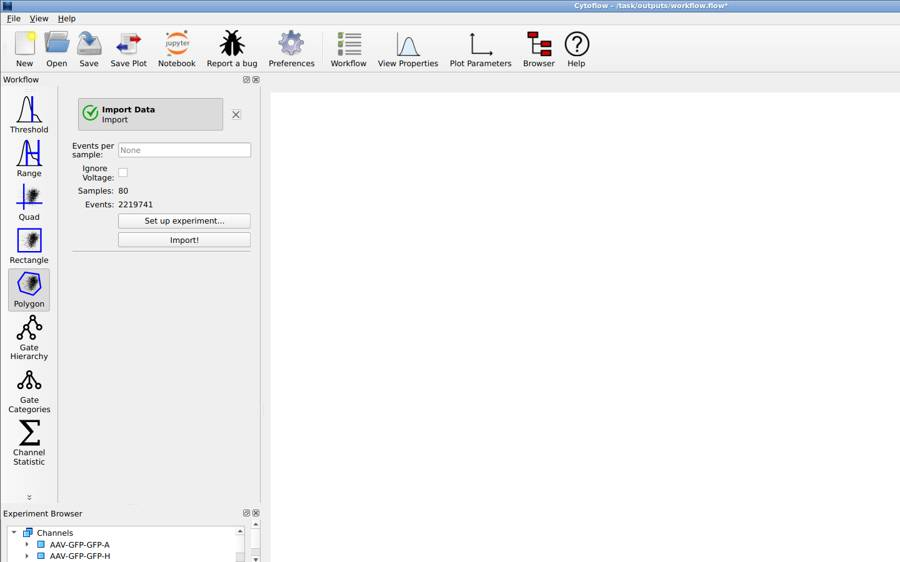
text(await tools.exec_command({cmd:"cu screenshot /tmp/polygon2.png","max_output_tokens":1000}));
image((await tools.view_image({path:"/tmp/polygon2.png"})).image_url);
Script completed Wall time 0.1 seconds Output:
{"chunk_id":"fa18bf","wall_time_seconds":0.000005258,"exit_code":0,"original_token_count":5,"output":"/tmp/polygon2.png\n"}
text(await tools.exec_command({cmd:"cu click 275 323\ncu type cells_scatter\ncu click 352 354\ncu screenshot /tmp/channels.png","max_output_tokens":1000}));
image((await tools.view_image({path:"/tmp/channels.png"})).image_url);
Script completed Wall time 0.6 seconds Output:
{"chunk_id":"e3c410","wall_time_seconds":0.450193596,"exit_code":0,"original_token_count":5,"output":"/tmp/channels.png\n"}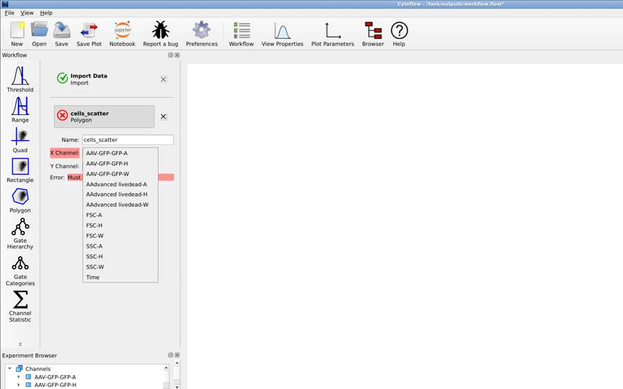
text(await tools.web__run({search_query:[{q:"site.cytoflow.readthedocs.io 1.3.2 gate hierarchy operation GUI polygon subset channel statistic count"}],response_length:"long"}));
text(await tools.exec_command({cmd:"cu click 220 498\ncu click 352 383\ncu screenshot /tmp/ychannels.png","max_output_tokens":1000}));
image((await tools.view_image({path:"/tmp/ychannels.png"})).image_url);
Script completed Wall time 1.2 seconds Output:
cytoflowgui.op_plugins.polygon — Cytoflow 1.3.2 documentation (https://cytoflow.readthedocs.io/en/1.3.2/dev_manual/api/cytoflowgui.op_plugins.polygon.html)
citeturn0search0 [wordlim: 200] Crawled: 4 months ago; The name of the channel on the gate’s X axis. ... operation_id = 'cytoflow.operations.polygon'#
view_id = 'cytoflowgui.workflow.operations.polygonview'#
# cytoflowgui.op_plugins.polygon#
Draw a polygon gate. To add vertices, use a single-click; to close the polygon, click the first vertex a second time.
Name
The operation name. Used to name the new metadata field that’s created by this module.
X Channel
The name of the channel on the gate’s X axis.
Y Channel
The name of the channel on the gate’s Y axis.
X Scale
The scale of the X axis for the interactive plot.
Y Scale
The scale of the Y axis for the interactive plot
Hue facet
Show different experimental conditions in different colors.
Subset
Show only a subset of the data.
class cytoflowgui.op_plugins.polygon.PolygonViewParamsHandler(*args: Any, **kwargs: Any)[source]#
Bases: `Controller`
class cytoflowgui.op_plugins.polygon.PolygonHandler(*args: Any, **kwargs: Any)[source]#
Bases: `OpHandler`
class cytoflowgui.op_plugins.polygon.PolygonViewHandler(*args: Any, **kwargs: Any)[source]#
Bases: `ViewHandler`
class cytoflowgui.op_plugins.polygon.PolygonPlugin[source]#
Bases: `Plugin`, `PluginHelpMixin`
operation_id = 'cytoflow.operations.polygon'#
view_id = 'cytoflowgui.workflow.operations.polygonview'#
short_name = 'Polygon'#
menu_group = 'Gates'#
get_operation()[source]#
get_handler(model, context)[source]#
get_icon()[source]#--------------------------------------------------------------------------------
Multi-channel statistic — Cytoflow 1.3.2 documentation (https://cytoflow.readthedocs.io/en/1.3.2/user_manual/reference/operations/multi_channel_stat.html)
citeturn0search1 [wordlim: 200] Crawled: 3 months ago; # Multi-channel statistic# ... The operation name. ... Only apply the function to a subset of the data.
# Multi-channel statistic#
Apply a function to multiple channels in subsets of a data set, and add it as a statistic to the experiment.
First, the module groups the data by the unique values of the variables in By, then applies Function to the Channels in each group. Multiple channels and functions can be specified
Name
The operation name. Becomes the new statistic’s name.
Channels
For each channel, you must specify:
* The channel to summarize
* The function to apply to it
* The name of the resulting feature
Subset
Only apply the function to a subset of the data. Useful if the function is very slow.
--------------------------------------------------------------------------------
Hierarchical Gating — Cytoflow 1.3.2 documentation (https://cytoflow.readthedocs.io/en/latest/dev_manual/tutorials/hierarchical_gating.html)
citeturn0search2 [wordlim: 200] Crawled: 4 months ago; single_gate = flow.PolygonOp(name = "Single_Cell", ... The `HierarchyOp` operation uses an ordered series of gates to create a new categorical condition. ... Now, let’s compute a simple statistic on the `FSC-A` channel and just count the number of events that have each label of the `Cell Type` condition, broken out by `Tube`.
ex_hierarchy_count = flow.ChannelStatisticOp(name = "Cell_Type", ... subset = "Single_Cell == True & Live == True").apply(ex_hierarchy)
`Cytoflow` has a `TableView`, but it’s not great for displaying wide tables. ... T Cell | 6280.0 | 6046.0 | 6411.0 | 7901.0 | 9322.0 | 10866.0
# Hierarchical Gating#
A common strategy for manual gating is hierarchical gating – a skilled cytometrist examines sets of one- or two-dimensional plots, one after another, to separate cells into “positive” and “negative” populations. While I like to think that modern cytometry has better, less biased tools to accomplish this task, it is still a necessary one in many contexts, and `Cytoflow` supports it.
This notebook demonstrates a hierarchical gating scheme from `Saeys Y, Van Gassen S, Lambrecht BN. Computational flow cytometry: helping to make sense of high-dimensional immunology data. Nature Reviews Immunology 16:449-462 (2016)`. Our question here is a basic one – what is the count of each cell type in each tube in the six tubes in the experiment? The data were downloaded from the Sayes Lab github and compensated using the bleedthrough matrix in the provided FlowJo workspace before being re-saved by `Cytoflow` – no other data preprocessing was applied.
We want to quantify NK, NK T, T and B cells; neutrophils, DCs, basophils, and macrophages. ## Gate single cells and live cells#
First, gate on `FSC_A` and `FSC-H` to separate single cells from debris and clumps.
single_gate = flow.PolygonOp(name = "Single_Cell",
xchannel = "FSC_A",
ychannel = "FSC_H")
single_gate.default_view(density = True,
huescale = "log",
interactive = True).plot(ex, gridsize = 100)
Figure
ex_single = single_gate.apply(ex)
Next, gate on `FSC_A` and `Live_Dead` to find live cells. Remember, dead cells are the positive population!
live_gate = flow.PolygonOp(name = "Live",
xchannel = "FSC_A",
ychannel = "Live_Dead",
yscale = "logicle")
live_gate.default_view(density = True,
huescale = "log",
subset = "Single_Cell == True",
interactive = True).plot(ex_single, gridsize = 100)
bcell_gate = flow.PolygonOp(name = "B_Cell",
xchannel = "CD3",
… [27,866 more characters not shown]{"chunk_id":"767104","wall_time_seconds":0.120791058,"exit_code":0,"original_token_count":5,"output":"/tmp/ychannels.png\n"}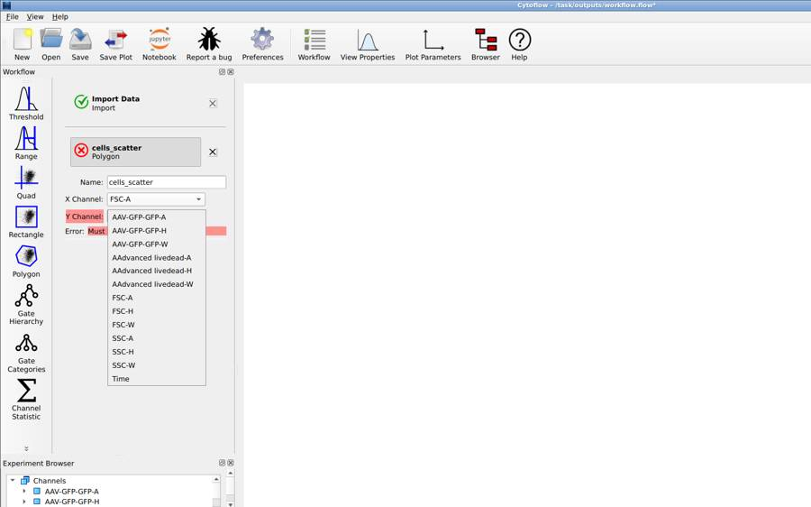
text(await tools.exec_command({cmd:"cu click 223 601\ncu click 654 73\ncu screenshot /tmp/plotview.png","max_output_tokens":1000}));
image((await tools.view_image({path:"/tmp/plotview.png"})).image_url);
Script completed Wall time 0.3 seconds Output:
{"chunk_id":"039bc1","wall_time_seconds":0.119908005,"exit_code":0,"original_token_count":5,"output":"/tmp/plotview.png\n"}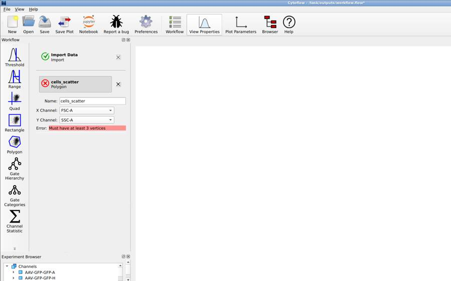
text(await tools.exec_command({cmd:"cu screenshot /tmp/cellplot.png","max_output_tokens":1000}));
image((await tools.view_image({path:"/tmp/cellplot.png"})).image_url);
Script completed Wall time 0.2 seconds Output:
{"chunk_id":"34166c","wall_time_seconds":0.000005736,"exit_code":0,"original_token_count":5,"output":"/tmp/cellplot.png\n"}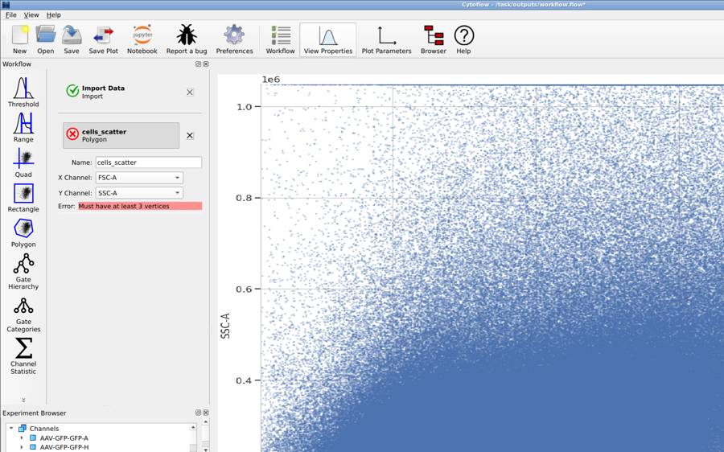
text(await tools.exec_command({cmd:"cu click 650 73\ncu screenshot /tmp/viewprops.png","max_output_tokens":1000}));
image((await tools.view_image({path:"/tmp/viewprops.png"})).image_url);
Script completed Wall time 0.3 seconds Output:
{"chunk_id":"1f92d2","wall_time_seconds":0.093943923,"exit_code":0,"original_token_count":5,"output":"/tmp/viewprops.png\n"}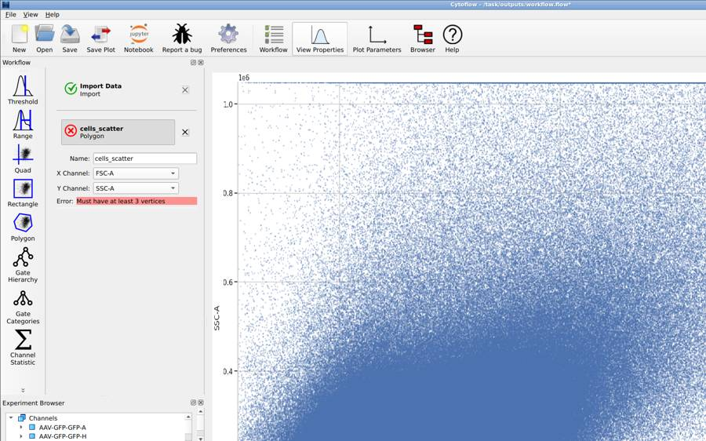
text(await tools.exec_command({cmd:"cu key alt+F10\ncu screenshot /tmp/resized.png","max_output_tokens":1000}));
image((await tools.view_image({path:"/tmp/resized.png"})).image_url);
Script completed Wall time 0.2 seconds Output:
{"chunk_id":"1cf676","wall_time_seconds":0.008182863,"exit_code":0,"original_token_count":5,"output":"/tmp/resized.png\n"}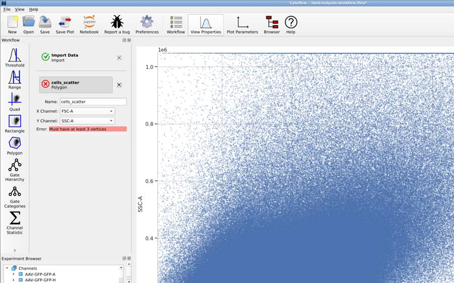
text(await tools.exec_command({cmd:"cu click 711 10 double\ncu screenshot /tmp/maximized.png","max_output_tokens":1000}));
image((await tools.view_image({path:"/tmp/maximized.png"})).image_url);
Script completed Wall time 0.3 seconds Output:
{"chunk_id":"59ac8b","wall_time_seconds":0.158220811,"exit_code":0,"original_token_count":5,"output":"/tmp/maximized.png\n"}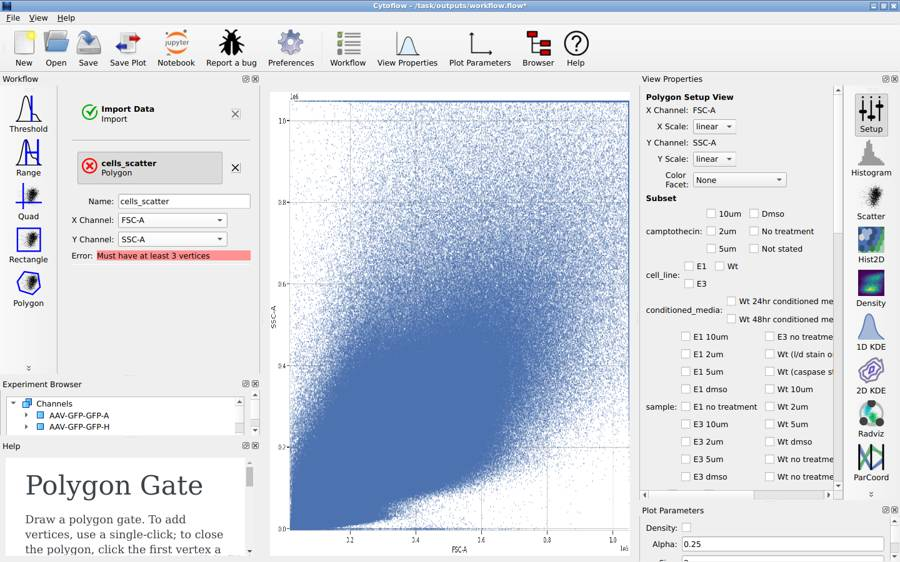
text(await tools.exec_command({cmd:"cu click 1098 844\ncu click 1165 202\ncu screenshot /tmp/scalelist.png","max_output_tokens":1000}));
image((await tools.view_image({path:"/tmp/scalelist.png"})).image_url);
Script completed Wall time 0.3 seconds Output:
{"chunk_id":"d6ca3f","wall_time_seconds":0.155321656,"exit_code":0,"original_token_count":5,"output":"/tmp/scalelist.png\n"}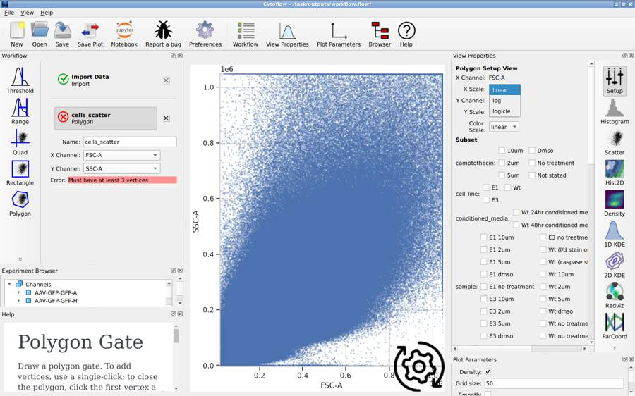
text(await tools.exec_command({cmd:"cu click 1127 229\ncu click 1165 255\ncu screenshot /tmp/yloglist.png","max_output_tokens":1000}));
image((await tools.view_image({path:"/tmp/yloglist.png"})).image_url);
Script completed Wall time 0.3 seconds Output:
{"chunk_id":"12b46b","wall_time_seconds":0.132657806,"exit_code":0,"original_token_count":5,"output":"/tmp/yloglist.png\n"}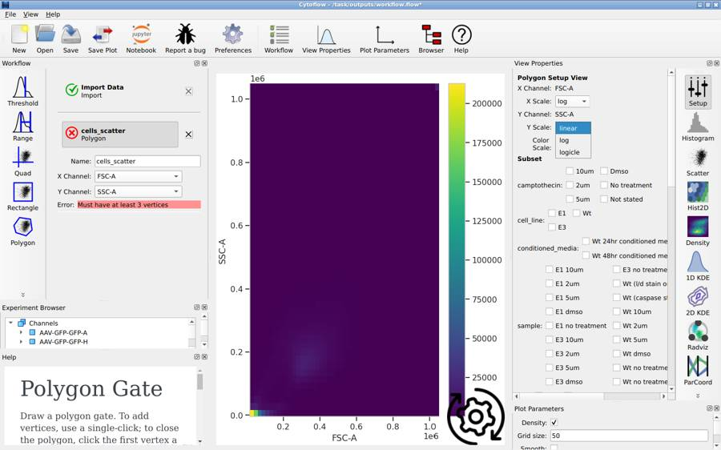
text(await tools.exec_command({cmd:"cu click 1126 279\ncu click 1166 287\ncu screenshot /tmp/huescale.png","max_output_tokens":1000}));
image((await tools.view_image({path:"/tmp/huescale.png"})).image_url);
Script completed Wall time 0.3 seconds Output:
{"chunk_id":"0ec23e","wall_time_seconds":0.132237732,"exit_code":0,"original_token_count":5,"output":"/tmp/huescale.png\n"}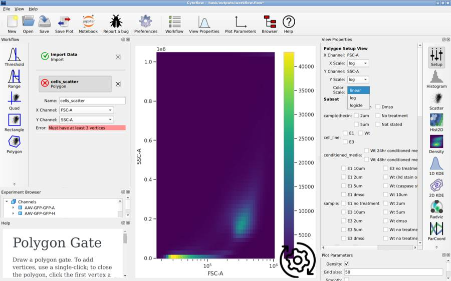
text(await tools.exec_command({cmd:"cu click 1126 313\ncu screenshot /tmp/logdensity.png","max_output_tokens":1000}));
image((await tools.view_image({path:"/tmp/logdensity.png"})).image_url);
Script completed Wall time 0.2 seconds Output:
{"chunk_id":"0c18f0","wall_time_seconds":0.028560227,"exit_code":0,"original_token_count":5,"output":"/tmp/logdensity.png\n"}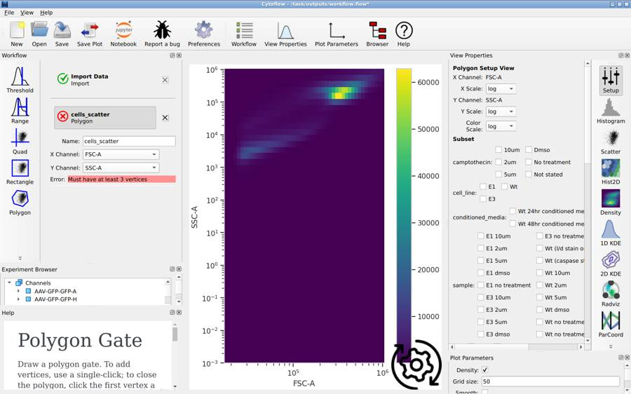
text(await tools.exec_command({cmd:"cu drag 1184 805 1184 549\ncu click 408 712\ncu screenshot /tmp/params.png","max_output_tokens":1000}));
image((await tools.view_image({path:"/tmp/params.png"})).image_url);
Script completed Wall time 0.2 seconds Output:
{"chunk_id":"aa384b","wall_time_seconds":0.05748342,"exit_code":0,"original_token_count":4,"output":"/tmp/params.png\n"}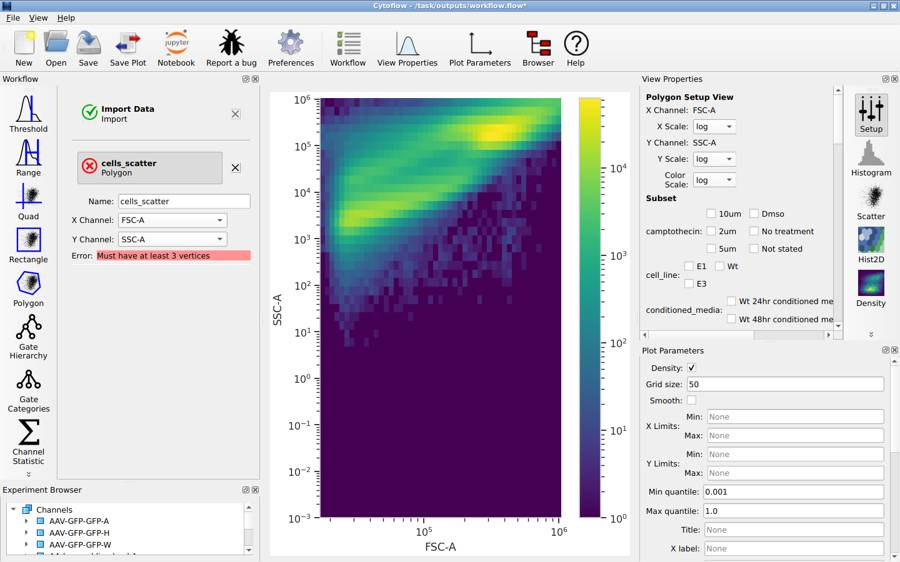
text(await tools.exec_command({cmd:"cu click 1241 668\ncu key ctrl+a\ncu type 10000\ncu key tab\ncu click 1243 697\ncu key ctrl+a\ncu type 1200000\ncu key tab\ncu click 1234 728\ncu key ctrl+a\ncu type 1000\ncu key tab\ncu click 1238 759\ncu key ctrl+a\ncu type 1200000\ncu key tab\ncu screenshot /tmp/celllimits.png","max_output_tokens":1000}));
image((await tools.view_image({path:"/tmp/celllimits.png"})).image_url);
Script completed Wall time 1.2 seconds Output:
{"chunk_id":"5a49a0","wall_time_seconds":1.059899089,"exit_code":0,"original_token_count":97,"output":"(symbol) No such key name 'tab'. Ignoring it.\n(symbol) No such key name 'tab'. Ignoring it.\n(symbol) No such key name 'tab'. Ignoring it.\n(symbol) No such key name 'tab'. Ignoring it.\n(symbol) No such key name 'tab'. Ignoring it.\n(symbol) No such key name 'tab'. Ignoring it.\n(symbol) No such key name 'tab'. Ignoring it.\n(symbol) No such key name 'tab'. Ignoring it.\n/tmp/celllimits.png\n"}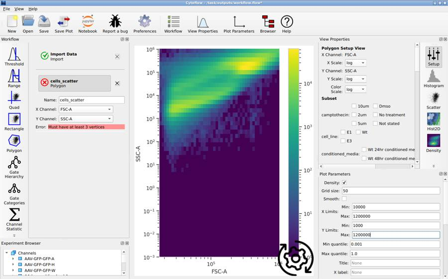
text(await tools.exec_command({cmd:"cu click 1092 646\ncu click 42 835\ncu screenshot /tmp/gateview.png","max_output_tokens":1000}));
image((await tools.view_image({path:"/tmp/gateview.png"})).image_url);
Script completed Wall time 0.3 seconds Output:
{"chunk_id":"bbfe46","wall_time_seconds":0.129768398,"exit_code":0,"original_token_count":5,"output":"/tmp/gateview.png\n"}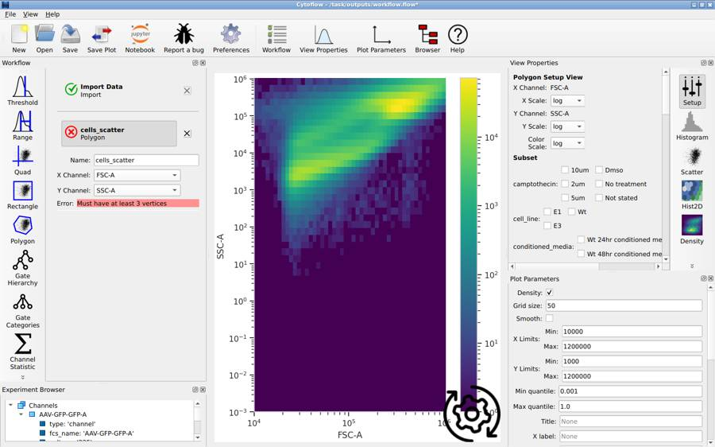
text(await tools.exec_command({cmd:"sleep 3\ncu screenshot /tmp/settled.png","max_output_tokens":1000}));
image((await tools.view_image({path:"/tmp/settled.png"})).image_url);
Script completed Wall time 3.1 seconds Output:
{"chunk_id":"98ce8e","wall_time_seconds":2.920672515,"exit_code":0,"original_token_count":5,"output":"/tmp/settled.png\n"}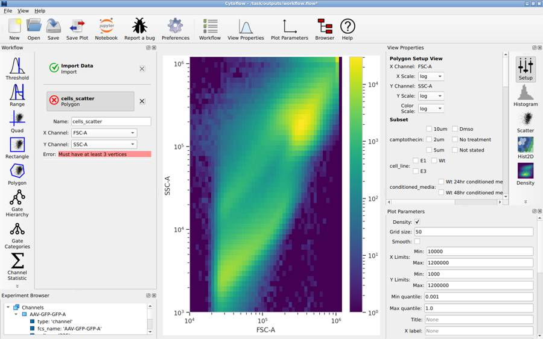
text(await tools.exec_command({cmd:"cu click 639 437\ncu click 697 521\ncu click 790 521\ncu click 893 437\ncu click 893 167\ncu click 679 167\ncu click 620 350\ncu click 639 437\nsleep 3\ncu key ctrl+s\ncu screenshot /tmp/cellgate.png","max_output_tokens":1000}));
image((await tools.view_image({path:"/tmp/cellgate.png"})).image_url);
Script completed Wall time 4.0 seconds Output:
{"chunk_id":"59b154","wall_time_seconds":3.7915882,"exit_code":0,"original_token_count":5,"output":"/tmp/cellgate.png\n"}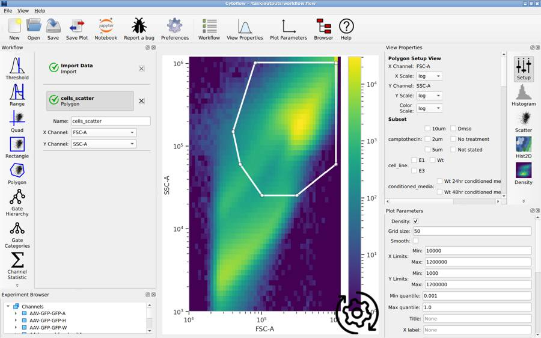
text(await tools.exec_command({cmd:"cu click 45 455\nsleep 1\ncu screenshot /tmp/singletop.png","max_output_tokens":1000}));
image((await tools.view_image({path:"/tmp/singletop.png"})).image_url);
Script completed Wall time 1.2 seconds Output:
{"chunk_id":"a27f44","wall_time_seconds":1.02504933,"exit_code":0,"original_token_count":5,"output":"/tmp/singletop.png\n"}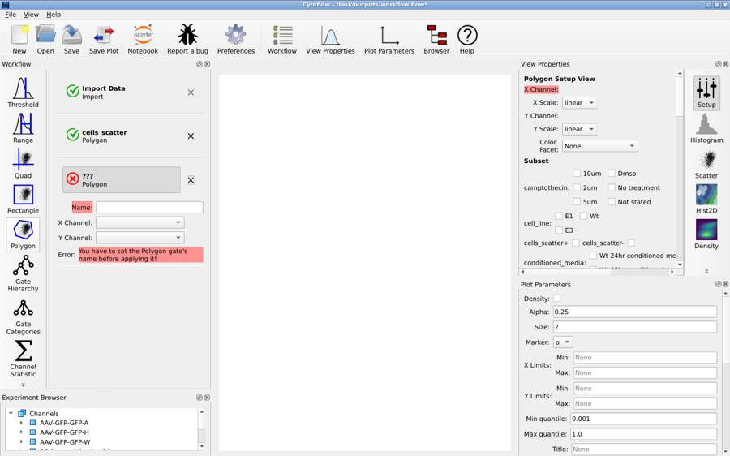
text(await tools.exec_command({cmd:"cu click 265 408\ncu type singlets\ncu click 353 438\ncu key f\ncu key Return\ncu click 351 469\ncu screenshot /tmp/singletchannels.png","max_output_tokens":1000}));
image((await tools.view_image({path:"/tmp/singletchannels.png"})).image_url);
Script completed Wall time 0.6 seconds Output:
{"chunk_id":"0106cd","wall_time_seconds":0.471323774,"exit_code":0,"original_token_count":7,"output":"/tmp/singletchannels.png\n"}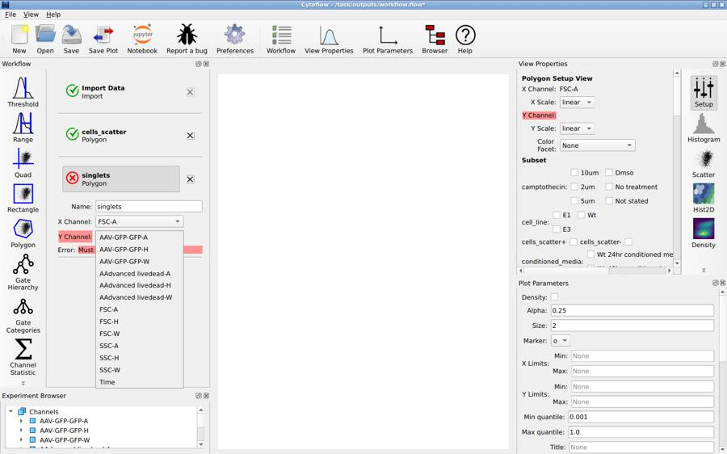
text(await tools.exec_command({cmd:"cu click 222 638\ncu click 1135 479\ncu click 1097 589\nsleep 3\ncu screenshot /tmp/singletshape.png","max_output_tokens":1000}));
image((await tools.view_image({path:"/tmp/singletshape.png"})).image_url);
Script completed Wall time 3.4 seconds Output:
{"chunk_id":"834006","wall_time_seconds":3.235569768,"exit_code":0,"original_token_count":6,"output":"/tmp/singletshape.png\n"}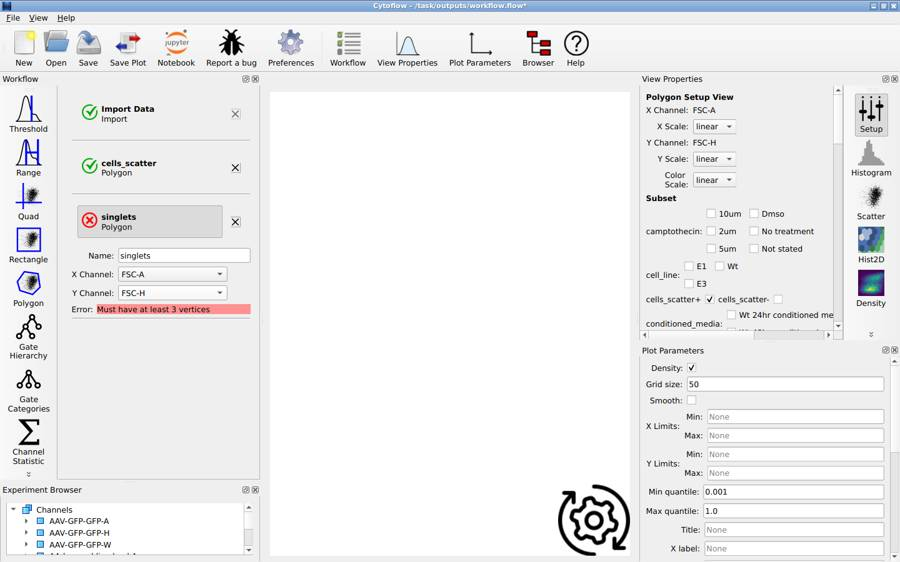
text(await tools.exec_command({cmd:"cu click 1166 288\ncu key l\ncu key Return\nsleep 4\ncu screenshot /tmp/singletdensity.png","max_output_tokens":1000}));
image((await tools.view_image({path:"/tmp/singletdensity.png"})).image_url);
Script completed Wall time 4.2 seconds Output:
{"chunk_id":"3c968b","wall_time_seconds":4.057492057,"exit_code":0,"original_token_count":6,"output":"/tmp/singletdensity.png\n"}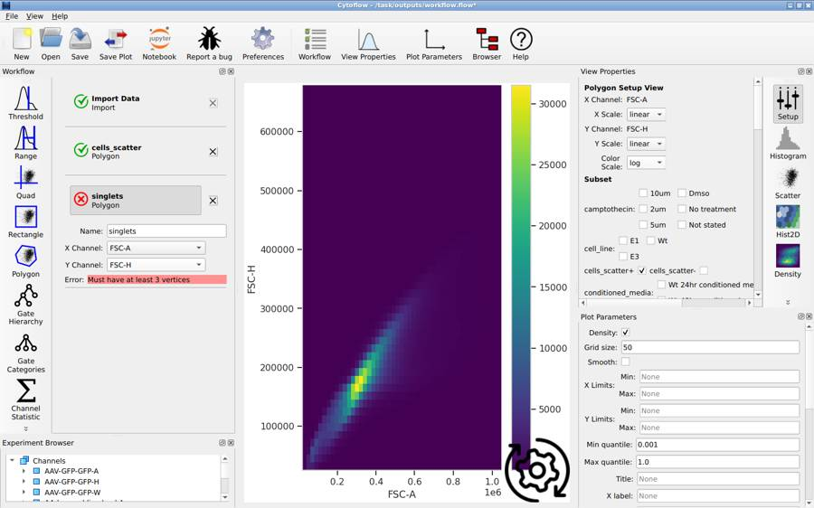
text(await tools.exec_command({cmd:"cu click 1231 666\ncu key ctrl+a\ncu type 0\ncu click 1246 698\ncu key ctrl+a\ncu type 1100000\ncu click 1246 728\ncu key ctrl+a\ncu type 0\ncu click 1245 758\ncu key ctrl+a\ncu type 650000\ncu click 1083 640\nsleep 4\ncu screenshot /tmp/singletlimits.png","max_output_tokens":1000}));
image((await tools.view_image({path:"/tmp/singletlimits.png"})).image_url);
Script completed Wall time 5.1 seconds Output:
{"chunk_id":"69bd2e","wall_time_seconds":4.950269585,"exit_code":0,"original_token_count":6,"output":"/tmp/singletlimits.png\n"}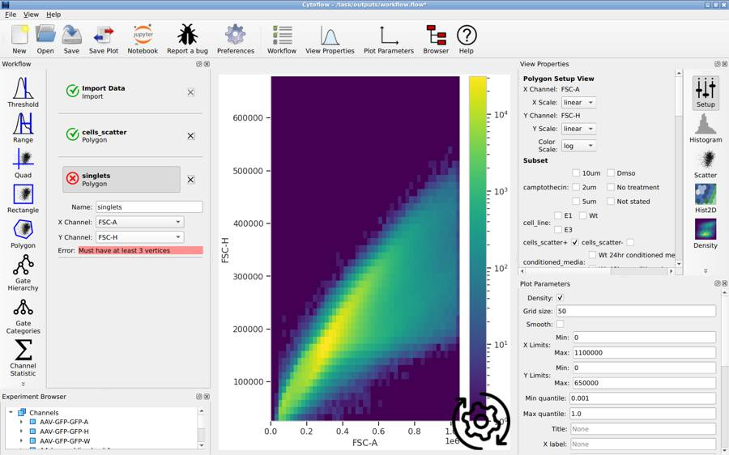
text(await tools.exec_command({cmd:"cu click 552 812\ncu click 881 413\ncu click 881 153\ncu click 755 361\ncu click 586 707\ncu click 552 775\ncu click 552 812\nsleep 4\ncu key ctrl+s\ncu screenshot /tmp/singletgate.png","max_output_tokens":1000}));
image((await tools.view_image({path:"/tmp/singletgate.png"})).image_url);
Script completed Wall time 4.9 seconds Output:
{"chunk_id":"6d22ff","wall_time_seconds":4.693735482,"exit_code":0,"original_token_count":6,"output":"/tmp/singletgate.png\n"}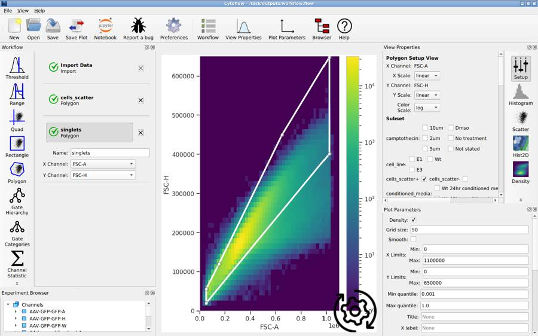
text(await tools.exec_command({cmd:"cu drag 203 775 203 581\ncu click 42 834\ncu screenshot /tmp/browsermeta.png","max_output_tokens":1000}));
image((await tools.view_image({path:"/tmp/browsermeta.png"})).image_url);
Script completed Wall time 0.2 seconds Output:
{"chunk_id":"85cb8d","wall_time_seconds":0.059463185,"exit_code":0,"original_token_count":6,"output":"/tmp/browsermeta.png\n"}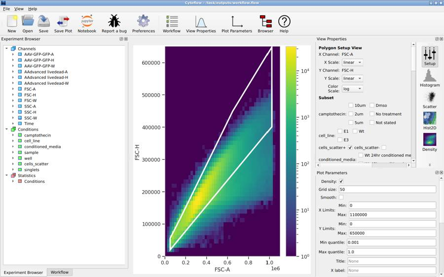
text(await tools.exec_command({cmd:"cu click 42 175\ncu screenshot /tmp/aavmeta.png","max_output_tokens":1000}));
image((await tools.view_image({path:"/tmp/aavmeta.png"})).image_url);
Script completed Wall time 0.2 seconds Output:
{"chunk_id":"01a004","wall_time_seconds":0.027134238,"exit_code":0,"original_token_count":5,"output":"/tmp/aavmeta.png\n"}text(await tools.exec_command({cmd:"cu click 42 310\ncu click 1392 316\nsleep 1\ncu screenshot /tmp/scatterview.png","max_output_tokens":1000}));
image((await tools.view_image({path:"/tmp/scatterview.png"})).image_url);
Script completed Wall time 1.3 seconds Output:
{"chunk_id":"c8a0db","wall_time_seconds":1.130159056,"exit_code":0,"original_token_count":6,"output":"/tmp/scatterview.png\n"}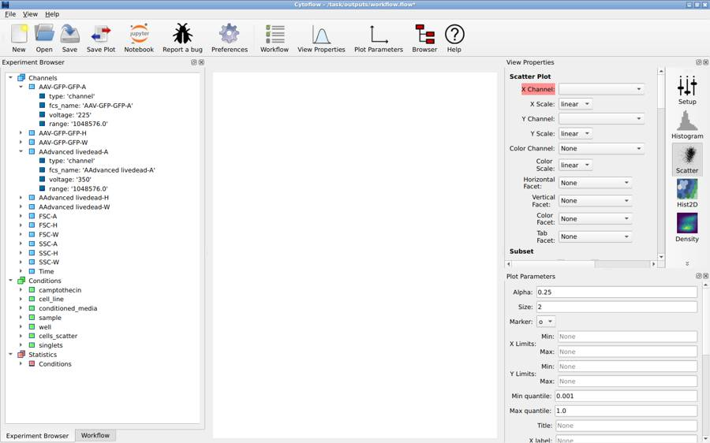
text(await tools.exec_command({cmd:"cu click 1294 180\ncu screenshot /tmp/scatterchannels.png","max_output_tokens":1000}));
image((await tools.view_image({path:"/tmp/scatterchannels.png"})).image_url);
Script completed Wall time 0.2 seconds Output:
{"chunk_id":"7fa727","wall_time_seconds":0.022715354,"exit_code":0,"original_token_count":7,"output":"/tmp/scatterchannels.png\n"}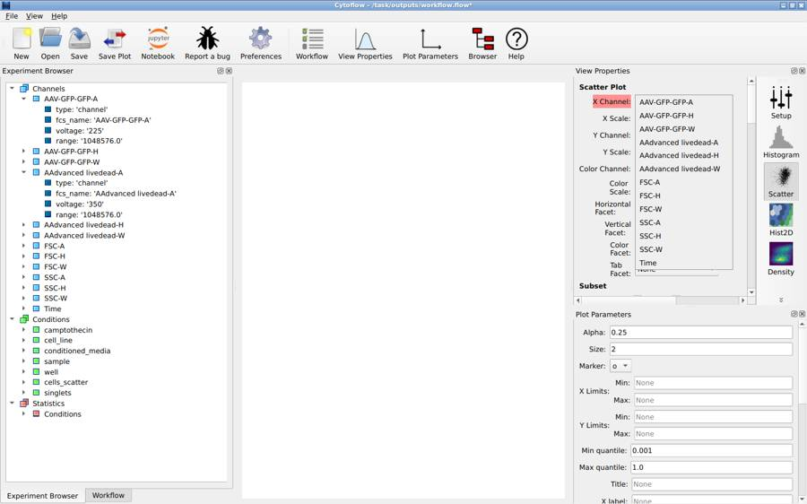
text(await tools.exec_command({cmd:"cu click 1210 182\ncu click 1297 240\ncu key Home\ncu key Down\ncu key Down\ncu key Down\ncu key Return\ncu click 1190 210\ncu key End\ncu key Return\ncu click 1190 270\ncu key End\ncu key Return\ncu click 1271 480\ncu key w\ncu key Return\ncu drag 1184 548 1184 749\nsleep 3\ncu screenshot /tmp/controlview.png","max_output_tokens":1000}));
image((await tools.view_image({path:"/tmp/controlview.png"})).image_url);
Script completed Wall time 3.8 seconds Output:
{"chunk_id":"8ce2dd","wall_time_seconds":3.654626459,"exit_code":0,"original_token_count":6,"output":"/tmp/controlview.png\n"}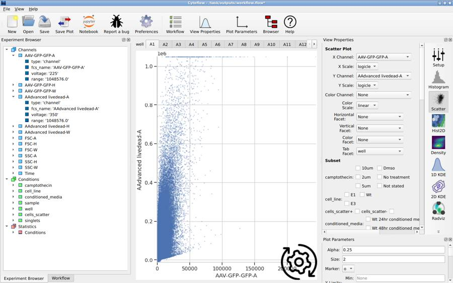
text(await tools.exec_command({cmd:"cu click 1206 562\ncu click 1206 589\ncu click 1136 672\ncu scroll 1311 684 down 5\nsleep 3\ncu screenshot /tmp/subsets.png","max_output_tokens":1000}));
image((await tools.view_image({path:"/tmp/subsets.png"})).image_url);
Script completed Wall time 3.9 seconds Output:
{"chunk_id":"f4f237","wall_time_seconds":3.751206601,"exit_code":0,"original_token_count":5,"output":"/tmp/subsets.png\n"}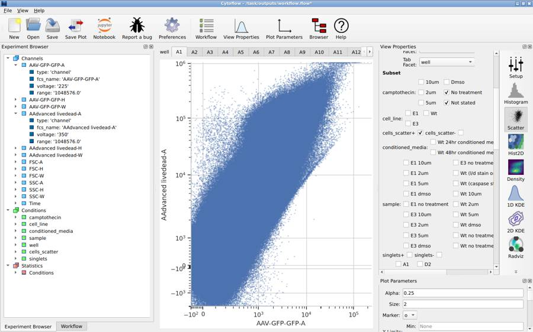
text(await tools.exec_command({cmd:"cu click 1106 690\nsleep 4\ncu screenshot /tmp/controls_tabs.png","max_output_tokens":1000}));
image((await tools.view_image({path:"/tmp/controls_tabs.png"})).image_url);
Script completed Wall time 4.2 seconds Output:
{"chunk_id":"dfa848","wall_time_seconds":4.03238988,"exit_code":0,"original_token_count":6,"output":"/tmp/controls_tabs.png\n"}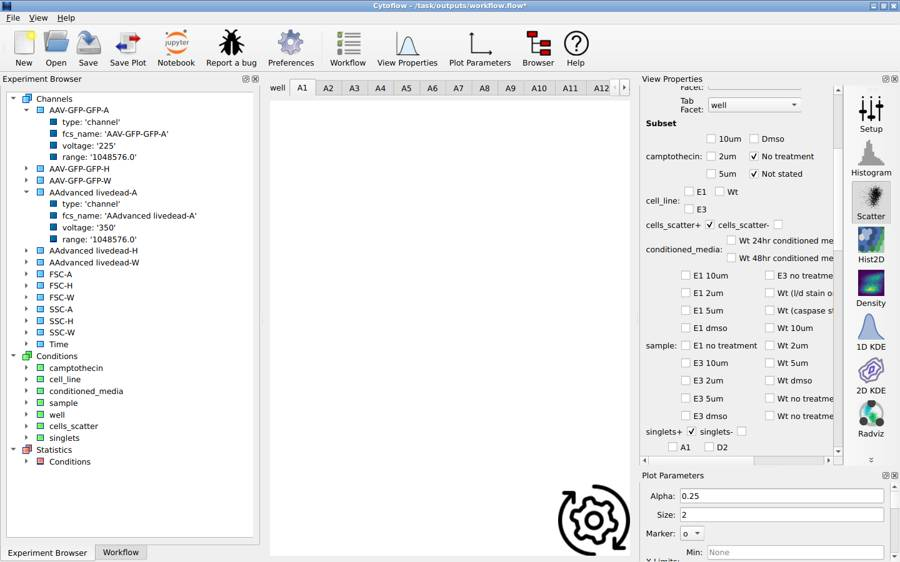
text(await tools.exec_command({cmd:"cu click 1271 168\ncu key Home\ncu key Return\ncu scroll 1304 261 up 10\nsleep 3\ncu screenshot /tmp/controlsetup.png","max_output_tokens":1000}));
image((await tools.view_image({path:"/tmp/controlsetup.png"})).image_url);
Script completed Wall time 4.2 seconds Output:
{"chunk_id":"af9ae8","wall_time_seconds":4.064896794,"exit_code":0,"original_token_count":6,"output":"/tmp/controlsetup.png\n"}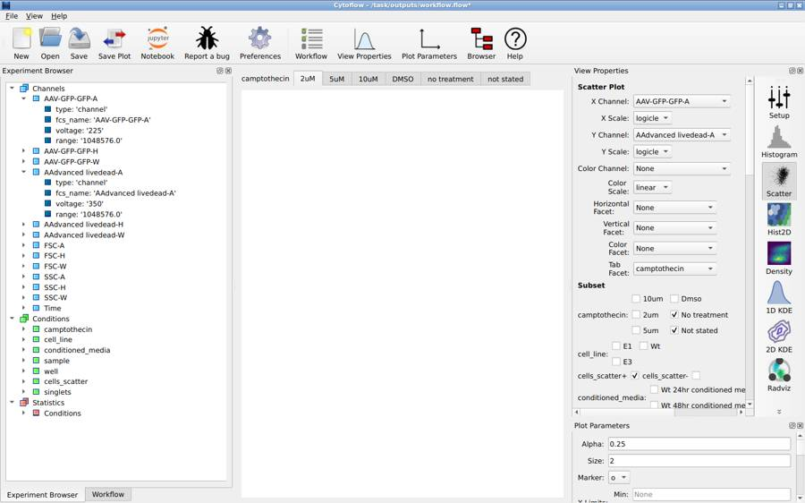
text(await tools.exec_command({cmd:"cu click 1272 481\ncu screenshot /tmp/facetlist.png","max_output_tokens":1000}));
image((await tools.view_image({path:"/tmp/facetlist.png"})).image_url);
Script completed Wall time 0.2 seconds Output:
{"chunk_id":"318270","wall_time_seconds":0.023342181,"exit_code":0,"original_token_count":5,"output":"/tmp/facetlist.png\n"}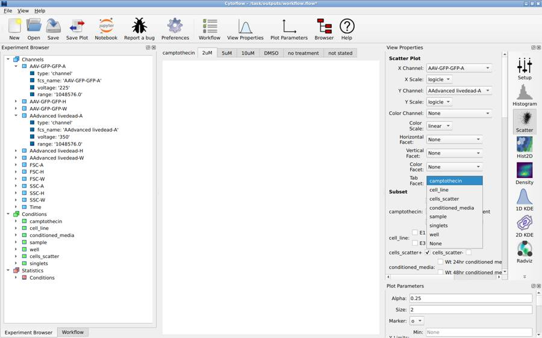
text(await tools.exec_command({cmd:"cu key End\ncu key Return\ncu click 1272 371\ncu key w\ncu key Return\ncu scroll 1322 855 down 5\nsleep 4\ncu screenshot /tmp/controls_facets.png","max_output_tokens":1000}));
image((await tools.view_image({path:"/tmp/controls_facets.png"})).image_url);
Script completed Wall time 4.8 seconds Output:
{"chunk_id":"4bafdd","wall_time_seconds":4.605993061,"exit_code":0,"original_token_count":7,"output":"/tmp/controls_facets.png\n"}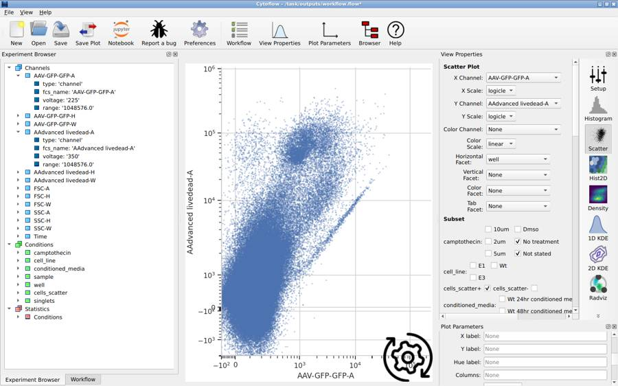
text(await tools.exec_command({cmd:"cu click 1217 874\ncu key ctrl+a\ncu type 4\ncu click 1057 846\ncu click 864 71\nsleep 4\ncu screenshot /tmp/controls4.png","max_output_tokens":1000}));
image((await tools.view_image({path:"/tmp/controls4.png"})).image_url);
Script completed Wall time 4.5 seconds Output:
{"chunk_id":"83cda5","wall_time_seconds":4.299479602,"exit_code":0,"original_token_count":5,"output":"/tmp/controls4.png\n"}text(await tools.web__run({search_query:[{q:"site.cytoflow.readthedocs.io/en/1.3.2/user_manual/reference/operations \"Linear Bleedthrough\" \"Subset\""}],response_length:"long"}));
text(await tools.exec_command({cmd:"cu scroll 52 811 down 7\nsleep 1\ncu screenshot /tmp/operationtools.png","max_output_tokens":1000}));
image((await tools.view_image({path:"/tmp/operationtools.png"})).image_url);
Script completed Wall time 2.7 seconds Output:
HOWTO: Compensate for bleedthrough — Cytoflow 1.3.2 documentation (https://cytoflow.readthedocs.io/en/1.3.2/user_manual/howto/bleedthrough.html)
citeturn1search0 [wordlim: 200] Crawled: 4 months ago; Fortunately, a little linear algebra can fix this problem, and `Cytoflow` makes it easy. ... /../_images/bleedthrough3.png ... By choosing the “Cells” subset, I told `Cytoflow` to apply the same gate from that operation to the blank data before estimating the autofluorescence correction.
# HOWTO: Compensate for bleedthrough#
One common issue in flow cytometry is the fact that spectrally adjacent channels often overlap. For example, if I’m trying to measure a green fluorophore like FITC, and a yellow fluorophore like PE, a significant amount of FITC fluorescence will also be picked up by my PE channel, as demonstrated by the screenshot below (from the BD Spectrum Viewer)
Image: ../../_images/bleedthrough1.png
As you can see, something like 12% of the FITC fluorescence ends up in the PE channel!
Fortunately, a little linear algebra can fix this problem, and `Cytoflow` makes it easy. However, you’ll need to run a few controls:
* A blank control – one with your cells but without any fluorophores. This will let us measure the “background” fluorescence (or autofluorescence) of the samples.
* A set of single-color controls – for each fluorophore, one control that is stained with (or expresses) only that fluorophore and no others. These let us measure how much signal “bleeds through” into the non-target channels. These controls should be as bright as (but no brigher than) your brightest experimental sample.
Warning
These controls must be collected using the SAME instrument settings as your experimental samples. It’s really best if they’re collected at the SAME TIME as your experimental samples – even properly calibrated instruments are known to drift substantially between days, or even over the course of a single day. And yes, that means you really should run these controls for every experiment. If you’d like a way to correct for day-to-day variability, see HOWTO: Use beads to correct for day-to-day variation.
## Procedure#
1. Collect the controls listed above.
2. Import your data into `Cytoflow`. Do not import your control samples (unless they’re part of the experiment.) In the example below, we’ll have three fluorescence channels – Pacific Blue-A, FITC-A and PE-Tx-Red-YG-A – in addition to the forward and side-scatter channels.
Image: ../../_images/bleedthrough2.png
3. (Optional but recommended) - use a gate to filter out the “real” cells from debris and clumps. Here, I’m using a polygon gate on the foward-scatter and side-scatter channels to select the population of “real” cells. (I’ve named the population “Cells” – that’s how we’ll refer to it subsequently.
Image: ../../_images/bleedthrough3.png
4. Add the Autofluorescence operation (it’s the Image: AF button). Specify the file containing the data from the blank control, choose the channels you want to apply the correction to, and (if you followed the optional step above) choose the subset that you want to use to estimate the correction from. Once you’re done, click Estimate!
The diagnostic plot shows a histogram of the fluorescence values from the blank file, and the red line indicates their median. This is the amount of “autofluorescence” that will be subtracted from your experimental data.
Image: ../../_images/bleedthrough5.png
Note
By choosing the “Cells” subset, I told `Cytoflow` to apply the same gate from that operation to the blank data before estimating the autofluorescence correction. This way, the clumps and debris in the sample don’t influence that estimate. We’ll do the same thing in the next step, when we apply the bleedthrough compensation.
5. Add the Bleedthrough operation (it’s the Image: BL button). For each control you have, click Add Control. In the Controls list, choose the channel you’re correcting and the file that contains the control data. Again, if you followed the optional step, also choose the subset you want to estimate the correction from. Then, click Estimate!.
Here, the diagnostic plots show the data in the control files and the estimate that was fit to them. Because it’s a linear estimate, but the data is plotted on a logarithmic scale, the estimate lines are shown as curves.
Image: ../../_images/bleedthrough7.png
And that’s it. Now you can continue on with your analysis, secure in the knowledge that you’ve successfully separated the adjacent fluorescence channels.
If you’d like to learn more, Abcam has a good page about compensation, and Mario Roederer has an even more detailed treatment.--------------------------------------------------------------------------------
cytoflow.operations.bleedthrough_linear — Cytoflow 1.3.1.dev0+gac34ca973.d20250924 documentation (https://cytoflow.readthedocs.io/en/1.3.0/_modules/cytoflow/operations/bleedthrough_linear.html)
citeturn1search1 [wordlim: 200] Crawled: 1.1 years ago; # Source code for cytoflow.operations.bleedthrough_linear ... cytoflow.operations.bleedthrough_linear ... raise util.CytoflowOpError('subset', ... # for ReadTheDocs, which doesn't have swig
`BleedthroughLinearOp` -- compensates for spectral bleedthrough
in a `Experiment` using single-color controls
`BleedthroughLinearDiagnostic` -- a diagnostic view to make sure
that `BleedthroughLinearOp` correctly estimated its parameters.
class BleedthroughLinearOp(HasStrictTraits):
"""
Apply matrix-based bleedthrough correction to a set of fluorescence channels.
This is a traditional matrix-based compensation for bleedthrough. For each
pair of channels, the user specifies the proportion of the first channel
that bleeds through into the second; then, the module performs a matrix
multiplication to compensate the raw data.
The
… [33,460 more characters not shown]{"chunk_id":"19f622","wall_time_seconds":1.635116715,"exit_code":0,"original_token_count":6,"output":"/tmp/operationtools.png\n"}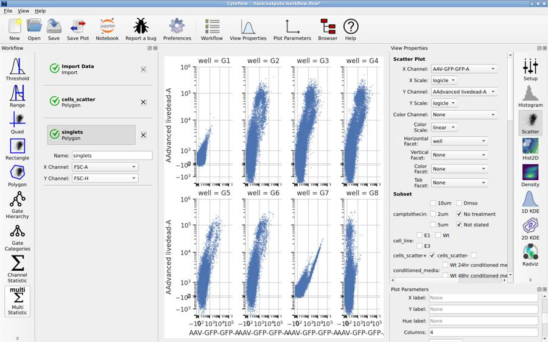
text(await tools.exec_command({cmd:"cu click 556 71\nsleep 2\ncu screenshot /tmp/controlwide.png","max_output_tokens":1000}));
image((await tools.view_image({path:"/tmp/controlwide.png"})).image_url);
Script completed Wall time 2.2 seconds Output:
{"chunk_id":"4cb7d9","wall_time_seconds":2.044202988,"exit_code":0,"original_token_count":6,"output":"/tmp/controlwide.png\n"}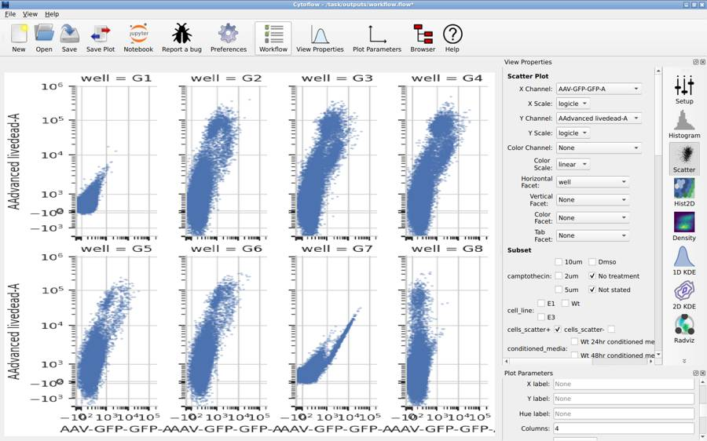
text(await tools.exec_command({cmd:"cu click 556 72\ncu move 44 889\nsleep 2\ncu screenshot /tmp/toolbarbottom.png","max_output_tokens":1000}));
image((await tools.view_image({path:"/tmp/toolbarbottom.png"})).image_url);
Script completed Wall time 2.2 seconds Output:
{"chunk_id":"95a555","wall_time_seconds":2.037929207,"exit_code":0,"original_token_count":6,"output":"/tmp/toolbarbottom.png\n"}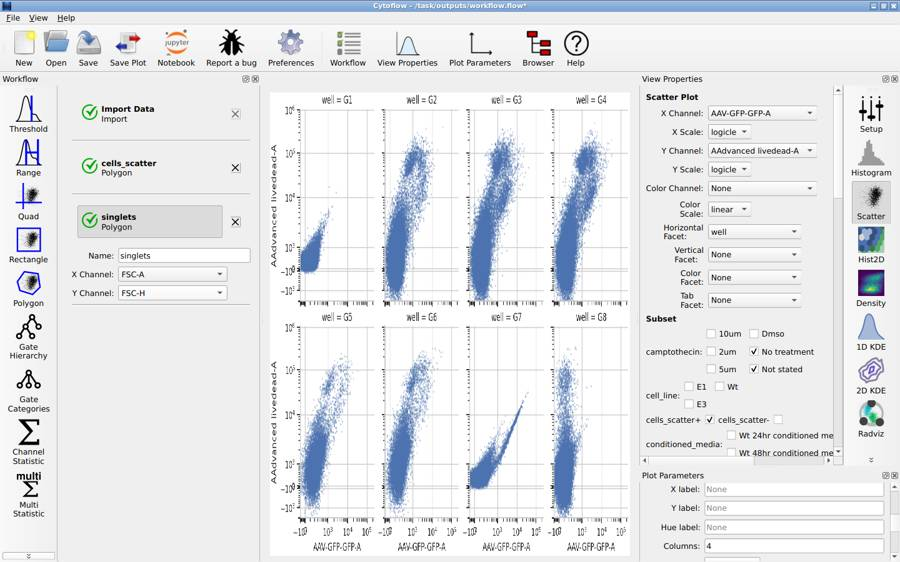
text(await tools.exec_command({cmd:"cu click 45 889\ncu screenshot /tmp/moreops.png","max_output_tokens":1000}));
image((await tools.view_image({path:"/tmp/moreops.png"})).image_url);
Script completed Wall time 0.2 seconds Output:
{"chunk_id":"418d68","wall_time_seconds":0.033222871,"exit_code":0,"original_token_count":5,"output":"/tmp/moreops.png\n"}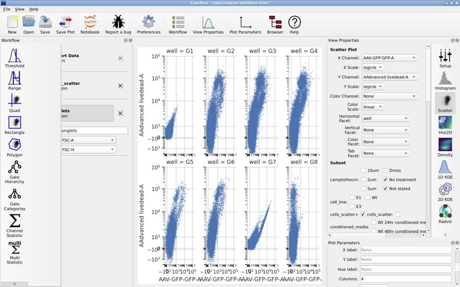
text(await tools.exec_command({cmd:"sleep 1\ncu screenshot /tmp/moreops2.png","max_output_tokens":1000}));
image((await tools.view_image({path:"/tmp/moreops2.png"})).image_url);
Script completed Wall time 1.1 seconds Output:
{"chunk_id":"e1c4e6","wall_time_seconds":0.930295511,"exit_code":0,"original_token_count":5,"output":"/tmp/moreops2.png\n"}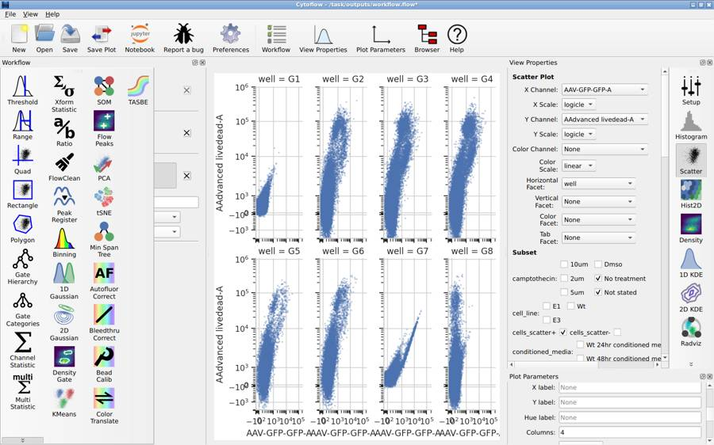
text(await tools.exec_command({cmd:"cu click 213 550\nsleep 1\ncu screenshot /tmp/afop.png","max_output_tokens":1000}));
image((await tools.view_image({path:"/tmp/afop.png"})).image_url);
Script completed Wall time 1.2 seconds Output:
{"chunk_id":"a2e126","wall_time_seconds":1.022967712,"exit_code":0,"original_token_count":4,"output":"/tmp/afop.png\n"}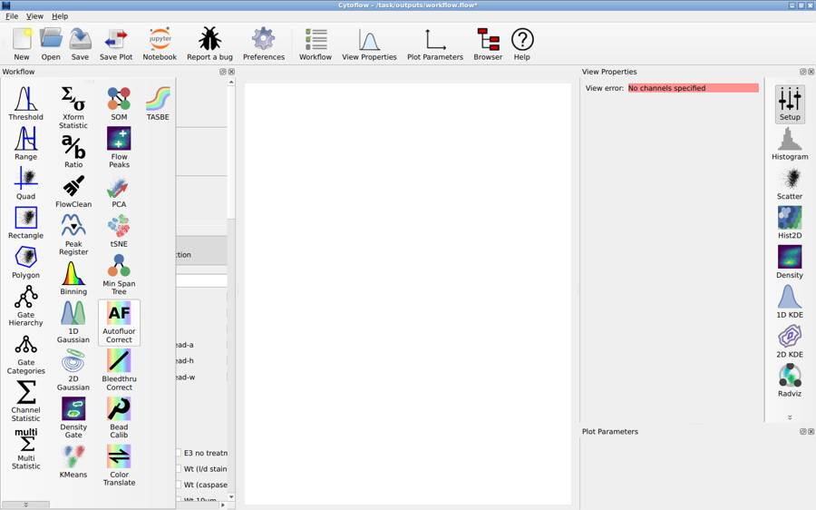
text(await tools.exec_command({cmd:"cu click 45 889\ncu scroll 354 734 down 5\nsleep 1\ncu screenshot /tmp/afparams.png","max_output_tokens":1000}));
image((await tools.view_image({path:"/tmp/afparams.png"})).image_url);
Script completed Wall time 1.7 seconds Output:
{"chunk_id":"fc1670","wall_time_seconds":1.5270157370000002,"exit_code":0,"original_token_count":5,"output":"/tmp/afparams.png\n"}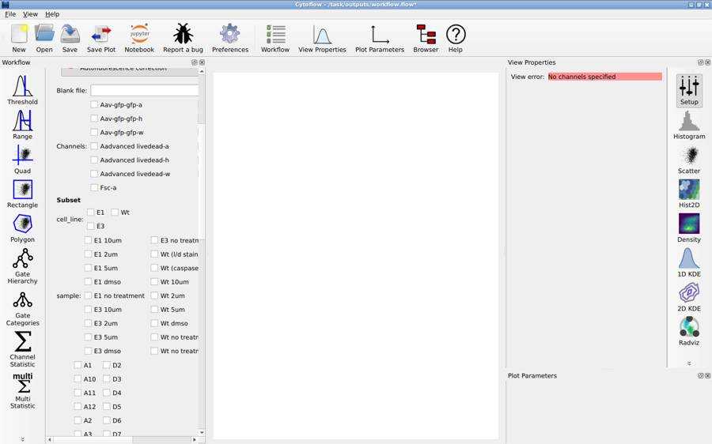
text(await tools.exec_command({cmd:"cu click 288 183\ncu paste /task/inputs/raw/Caspase-assay-2-mlk_caspase_Group_G1.fcs\ncu click 190 212\ncu click 190 295\ncu scroll 344 826 down 18\nsleep 1\ncu screenshot /tmp/afsubset.png","max_output_tokens":1000}));
image((await tools.view_image({path:"/tmp/afsubset.png"})).image_url);
Script completed Wall time 4.5 seconds Output:
{"chunk_id":"67501b","wall_time_seconds":4.36956595,"exit_code":0,"original_token_count":5,"output":"/tmp/afsubset.png\n"}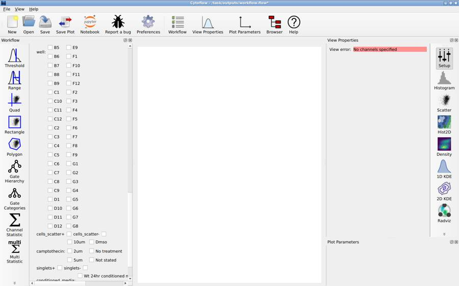
text(await tools.exec_command({cmd:"cu click 215 737\ncu click 186 842\ncu scroll 344 827 down 5\nsleep 1\ncu screenshot /tmp/afestimate.png","max_output_tokens":1000}));
image((await tools.view_image({path:"/tmp/afestimate.png"})).image_url);
Script completed Wall time 1.8 seconds Output:
{"chunk_id":"028ed9","wall_time_seconds":1.630734497,"exit_code":0,"original_token_count":5,"output":"/tmp/afestimate.png\n"}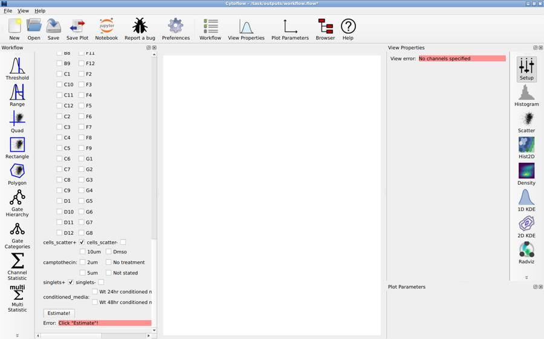
text(await tools.exec_command({cmd:"cu click 157 832\nsleep 3\ncu screenshot /tmp/afresult.png","max_output_tokens":1000}));
image((await tools.view_image({path:"/tmp/afresult.png"})).image_url);
Script completed Wall time 3.2 seconds Output:
{"chunk_id":"140a27","wall_time_seconds":3.024981641,"exit_code":0,"original_token_count":5,"output":"/tmp/afresult.png\n"}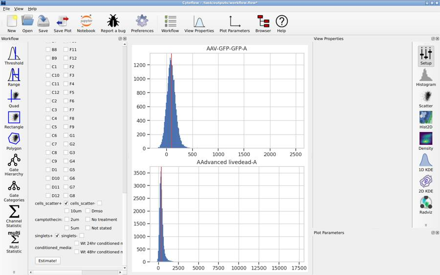
text(await tools.exec_command({cmd:"cu click 46 889\nsleep 1\ncu click 211 637\ncu click 46 889\ncu scroll 342 823 down 20\nsleep 2\ncu screenshot /tmp/bleedop.png","max_output_tokens":1000}));
image((await tools.view_image({path:"/tmp/bleedop.png"})).image_url);
Script completed Wall time 5.4 seconds Output:
{"chunk_id":"bac96f","wall_time_seconds":5.236966477,"exit_code":0,"original_token_count":5,"output":"/tmp/bleedop.png\n"}text(await tools.exec_command({cmd:"cu click 216 644\ncu click 187 748\ncu scroll 344 329 up 25\nsleep 1\ncu screenshot /tmp/bleedparams.png","max_output_tokens":1000}));
image((await tools.view_image({path:"/tmp/bleedparams.png"})).image_url);
Script completed Wall time 3.8 seconds Output:
{"chunk_id":"f95dac","wall_time_seconds":3.63580836,"exit_code":0,"original_token_count":6,"output":"/tmp/bleedparams.png\n"}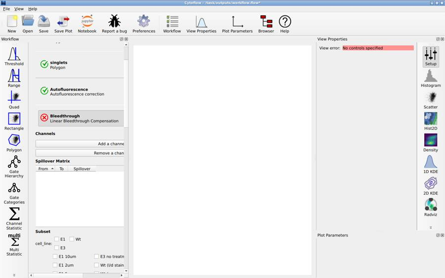
text(await tools.exec_command({cmd:"cu click 285 465\ncu click 285 465\nsleep 1\ncu screenshot /tmp/bleedchannels.png","max_output_tokens":1000}));
image((await tools.view_image({path:"/tmp/bleedchannels.png"})).image_url);
Script completed Wall time 1.3 seconds Output:
{"chunk_id":"7b19a8","wall_time_seconds":1.126431521,"exit_code":0,"original_token_count":6,"output":"/tmp/bleedchannels.png\n"}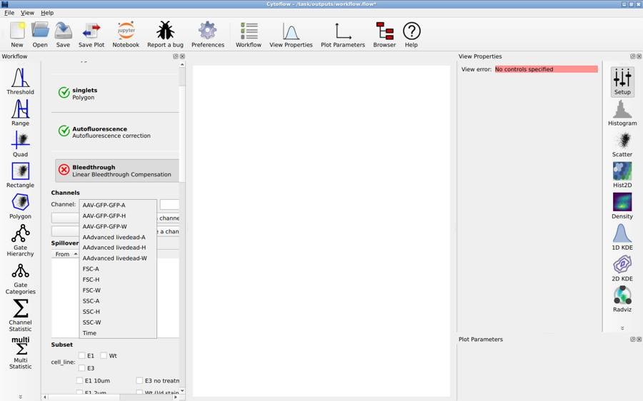
text(await tools.exec_command({cmd:"cu click 263 460\ncu click 380 458\ncu paste /task/inputs/raw/Caspase-assay-2-mlk_caspase_Group_G7.fcs\ncu click 281 489\nsleep 1\ncu screenshot /tmp/bleedsecond.png","max_output_tokens":1000}));
image((await tools.view_image({path:"/tmp/bleedsecond.png"})).image_url);
Script completed Wall time 2.7 seconds Output:
{"chunk_id":"9790de","wall_time_seconds":2.563238969,"exit_code":0,"original_token_count":6,"output":"/tmp/bleedsecond.png\n"}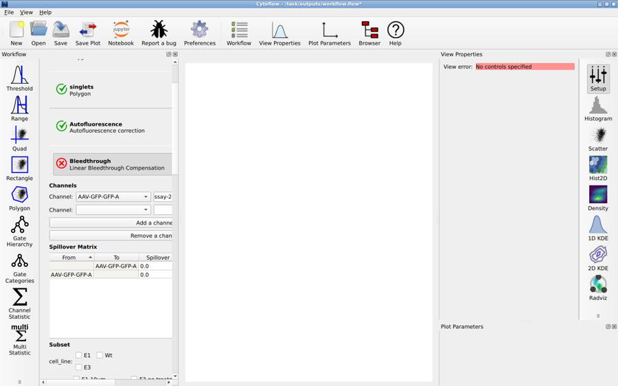
text(await tools.exec_command({cmd:"cu click 338 488\ncu key Home\ncu key Down\ncu key Down\ncu key Down\ncu key Return\ncu click 380 489\ncu paste /task/inputs/raw/Caspase-assay-2-mlk_caspase_Group_G8.fcs\ncu click 279 806\ncu scroll 351 822 down 35\nsleep 1\ncu screenshot /tmp/bleedestimate.png","max_output_tokens":1000}));
image((await tools.view_image({path:"/tmp/bleedestimate.png"})).image_url);
Script completed Wall time 6.4 seconds Output:
{"chunk_id":"d146ec","wall_time_seconds":6.224576707,"exit_code":0,"original_token_count":6,"output":"/tmp/bleedestimate.png\n"}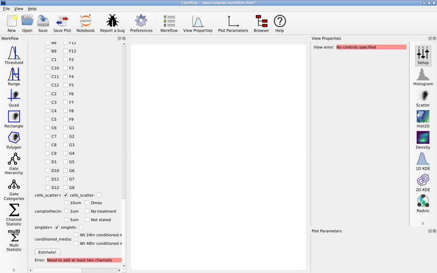
text(await tools.exec_command({cmd:"cu click 159 831\nsleep 4\ncu key ctrl+s\ncu screenshot /tmp/bleedfit.png","max_output_tokens":1000}));
image((await tools.view_image({path:"/tmp/bleedfit.png"})).image_url);
Script completed Wall time 4.2 seconds Output:
{"chunk_id":"7f3cb0","wall_time_seconds":4.05224451,"exit_code":0,"original_token_count":5,"output":"/tmp/bleedfit.png\n"}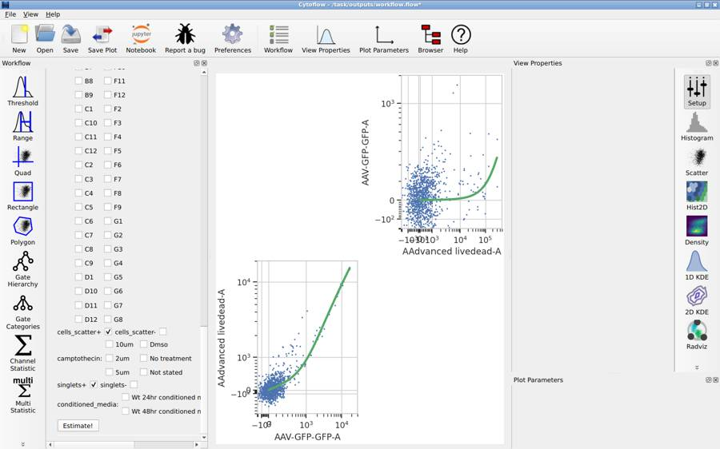
text(await tools.exec_command({cmd:"cu click 48 246\ncu scroll 345 822 down 35\nsleep 1\ncu screenshot /tmp/liveop.png","max_output_tokens":1000}));
image((await tools.view_image({path:"/tmp/liveop.png"})).image_url);
Script completed Wall time 4.7 seconds Output:
{"chunk_id":"a24254","wall_time_seconds":4.534755704,"exit_code":0,"original_token_count":4,"output":"/tmp/liveop.png\n"}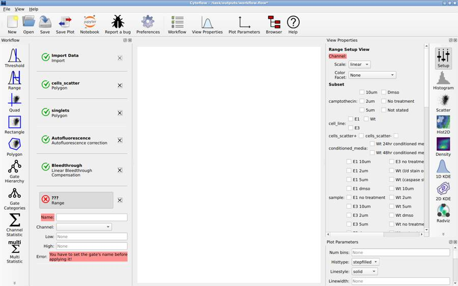
text(await tools.exec_command({cmd:"cu click 272 684\ncu type live\ncu click 339 714\ncu key Home\ncu key Down\ncu key Down\ncu key Down\ncu key Return\ncu click 1156 202\ncu key End\ncu key Return\ncu click 1233 235\ncu key s\ncu key Return\ncu click 1206 318\ncu click 1206 346\ncu click 1135 427\ncu scroll 1315 675 down 4\nsleep 3\ncu screenshot /tmp/livesubset.png","max_output_tokens":1000}));
image((await tools.view_image({path:"/tmp/livesubset.png"})).image_url);
Script completed Wall time 4.5 seconds Output:
{"chunk_id":"ec4fd5","wall_time_seconds":4.300506118,"exit_code":0,"original_token_count":5,"output":"/tmp/livesubset.png\n"}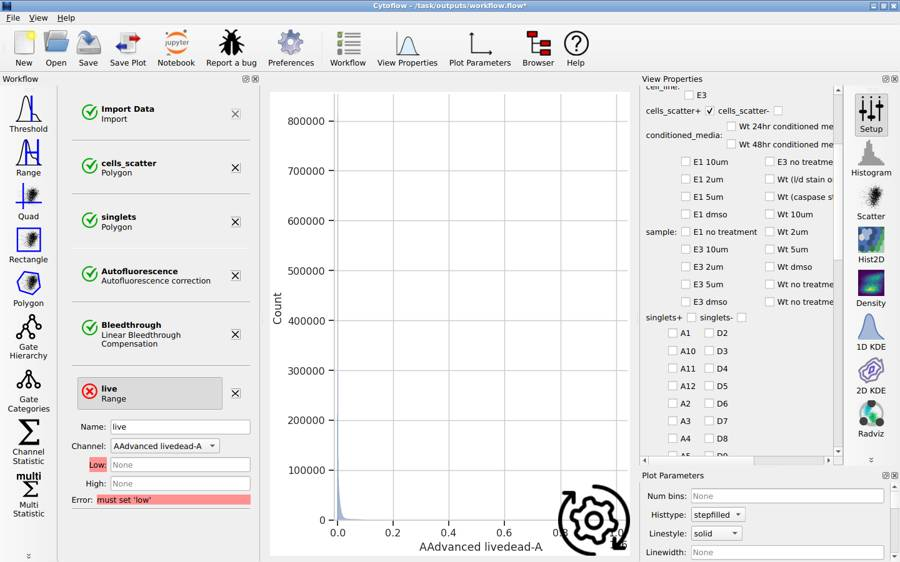
text(await tools.exec_command({cmd:"cu click 1106 509\nsleep 4\ncu screenshot /tmp/livecontrols.png","max_output_tokens":1000}));
image((await tools.view_image({path:"/tmp/livecontrols.png"})).image_url);
Script completed Wall time 4.2 seconds Output:
{"chunk_id":"a380af","wall_time_seconds":4.030399652,"exit_code":0,"original_token_count":6,"output":"/tmp/livecontrols.png\n"}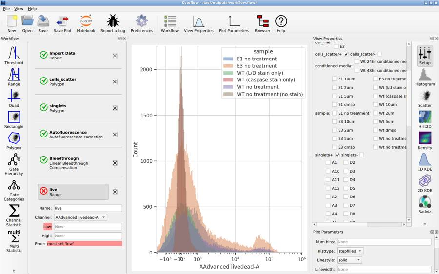
text(await tools.exec_command({cmd:"cu click 277 744\ncu key ctrl+a\ncu type -1000000\ncu click 273 775\ncu key ctrl+a\ncu type 10000\ncu click 152 714\nsleep 2\ncu key ctrl+s\ncu click 46 174\nsleep 1\ncu scroll 340 814 down 10\ncu screenshot /tmp/caspaseop.png","max_output_tokens":1000}));
image((await tools.view_image({path:"/tmp/caspaseop.png"})).image_url);
Script completed Wall time 4.9 seconds Output:
{"chunk_id":"63ad20","wall_time_seconds":4.762962852,"exit_code":0,"original_token_count":5,"output":"/tmp/caspaseop.png\n"}text(await tools.exec_command({cmd:"cu click 284 769\ncu key ctrl+a\ncu type caspase_positive\ncu click 350 800\ncu key Home\ncu key Return\ncu click 1135 199\ncu click 1080 277\ncu click 1105 552\ncu scroll 1308 251 up 12\nsleep 1\ncu screenshot /tmp/caspasesetup.png","max_output_tokens":1000}));
image((await tools.view_image({path:"/tmp/caspasesetup.png"})).image_url);
Script completed Wall time 3.3 seconds Output:
{"chunk_id":"2a245d","wall_time_seconds":3.125033161,"exit_code":0,"original_token_count":6,"output":"/tmp/caspasesetup.png\n"}text(await tools.exec_command({cmd:"cu click 1166 225\ncu key End\ncu key Return\ncu click 1245 258\ncu key s\ncu key Return\ncu click 1206 339\ncu click 1206 368\nsleep 4\ncu screenshot /tmp/caspasecontrols.png","max_output_tokens":1000}));
image((await tools.view_image({path:"/tmp/caspasecontrols.png"})).image_url);
Script completed Wall time 4.6 seconds Output:
{"chunk_id":"5d4162","wall_time_seconds":4.408426255,"exit_code":0,"original_token_count":7,"output":"/tmp/caspasecontrols.png\n"}text(await tools.exec_command({cmd:"sleep 3\ncu screenshot /tmp/caspasecontrols2.png","max_output_tokens":1000}));
image((await tools.view_image({path:"/tmp/caspasecontrols2.png"})).image_url);
Script completed Wall time 3.1 seconds Output:
{"chunk_id":"1f3305","wall_time_seconds":2.923656931,"exit_code":0,"original_token_count":7,"output":"/tmp/caspasecontrols2.png\n"}text(await tools.web__run({search_query:[{q:"site.cytoflow.readthedocs.io/en/1.3.2 \"Table\" \"Export\" \"Subrow\""}],response_length:"long"}));
text(await tools.exec_command({cmd:"cu click 278 830\ncu key ctrl+a\ncu type 1000\ncu click 157 800\nsleep 2\ncu key ctrl+s\ncu click 48 693\nsleep 1\ncu scroll 352 820 down 15\ncu screenshot /tmp/countop.png","max_output_tokens":1000}));
image((await tools.view_image({path:"/tmp/countop.png"})).image_url);
Script completed Wall time 6.3 seconds Output:
cytoflow.views.table — Cytoflow 1.3.2 documentation (https://cytoflow.readthedocs.io/en/1.3.2/dev_manual/api/cytoflow.views.table.html)
citeturn2search0 [wordlim: 200] Crawled: 4 months ago; # cytoflow.views.table# ... Each level of the statistic’s index must be used in `row_facet`, `column_facet`, `subrow_facet`, or `subcolumn_facet`. ... >>> import_op.tubes = [flow.Tube(file = "Plate01/RFP_Well_A3.fcs", ... Export the table to a file.
# cytoflow.views.table#
“Plot” a tabular view of a statistic.
`TableView` – the `IView` class that makes the plot.
class cytoflow.views.table.TableView[source]#
Bases: `HasStrictTraits`
“Plot” a tabular view of a statistic. Mostly useful for GUIs. Each level of the statistic’s index must be used in `row_facet`, `column_facet`, `subrow_facet`, or `subcolumn_facet`. This module can’t “plot” a statistic with more than four index levels unless `subset` is set and that results in extra levels being dropped.
statistic#
The name of the statistic to plot. Must be a key in the `Experiment.statistics` attribute of the `Experiment` being plotted. Each level of the statistic’s index must be used in `row_facet`, `column_facet`, `subrow_facet`, or `subcolumn_facet`.
Type:
str
row_facet#
The statistic facet to be used as row headers.
Type:
str
column_facet#
The statistic facet to be used as column headers.
Type:
str
subrow_facet#
The statistic facet to be used as subrow headers.
Type:
str
subcolumn_facet#
The statistic facet to be used as subcolumn headers.
Type:
str
fill#
If exporting, should we fill “None” entries with something?
Type:
Float
subset#
A Python expression used to select a subset of the statistic to plot.
Type:
str
Examples
Make a little data set.
>>> import cytoflow as flow
>>> import_op = flow.ImportOp()
>>> import_op.tubes = [flow.Tube(file = "Plate01/RFP_Well_A3.fcs",
... conditions = {'Dox' : 10.0}),
... flow.Tube(file = "Plate01/CFP_Well_A4.fcs",
... conditions = {'Dox' : 1.0})]
>>> import_op.conditions = {'Dox' : 'float'}
>>> ex = import_op.apply()
Add a threshold gate
>>> ex2 = flow.ThresholdOp(name = 'Threshold',
... channel = 'Y2-A',
... threshold = 2000).apply(ex)
Add a statistic
>>> ex3 = flow.ChannelStatisticOp(name = "ByDox",
... channel = "Y2-A",
... by = ['Dox', 'Threshold'],
... function = len).apply(ex2)
“Plot” the table
>>> flow.TableView(statistic = "ByDox",
... feature = "Y2-A",
... row_facet = "Dox",
... column_facet = "Threshold").plot(ex3)
Image: ../../_images/cytoflow-views-table-4.png
plot(experiment, plot_name=None, **kwargs)[source]#
Plot a table
export(experiment, filename)[source]#
Export the table to a file.--------------------------------------------------------------------------------
cytoflow.views.table — Cytoflow 0.0 documentation (https://cytoflow.readthedocs.io/en/stable/_modules/cytoflow/views/table.html)
citeturn2search1 [wordlim: 200] Crawled: 4 months ago; raise util.CytoflowViewError('subrow_facet', ... raise util.CytoflowViewError('subrow_facet', ... "You can still export the table, though." ... Export the table to a file.
"""
from warnings import warn
from traits.api import HasStrictTraits, Str, provides, Constant, Float
import matplotlib.pyplot as plt
from matplotlib.table import Table
import numpy as np
from .i_view import IView
import cytoflow
import cytoflow.utility as util
[docs]
@provides(IView)
class TableView(HasStrictTraits):
"""
"Plot" a tabular view of a statistic. Mostly useful for GUIs. Each level
of the statistic's index must be used in `row_facet`,
`column_facet`, `subrow_facet`, or `subcolumn_facet`.
This module can't "plot" a statistic with more than four index levels
unless `subset` is set and that results in extra levels being
dropped.
Attributes
----------
statistic : str
The name of the statistic to plot. Must be a key in the
`Experiment.statistics` attribute of the `Experiment`
being plotted. Each level of the statistic's index must be used
in `row_facet`, `column_facet`, `subrow_facet`, or
`subcolumn_facet`.
row_facet : str
The statistic facet to be used as row headers.
column_facet : str
The statistic facet to be used as column headers.
subrow_facet : str
The statistic facet to be used as subrow headers.
subcolumn_facet : str
The statistic facet to be used as subcolumn headers.
fill : Float
If exporting, should we fill "None" entries with something?
subset : str
A Python expression used to select a subset of the statistic to plot.
Examples
--------
Make a little data set.
.. plot::
:context: close-figs
>>> import cytoflow as flow
>>> import_op = flow.ImportOp()
>>> import_op.tubes = [flow.Tube(file = "Plate01/RFP_Well_A3.fcs",
... conditions = {'Dox' : 10.0}),
Possible values: {}".format(data.columns.to_list()))
if self.subset:
try:
data = data.query(self.sub
… [31,818 more characters not shown]{"chunk_id":"799204","wall_time_seconds":4.904660994,"exit_code":0,"original_token_count":5,"output":"/tmp/countop.png\n"}text(await tools.exec_command({cmd:"cu click 286 777\ncu key ctrl+a\ncu type n_all\ncu click 320 838\ncu screenshot /tmp/functionslist.png","max_output_tokens":1000}));
image((await tools.view_image({path:"/tmp/functionslist.png"})).image_url);
Script completed Wall time 0.5 seconds Output:
{"chunk_id":"dd4b45","wall_time_seconds":0.284348048,"exit_code":0,"original_token_count":6,"output":"/tmp/functionslist.png\n"}text(await tools.exec_command({cmd:"cu click 208 576\ncu scroll 344 820 down 6\nsleep 1\ncu screenshot /tmp/countgroup.png","max_output_tokens":1000}));
image((await tools.view_image({path:"/tmp/countgroup.png"})).image_url);
Script completed Wall time 1.8 seconds Output:
{"chunk_id":"0dd332","wall_time_seconds":1.629777603,"exit_code":0,"original_token_count":5,"output":"/tmp/countgroup.png\n"}text(await tools.exec_command({cmd:"cu scroll 353 786 down 8\nsleep 1\ncu screenshot /tmp/statlower.png","max_output_tokens":1000}));
image((await tools.view_image({path:"/tmp/statlower.png"})).image_url);
Script completed Wall time 1.9 seconds Output:
{"chunk_id":"373b67","wall_time_seconds":1.724745934,"exit_code":0,"original_token_count":5,"output":"/tmp/statlower.png\n"}text(await tools.exec_command({cmd:"cu drag 421 497 668 497\nsleep 1\ncu screenshot /tmp/widestats.png","max_output_tokens":1000}));
image((await tools.view_image({path:"/tmp/widestats.png"})).image_url);
Script completed Wall time 1.1 seconds Output:
{"chunk_id":"9fd744","wall_time_seconds":0.952371266,"exit_code":0,"original_token_count":5,"output":"/tmp/widestats.png\n"}text(await tools.exec_command({cmd:"cu click 416 453\ncu click 1393 736\nsleep 1\ncu screenshot /tmp/tabletools.png","max_output_tokens":1000}));
image((await tools.view_image({path:"/tmp/tabletools.png"})).image_url);
Script completed Wall time 1.3 seconds Output:
{"chunk_id":"ca0fe8","wall_time_seconds":1.132395016,"exit_code":0,"original_token_count":5,"output":"/tmp/tabletools.png\n"}text(await tools.exec_command({cmd:"cu click 1340 666\ncu click 1394 737\nsleep 1\ncu screenshot /tmp/longtable.png","max_output_tokens":1000}));
image((await tools.view_image({path:"/tmp/longtable.png"})).image_url);
Script completed Wall time 1.3 seconds Output:
{"chunk_id":"172d29","wall_time_seconds":1.126476694,"exit_code":0,"original_token_count":5,"output":"/tmp/longtable.png\n"}text(await tools.exec_command({cmd:"cu click 1178 181\ncu key n\ncu key Return\nsleep 2\ncu click 1145 211\nsleep 1\ncu screenshot /tmp/exportall.png","max_output_tokens":1000}));
image((await tools.view_image({path:"/tmp/exportall.png"})).image_url);
Script completed Wall time 3.3 seconds Output:
{"chunk_id":"debf1d","wall_time_seconds":3.167383645,"exit_code":0,"original_token_count":5,"output":"/tmp/exportall.png\n"}text(await tools.exec_command({cmd:"mkdir -p /task/outputs/exports /task/outputs/qc\ncu click 689 567\ncu paste /task/outputs/exports/n_all.csv\ncu click 980 567\nsleep 1\ncu key ctrl+s\ncu screenshot /tmp/alltable.png","max_output_tokens":1000}));
image((await tools.view_image({path:"/tmp/alltable.png"})).image_url);
text(await tools.exec_command({cmd:"head -12 /task/outputs/exports/n_all.csv","max_output_tokens":1000}));
Script completed Wall time 2.7 seconds Output:
{"chunk_id":"04d7d9","wall_time_seconds":2.48808584,"exit_code":0,"original_token_count":5,"output":"/tmp/alltable.png\n"}{"chunk_id":"620db0","wall_time_seconds":0.000004378,"exit_code":1,"original_token_count":23,"output":"head: cannot open '/task/outputs/exports/n_all.csv' for reading: No such file or directory\n"}text(await tools.exec_command({cmd:"cu click 950 469\ncu click 1394 737\nsleep 1\ncu click 1341 597\ncu click 1394 737\nsleep 1\ncu screenshot /tmp/standardtable.png","max_output_tokens":1000}));
image((await tools.view_image({path:"/tmp/standardtable.png"})).image_url);
Script completed Wall time 2.5 seconds Output:
{"chunk_id":"e9586f","wall_time_seconds":2.334924456,"exit_code":0,"original_token_count":6,"output":"/tmp/standardtable.png\n"}text(await tools.exec_command({cmd:"cu click 1198 181\ncu key n\ncu key Return\nsleep 1\ncu click 1184 210\ncu key Home\ncu key Return\ncu click 1165 241\ncu key w\ncu key Return\nsleep 2\ncu click 1230 392\nsleep 1\ncu screenshot /tmp/standardexport.png","max_output_tokens":1000}));
image((await tools.view_image({path:"/tmp/standardexport.png"})).image_url);
Script completed Wall time 4.6 seconds Output:
{"chunk_id":"ef1eee","wall_time_seconds":4.4333239859999996,"exit_code":0,"original_token_count":6,"output":"/tmp/standardexport.png\n"}text(await tools.exec_command({cmd:"cu click 688 567\ncu paste /task/outputs/exports/n_all.csv\ncu click 980 567\nsleep 1\ncu key ctrl+s\ncu screenshot /tmp/allexported.png","max_output_tokens":1000}));
image((await tools.view_image({path:"/tmp/allexported.png"})).image_url);
text(await tools.exec_command({cmd:"head -12 /task/outputs/exports/n_all.csv","max_output_tokens":1000}));
Script completed Wall time 2.7 seconds Output:
{"chunk_id":"4a645f","wall_time_seconds":2.485378774,"exit_code":0,"original_token_count":6,"output":"/tmp/allexported.png\n"}{"chunk_id":"787767","wall_time_seconds":0.000003686,"exit_code":1,"original_token_count":23,"output":"head: cannot open '/task/outputs/exports/n_all.csv' for reading: No such file or directory\n"}text(await tools.exec_command({cmd:"cu click 919 482\ncu click 370 70\nsleep 1\ncu screenshot /tmp/bugdialog.png","max_output_tokens":1000}));
image((await tools.view_image({path:"/tmp/bugdialog.png"})).image_url);
Script completed Wall time 1.3 seconds Output:
{"chunk_id":"a69695","wall_time_seconds":1.128662444,"exit_code":0,"original_token_count":5,"output":"/tmp/bugdialog.png\n"}text(await tools.exec_command({cmd:"chmod a+rwx /task/outputs/exports /task/outputs/qc\ncu click 915 457\ncu click 1225 393\nsleep 1\ncu click 687 566\ncu paste /task/outputs/exports/n_all.csv\ncu click 980 567\nsleep 1\ncu screenshot /tmp/exportretry.png","max_output_tokens":1000}));
image((await tools.view_image({path:"/tmp/exportretry.png"})).image_url);
text(await tools.exec_command({cmd:"head -12 /task/outputs/exports/n_all.csv","max_output_tokens":1000}));
Script completed Wall time 3.9 seconds Output:
{"chunk_id":"6ffab2","wall_time_seconds":3.673480342,"exit_code":0,"original_token_count":6,"output":"/tmp/exportretry.png\n"}{"chunk_id":"cea74d","wall_time_seconds":0.000004667,"exit_code":0,"original_token_count":55,"output":"well = A1,31328.0\nwell = A10,42298.0\nwell = A11,43376.0\nwell = A12,30724.0\nwell = A2,40169.0\nwell = A3,47337.0\nwell = A4,33079.0\nwell = A5,34963.0\nwell = A6,33431.0\nwell = A7,36445.0\nwell = A8,22867.0\nwell = A9,40034.0\n"}text(await tools.exec_command({cmd:"cu click 48 695\nsleep 1\ncu scroll 561 808 down 13\nsleep 1\ncu screenshot /tmp/ncellsop.png","max_output_tokens":1000}));
image((await tools.view_image({path:"/tmp/ncellsop.png"})).image_url);
Script completed Wall time 3.5 seconds Output:
{"chunk_id":"004362","wall_time_seconds":3.3299356700000002,"exit_code":0,"original_token_count":5,"output":"/tmp/ncellsop.png\n"}text(await tools.exec_command({cmd:"cu scroll 557 799 down 24\nsleep 1\ncu screenshot /tmp/ncellsbottom.png","max_output_tokens":1000}));
image((await tools.view_image({path:"/tmp/ncellsbottom.png"})).image_url);
Script completed Wall time 3.5 seconds Output:
{"chunk_id":"c6a3ba","wall_time_seconds":3.326260428,"exit_code":0,"original_token_count":6,"output":"/tmp/ncellsbottom.png\n"}text(await tools.exec_command({cmd:"cu click 216 749\ncu scroll 556 267 up 22\nsleep 1\ncu screenshot /tmp/ncellsfields.png","max_output_tokens":1000}));
image((await tools.view_image({path:"/tmp/ncellsfields.png"})).image_url);
Script completed Wall time 3.4 seconds Output:
{"chunk_id":"c001cb","wall_time_seconds":3.227644263,"exit_code":0,"original_token_count":6,"output":"/tmp/ncellsfields.png\n"}text(await tools.exec_command({cmd:"cu click 341 336\ncu key ctrl+a\ncu type n_cells\ncu click 340 365\ncu key t\ncu key Return\ncu click 320 396\ncu key Home\ncu key Return\ncu click 416 509\nsleep 2\ncu click 48 696\nsleep 1\ncu scroll 554 817 down 45\nsleep 1\ncu screenshot /tmp/nsingletsbottom.png","max_output_tokens":1000}));
image((await tools.view_image({path:"/tmp/nsingletsbottom.png"})).image_url);
Script completed Wall time 9.4 seconds Output:
{"chunk_id":"d6a090","wall_time_seconds":9.222018552,"exit_code":0,"original_token_count":7,"output":"/tmp/nsingletsbottom.png\n"}text(await tools.exec_command({cmd:"cu click 216 749\ncu scroll 553 270 up 22\nsleep 1\ncu screenshot /tmp/nsingletsfields.png","max_output_tokens":1000}));
image((await tools.view_image({path:"/tmp/nsingletsfields.png"})).image_url);
Script completed Wall time 3.4 seconds Output:
{"chunk_id":"0d493c","wall_time_seconds":3.228249991,"exit_code":0,"original_token_count":7,"output":"/tmp/nsingletsfields.png\n"}text(await tools.exec_command({cmd:"cu click 341 336\ncu key ctrl+a\ncu type n_singlets\ncu click 340 365\ncu key t\ncu key Return\ncu click 320 396\ncu key Home\ncu key Return\ncu click 416 509\ncu click 187 584\nsleep 2\ncu click 48 696\nsleep 1\ncu scroll 554 817 down 45\nsleep 1\ncu screenshot /tmp/nlivebottom.png","max_output_tokens":1000}));
image((await tools.view_image({path:"/tmp/nlivebottom.png"})).image_url);
Script completed Wall time 9.6 seconds Output:
{"chunk_id":"7b2b77","wall_time_seconds":9.404261882,"exit_code":0,"original_token_count":6,"output":"/tmp/nlivebottom.png\n"}text(await tools.exec_command({cmd:"cu click 216 749\ncu click 161 772\ncu scroll 553 270 up 22\nsleep 1\ncu screenshot /tmp/nlivefields.png","max_output_tokens":1000}));
image((await tools.view_image({path:"/tmp/nlivefields.png"})).image_url);
Script completed Wall time 3.5 seconds Output:
{"chunk_id":"a286db","wall_time_seconds":3.333428375,"exit_code":0,"original_token_count":6,"output":"/tmp/nlivefields.png\n"}text(await tools.exec_command({cmd:"cu click 341 336\ncu key ctrl+a\ncu type n_live\ncu click 340 365\ncu key t\ncu key Return\ncu click 320 396\ncu key Home\ncu key Return\ncu click 416 509\ncu click 187 584\nsleep 2\ncu click 48 696\nsleep 1\ncu scroll 554 817 down 45\nsleep 1\ncu screenshot /tmp/npositivebottom.png","max_output_tokens":1000}));
image((await tools.view_image({path:"/tmp/npositivebottom.png"})).image_url);
Script completed Wall time 9.5 seconds Output:
{"chunk_id":"04a254","wall_time_seconds":9.303704118,"exit_code":0,"original_token_count":7,"output":"/tmp/npositivebottom.png\n"}text(await tools.exec_command({cmd:"cu click 216 749\ncu click 161 772\ncu click 244 849\ncu scroll 553 270 up 22\nsleep 1\ncu click 341 336\ncu key ctrl+a\ncu type n_caspase_positive\ncu click 340 365\ncu key t\ncu key Return\ncu click 320 396\ncu key Home\ncu key Return\ncu click 416 509\ncu click 187 584\nsleep 3\ncu key ctrl+s\ncu click 1394 737\nsleep 1\ncu click 1341 597\ncu click 1394 737\nsleep 1\ncu screenshot /tmp/exportsview.png","max_output_tokens":1000}));
image((await tools.view_image({path:"/tmp/exportsview.png"})).image_url);
Script completed Wall time 10.0 seconds Output:
{"chunk_id":"d814c8","wall_time_seconds":9.860163167,"exit_code":0,"original_token_count":6,"output":"/tmp/exportsview.png\n"}text(await tools.exec_command({cmd:"sleep 2\ncu click 1252 181\ncu screenshot /tmp/statschoices.png","max_output_tokens":1000}));
image((await tools.view_image({path:"/tmp/statschoices.png"})).image_url);
text(await tools.exec_command({cmd:"python - <<'PY'\nimport pandas as pd\nx=pd.read_csv('/task/outputs/exports/n_all.csv',header=None,names=['well','count'])\nx.well=x.well.str.replace('well = ','',regex=False)\nprint(x.sort_values('count').head(20).to_string(index=False))\nprint(x['count'].sum(),len(x))\nPY","max_output_tokens":2000}));
Script completed Wall time 2.2 seconds Output:
{"chunk_id":"eded00","wall_time_seconds":2.023608856,"exit_code":0,"original_token_count":6,"output":"/tmp/statschoices.png\n"}{"chunk_id":"d0ea3d","wall_time_seconds":0.000004283,"exit_code":127,"original_token_count":12,"output":"/bin/bash: line 1: python: command not found\n"}text(await tools.exec_command({cmd:"cu click 1193 231\ncu click 1184 210\ncu key Home\ncu key Return\ncu click 1165 241\ncu key w\ncu key Return\nsleep 1\ncu click 1223 392\nsleep 1\ncu click 688 567\ncu paste /task/outputs/exports/n_caspase_positive.csv\ncu click 980 567\nsleep 1\ncu screenshot /tmp/posexported.png","max_output_tokens":1000}));
image((await tools.view_image({path:"/tmp/posexported.png"})).image_url);
text(await tools.exec_command({cmd:"python3 - <<'PY'\nimport pandas as pd\nx=pd.read_csv('/task/outputs/exports/n_all.csv',header=None,names=['well','count'])\nx.well=x.well.str.replace('well = ','',regex=False)\nprint(x.sort_values('count').head(20).to_string(index=False))\nprint(x['count'].sum(),len(x))\nPY","max_output_tokens":2000}));
Script completed Wall time 5.7 seconds Output:
{"chunk_id":"8f27bf","wall_time_seconds":4.939530362,"exit_code":0,"original_token_count":6,"output":"/tmp/posexported.png\n"}{"chunk_id":"7c62a6","wall_time_seconds":0.395495455,"exit_code":0,"original_token_count":72,"output":"well count\n F1 11614.0\n F4 11834.0\n F8 13717.0\n F5 14031.0\n F6 14662.0\n F12 15652.0\n E8 15706.0\n C10 15794.0\n G5 15961.0\n F9 16566.0\n G6 16761.0\n F10 16796.0\n C1 17681.0\n B5 17852.0\n C4 18113.0\n F2 18268.0\n C8 18604.0\n C5 18729.0\n E4 18739.0\n B1 18757.0\n2219741.0 80\n"}text(await tools.exec_command({cmd:"cu click 1252 181\ncu key Home\ncu key Down\ncu key Down\ncu key Down\ncu key Return\nsleep 1\ncu click 1223 392\nsleep 1\ncu click 688 567\ncu paste /task/outputs/exports/n_cells.csv\ncu click 980 567\nsleep 1\ncu screenshot /tmp/cellsexported.png","max_output_tokens":1000}));
image((await tools.view_image({path:"/tmp/cellsexported.png"})).image_url);
text(await tools.exec_command({cmd:"head -5 /task/outputs/exports/n_cells.csv && head -5 /task/outputs/exports/n_caspase_positive.csv","max_output_tokens":1000}));
Script completed Wall time 5.0 seconds Output:
{"chunk_id":"53a8fc","wall_time_seconds":4.752347679,"exit_code":0,"original_token_count":6,"output":"/tmp/cellsexported.png\n"}{"chunk_id":"25ca43","wall_time_seconds":0.000004779,"exit_code":0,"original_token_count":46,"output":"well = A1,21440.0\nwell = A10,29277.0\nwell = A11,29196.0\nwell = A12,19858.0\nwell = A2,29127.0\nwell = A1,1640.0\nwell = A10,2434.0\nwell = A11,2596.0\nwell = A12,1299.0\nwell = A2,3456.0\n"}text(await tools.exec_command({cmd:"cu click 1252 181\ncu key Home\ncu key Down\ncu key Down\ncu key Down\ncu key Down\ncu key Return\nsleep 1\ncu click 1223 392\nsleep 1\ncu click 688 567\ncu paste /task/outputs/exports/n_live.csv\ncu click 980 567\nsleep 1\ncu screenshot /tmp/liveexported.png","max_output_tokens":1000}));
image((await tools.view_image({path:"/tmp/liveexported.png"})).image_url);
Script completed Wall time 4.9 seconds Output:
{"chunk_id":"1073de","wall_time_seconds":4.760132807,"exit_code":0,"original_token_count":6,"output":"/tmp/liveexported.png\n"}text(await tools.exec_command({cmd:"cu click 1252 181\ncu key End\ncu key Return\nsleep 1\ncu click 1223 392\nsleep 1\ncu click 688 567\ncu paste /task/outputs/exports/n_singlets.csv\ncu click 980 567\nsleep 1\ncu key ctrl+s\ncu screenshot /tmp/singletsexported.png","max_output_tokens":1000}));
image((await tools.view_image({path:"/tmp/singletsexported.png"})).image_url);
text(await tools.exec_command({cmd:"python3 - <<'PY'\nimport pandas as pd\nlayout=pd.read_csv('/task/inputs/plate_layout.csv').set_index('well')\nfor n in ['all','cells','singlets','live','caspase_positive']:\n d=pd.read_csv('/task/outputs/exports/n_'+n+'.csv',header=None,names=['well',n]); d.well=d.well.str.replace('well = ','',regex=False); layout=layout.join(d.set_index('well'))\nlayout['caspase_pct']=100*layout.caspase_positive/layout.live\nlayout['viability']=100*layout.live/layout.singlets\nlayout['cells_pct']=100*layout.cells/layout['all']\nlayout['singlets_pct']=100*layout.singlets/layout.cells\nprint(layout[['all','cells','singlets','live','caspase_positive','caspase_pct','viability']].round(2).to_string())\nprint(layout.groupby(['cell_line','camptothecin','conditioned_media']).caspase_pct.agg(['mean','std']).round(2).to_string())\nlayout.to_csv('/task/outputs/well_metrics.csv')\nPY","max_output_tokens":6000}));
Script completed Wall time 5.2 seconds Output:
{"chunk_id":"109818","wall_time_seconds":4.731886824,"exit_code":0,"original_token_count":7,"output":"/tmp/singletsexported.png\n"}{"chunk_id":"6d0b0a","wall_time_seconds":0.165220642,"exit_code":0,"original_token_count":2384,"output":" all cells singlets live caspase_positive caspase_pct viability\nwell \nA1 31328.0 21440.0 19635.0 16641.0 1640.0 9.86 84.75\nA2 40169.0 29127.0 26419.0 23337.0 3456.0 14.81 88.33\nA3 47337.0 32277.0 29429.0 25894.0 3901.0 15.07 87.99\nA4 33079.0 24203.0 21963.0 18177.0 2964.0 16.31 82.76\nA5 34963.0 25451.0 23225.0 19767.0 2687.0 13.59 85.11\nA6 33431.0 25625.0 22636.0 19728.0 2676.0 13.56 87.15\nA7 36445.0 28156.0 25030.0 21747.0 2818.0 12.96 86.88\nA8 22867.0 17575.0 15598.0 12845.0 1571.0 12.23 82.35\nA9 40034.0 25133.0 22576.0 19214.0 1888.0 9.83 85.11\nA10 42298.0 29277.0 26770.0 22655.0 2434.0 10.74 84.63\nA11 43376.0 29196.0 26688.0 22361.0 2596.0 11.61 83.79\nA12 30724.0 19858.0 17639.0 14269.0 1299.0 9.10 80.89\nB1 18757.0 14690.0 13389.0 8275.0 3339.0 40.35 61.80\nB2 32477.0 23410.0 21470.0 15481.0 7680.0 49.61 72.11\nB3 40067.0 27514.0 25107.0 17539.0 10011.0 57.08 69.86\nB4 19965.0 14398.0 12684.0 8258.0 3275.0 39.66 65.11\nB5 17852.0 14575.0 13480.0 8733.0 3802.0 43.54 64.78\nB6 31705.0 23243.0 21260.0 14827.0 7301.0 49.24 69.74\nB7 35417.0 24903.0 22815.0 14852.0 7871.0 53.00 65.10\nB8 26222.0 17779.0 15693.0 10901.0 5514.0 50.58 69.46\nB9 34411.0 22790.0 20555.0 17830.0 5630.0 31.58 86.74\nB10 40098.0 26461.0 23805.0 21359.0 6887.0 32.24 89.72\nB11 41005.0 25441.0 22902.0 19443.0 7394.0 38.03 84.90\nB12 31680.0 16839.0 14610.0 12189.0 3752.0 30.78 83.43\nC1 17681.0 11340.0 9060.0 5749.0 990.0 17.22 63.45\nC2 25455.0 13572.0 11330.0 7491.0 1758.0 23.47 66.12\nC3 21098.0 13022.0 10967.0 7221.0 933.0 12.92 65.84\nC4 18113.0 10418.0 8379.0 5452.0 1029.0 18.87 65.07\nC5 18729.0 10477.0 8401.0 5697.0 842.0 14.78 67.81\nC6 21716.0 11886.0 9711.0 6283.0 899.0 14.31 64.70\nC7 22874.0 12776.0 10828.0 7388.0 681.0 9.22 68.23\nC8 18604.0 10681.0 8607.0 5757.0 595.0 10.34 66.89\nC9 22962.0 14445.0 12605.0 10850.0 421.0 3.88 86.08\nC10 15794.0 10530.0 9399.0 8419.0 231.0 2.74 89.57\nC11 19854.0 13497.0 12346.0 11165.0 319.0 2.86 90.43\nC12 23104.0 14474.0 12742.0 11118.0 624.0 5.61 87.25\nD1 29965.0 20327.0 18896.0 15317.0 3144.0 20.53 81.06\nD2 42557.0 29794.0 27330.0 22711.0 3445.0 15.17 83.10\nD3 44711.0 30615.0 27949.0 23027.0 4184.0 18.17 82.39\nD4 26104.0 18583.0 16636.0 12257.0 2318.0 18.91 73.68\nD5 28348.0 19704.0 17954.0 14219.0 1939.0 13.64 79.20\nD6 32268.0 22880.0 20796.0 17210.0 2361.0 13.72 82.76\nD7 38003.0 27050.0 24968.0 20309.0 2603.0 12.82 81.34\nD8 27787.0 18164.0 16190.0 11478.0 1848.0 16.10 70.90\nD9 35585.0 21675.0 19329.0 15547.0 1985.0 12.77 80.43\nD10 38425.0 26521.0 24406.0 20025.0 2194.0 10.96 82.05\nD11 43319.0 29205.0 27053.0 22271.0 2658.0 11.93 82.32\nD12 28999.0 23728.0 22042.0 19039.0 736.0 3.87 86.38\nE1 18885.0 13768.0 12373.0 7858.0 3825.0 48.68 63.51\nE2 35801.0 24739.0 22582.0 13349.0 7735.0 57.94 59.11\nE3 39231.0 26513.0 24120.0 13621.0 8168.0 59.97 56.47\nE4 18739.0 14270.0 12366.0 6442.0 3676.0 57.06 52.09\nE5 18850.0 14309.0 12544.0 6538.0 3301.0 50.49 52.12\nE6 32342.0 22696.0 20902.0 11898.0 6560.0 55.14 56.92\nE7 38310.0 25261.0 23195.0 13777.0 7904.0 57.37 59.40\nE8 15706.0 11438.0 9887.0 5767.0 2999.0 52.00 58.33\nE9 29597.0 17904.0 15726.0 11810.0 4585.0 38.82 75.10\nE10 41604.0 26149.0 23530.0 18346.0 7525.0 41.02 77.97\nE11 43387.0 25611.0 23034.0 18687.0 9429.0 50.46 81.13\nE12 26670.0 14530.0 12856.0 9818.0 3149.0 32.07 76.37\nF1 11614.0 7051.0 5859.0 3588.0 448.0 12.49 61.24\nF2 18268.0 9057.0 7820.0 4305.0 761.0 17.68 55.05\nF3 19551.0 10629.0 9407.0 5553.0 576.0 10.37 59.03\nF4 11834.0 6591.0 5531.0 2898.0 538.0 18.56 52.40\nF5 14031.0 7605.0 6350.0 3906.0 456.0 11.67 61.51\nF6 14662.0 7641.0 6463.0 3566.0 432.0 12.11 55.18\nF7 19376.0 10419.0 9043.0 5122.0 543.0 10.60 56.64\nF8 13717.0 9848.0 9142
… [3,765 more characters not shown]text(await tools.web__run({search_query:[{q:"site.thermofisher.com CellEvent Caspase-3/7 Green Flow Cytometry Assay Kit C10427 500 nM SYTOX AADvanced 1 uM protocol"}],response_length:"long"}));
text(await tools.exec_command({cmd:"ls -l /task/outputs/exports && rg -n 'operation:|name:|subset_list:|subset:|threshold:|low:|high:|spillover|af_median|vertices|events:' /task/outputs/workflow.flow | tail -120","max_output_tokens":4000}));
text(await tools.clock__curr_time({}));
Script completed Wall time 1.4 seconds Output: USER GUIDE CellEvent™ Caspase-3/7 Green Flow Cytom (https://www.thermofisher.com/TFS-Assets/LSG/manuals/cellevent_caspase_3_7_grn_flow_cytometry_assay_kit_man.pdf) citeturn3search12 [wordlim: 200] Published: 8 months ago; Green Detection Reagent and a 690/50 bandpass filter or equivalent for SYTOX ... Product CellEvent™ Caspase-3/7 Green Flow Cytometry Assay Kit | Cat. ... C10427 | Unit size 100 assays ... Product CellEvent™ Caspase-3/7 Green Flow Cytometry Assay Kit | Cat. 1.1. (Optional) Induce apoptosis in cells using the desired method. Prepare a negative control by incubating cells in the absence of apoptosis inducing agent. 1 Stain cells with CellEvent™ Caspase-3/7 Green Flow Cytometry Assay Kit (continued) 1.2. Harvest the cell sample(s). Adjust the cell concentration of the sample(s) between 1 × 105 cells/mL and 1 × 107 cells/mL using the appropriate buffer such as 1X PBS (Cat. No. 10010) ± 2% BSA, or complete growth medium (e.g., RPMI, Cat. No. 22400; DMEM, Cat. No. 11995). 1.3. Before using the SYTOX ™ AADvanced ™ Dead Cell Stain for the first time, prepare a 1 mM solution. a. Remove the vial containing the SYTOX ™ AADvanced ™ Dead Cell Stain (Component B) and the vial of DMSO (Component C) from the freezer and allow the contents to equilibrate to room temperature. b. Add 100 µL of DMSO to the vial of SYTOX ™ AADvanced ™ Dead Cell Stain and mix well. 1.4. Prepare flow cytometry tubes each containing 1 mL of cell suspension. We recommend that you prepare and acquire single stained compensation controls using the CellEvent ™ Caspase-3/7 Green Detection Reagent and the SYTOX ™ AADvanced ™ Dead Cell Stain. 1.5. Add 1 µL of CellEvent ™ Caspase-3/7 Green Detection Reagent to 1 mL of sample and mix gently. Incubate the samples for 30 minutes at 37°C or 45–60 minutes at room temperature, protected from light. The final concentration of the reagent is 500 nM. Note: For other cell types and models, stain concentration and labeling duration may require adjustment. For optimization, we recommend testing final concentrations between 400– 1,000 nM. 1.6. During the final 5 minutes of staining, add 1 µL of the 1 mM SYTOX ™ AADvanced ™ Dead Cell Stain in DMSO to the appropriate samples and mix gently. The final labeling concentration of stain is 1 µM. 1.7. Analyze the samples without washing or fixing, using 488‑nm excitation and collecting fluorescence emission using a 530/30 bandpass filter or equivalent for CellEvent ™ Caspase-3/7 Green Detection Reagent and a 690/50 bandpass filter or equivalent for SYTOX ™ AADvanced ™ Dead Cell Stain. Note: Alternative laser light sources (e.g., 532 nm and 561 nm) are also compatible with the SYTOX ™ AADvanced ™ Dead Cell Stain. 1.8. Following application of standard fluorescence compensation technique, 3 cell populations should be visible on a dual parameter dot plot of CellEvent ™ Caspase-3/7 Green Detection Reagent fluorescence versus SYTOX ™ AADvanced ™ Dead Cell Stain fluorescence (see Figure 1). 2 Perform multicolor staining CellEvent ™ Caspase-3/7 Green Detection Reagent and the SYTOX ™ AADvanced ™ Dead Cell Stain have minimal spectral overlap with fluorophores excited by other laser lines, and they can be combined with other dyes excitable by the 488‑nm laser or other lasers. If used in combination with other reagents for multicolor applications, apply the other dyes to the sample first following manufacturer’s instructions, and then apply the SYTOX ™ AADvanced ™ Dead Cell Stain as the last stain to the sample. Do not wash or fix samples prior to flow cytometric analysis. Related products Product CellEvent™ Caspase-3/7 Green Flow Cytometry Assay Kit | Cat. No. C10427 | Unit size 100 assays --- | --- | --- Product CellEvent™ Caspase-3/7 Green Flow Cytometry Assay Kit | Cat. No. C10740 | Unit size 20 assays Product CellEvent™ Caspase-3/7 Green Detection Reagent | Cat. No. C10423 | Unit size 100 µL Product CellEvent™ Caspase-3/7 Green Detection Reagent | Cat. No. C10723 | Unit size 20 µL CellEvent ™ Caspase-3/7 Green Flow Cytometry Assay Kit User Guide 3-------------------------------------------------------------------------------- CellEvent Caspase-3/7 Green Flow Cytometry Assay Kit User Guide (Pub.No. MAN0007522 B.0) (https://documents.thermofisher.com/TFS-Assets/LSG/manuals/cellevent_caspase_3_7_grn_flow_cytometry_assay_kit_man.pdf) citeturn3search13 [wordlim: 200] Published: 4.3 years ago; **Stain cells with CellEvent™ Caspase-3/7 Green Flow Cytometry Assay Kit (continued)** ... ** Following application of standard fluorescence compensation technique, 3 cell populations should be visible on a dual parameter dot plot of CellEvent™ Caspase-3/7 Green Detection Reagent fluorescence versus SYTOX™ AADvanced™ Dead Cell Stain fluorescence (see Figure 1). ... <td>C10427</td> 1. **Stain cells with CellEvent™ Caspase-3/7 Green Flow Cytometry Assay Kit (continued)** **1.1.** *(Optional)* Induce apoptosis in cells using the desired method. Prepare a negative control by incubating cells in the absence of apoptosis inducing agent. **1.2.** Harvest the cell sample(s). Adjust the cell concentration of the sample(s) between 1 × 10^5 cells/mL and 1 × 10^7 cells/mL using the appropriate buffer such as 1X PBS (Cat. No. 10010) ± 2% BSA, or complete growth medium (e.g., RPMI, Cat. No. 22400; DMEM, Cat. No. 11995). **1.3.** Before using the SYTOX™ AADvanced™ Dead Cell Stain for the first time, prepare a 1 mM solution. a. Remove the vial containing the SYTOX™ AADvanced™ Dead Cell Stain (Component B) and the vial of DMSO (Component C) from the freezer and allow the contents to equilibrate to room temperature. b. Add 100 µL of DMSO to the vial of SYTOX™ AADvanced™ Dead Cell Stain and mix well. **1.4.** Prepare flow cytometry tubes each containing 1 mL of cell suspension. We recommend that you prepare and acquire single stained compensation controls using the CellEvent™ Caspase-3/7 Green Detect … [27,100 more characters not shown]
text(await tools.web__run({search_query:[{q:"site.thermofisher.com Attune NxT BL2 574/26 BL3 695/40 optical filters configuration"}],response_length:"long"}));
text(await tools.exec_command({cmd:"cu drag 668 499 422 499\ncu click 1392 246\nsleep 1\ncu screenshot /tmp/qcscattersetup.png","max_output_tokens":1000}));
image((await tools.view_image({path:"/tmp/qcscattersetup.png"})).image_url);
Script completed Wall time 2.1 seconds Output:
Reagent Selection Guide for the Attune Flow Cytometers | Thermo Fisher Scientific - US (https://www.thermofisher.com/us/en/home/life-science/cell-analysis/flow-cytometry/flow-cytometers/attune-acoustic-focusing-flow-cytometer/reagent-selection-guide-attune-flow-cytometer.html) citeturn4search0 [wordlim: 200] Crawled: yesterday; The antibody labels and fluorescent proteins that are compatible with each Attune Flow Cytometer laser configuration are shown in the expandable sections below. ... 574/26 | BL2 ... 695/40 | BL3 | PE-Alexa Fluor 700 ## Find compatible reagents according to Attune instrument configuration The antibody labels and fluorescent proteins that are compatible with each Attune Flow Cytometer laser configuration are shown in the expandable sections below. Blue configuration Excitation laser | Emission filter (nm) | Channel | Antibody labels | Compatible fluorescent proteins --- | --- | --- | --- | --- Blue–488 nm | 530/30 | BL1 | Alexa Fluor 488 FITC | eGFP Emerald eYFP 574/26 | BL2 | Alexa Fluor 546 PE Qdot 565 Qdot 585 | eYFP mCitrine Venus 695/40 | BL3 | PE-Alexa Fluor 700 PE-Cy5.5 PerCP PerCP-Cy5.5 Qdot 705 TRI-COLOR | 780/60 | BL4 | Pe-Cy7 PE-Alexa Fluor 750 Qdot 800 | Blue/green configuration Excitation laser | Emission filter (nm) | Channel | Antibody labels | Compatible fluorescent proteins --- | --- | --- | --- | --- Blue–488 nm | 525/50 | BL1 | Alexa Fluor 488 FITC | eGFP Emerald eYFP 590/40 | BL2 | PE PE-Alexa Fluor 610 PE-Texas Red | EYFP mCitrine Venus 695/40 | BL3 | PE-Alexa Fluor 700 PE-Cy5.5 PerCP PerCP-Cy5.5 Qdot 705 TRI-COLOR | Green–532 nm | 575/36 | GL1 | Alexa Fluor 532 Alexa Fluor 555 DsRed Qdot 565 Qdot 605 R-phycoerythrin (R-PE, PE) | tdTomato YFP 620/15 | GL2 | Alexa Fluor 568 Alexa Fluor 594 Qdot 605 PE-Texas Red | tmCherry 695/40 | GL3 | Qdot 705 PE-Alexa Fluor 700 TRI-COLOR (PE-Cy5) PE-Cy5.5 | 780/60 | GL4 | Qdot 800 PE-Cy7 | Blue/yellow configuration Excitation laser | Emission filter (nm) | Channel | Antibody labels | Compatible fluorescent proteins --- | --- | --- | --- | --- Blue–488 nm | 530/30 | BL1 | Alexa Fluor 488 FITC | eGFP Emerald eYFP 590/40 | BL2 | PE PE-Alexa Fluor 610 PE-Texas Red Qdot 585 | 695/40 | BL3 | PE-Alexa Fluor 700 Tri-Color PE-Cy5.5 PerCP PerCP-Cy5.5 Qdot 705 | Yellow–561 nm | 585/16 | YL1 | PE | mOrange RFP dTomato 620/15 | YL2 | PE- Alexa Fluor 610 PE-Texas Red | mCherry DsRed mKate mStrawberry 695/40 | YL3 | PE-Alexa Fluor 700 PE-Cy5.5 Qdot 705 Tri-Color | 780/60 | YL4 | PE-Cy7 Qdot 800 | Blue/violet configuration Excitation laser | Emission filter (nm) | Channel | Antibody labels | Compatible fluorescent proteins --- | --- | --- | --- | --- Violet–405 nm | 440/50 | VL1 | Super Bright 436 Super Bright 645 Alexa Fluor 405 Pacific Blue | Sirius Azurite eCFP eBFP mTarquoise Cerulean 512/25 | VL2 | Pacific Green | vGFP 603/48 | VL3 | Pacific Orange Qdot 605 | 710/50 | VL4 | Super Bright 702 Qdot 705 | Blue–488 nm | 530/30 | BL1 | Alexa Fluor 488 FITC | eGFP Emerald eYFP 574/26 | BL2 | Alexa Fluor 546 PE Qdot 565 Qdot 585 | eYFP mCitrine Venus 695/40 | BL3 | PE-Alexa Fluor 700 Tri-Color PE-Cy5.5 PerCP PerCP-Cy5.5 Qdot 705 | 780/60 | BL4 | Pe-Cy7 PE-Alexa Fluor 750 Qdot 800 | -------------------------------------------------------------------------------- Attune™ NxT Acoustic Focusing Cytometer User Guide (Pub. no. 100024235) (https://documents.thermofisher.com/TFS-Assets/LSG/manuals/100024235_AttuneNxT_HW_UG.pdf) citeturn4search12 [wordlim: 200] Published: 10.9 years ago; Default filter label list ... An X in the Instrument Configuration columns indicates that the filters listed in the table apply to that specific instrument configuration. ... <td><b>BL2</b></td> ... <td><b>574/26</b></td> ... <td><b>695/40</b></td> <td>X</td><td>X</td><td>X</td><td>X</td><td>X</td><td>X</td><td>X</td> </tr> <tr> <td><b>BL2</b></td> <td>Band Pass</td> <td><b>574/26</b></td> <td>RPE, Alexa Fluor 568, PI, SYTOX Orange, DyeCycle Orange</td> <td>X</td><td>X</td><td>X</td><td></td><td>X</td><td></td><td></td> </tr> <tr> <td><b>BL2(Y)</b></td> <td>Band Pass</td> <td><b>590/40</b></td> <td>PE-Texas Red, PE-AF 610, PI, Fixable Red</td> <td></td><td></td><td></td><td>X</td><td></td><td>X</td><td>X</td> </tr> <tr> <td><b>BL3</b></td> <td>Band Pass</td> <td><b>695/40</b></td> <td>PE-Cy5.5, PE-AF700, PerCP-Cy5.5, PerCP, SYTOX AADvanced</td> <td>X</td><td>X</td><td>X</td><td></td><td>X</td><td></td><td></td> </tr> <tr> <td><b>BL3(Y)</b></td> <td>Band Pass</td> <td><b>695/40</b></td> <td>PerCP, PerCP-Cy5.5, PE-AF 700</td> <td></td><td></td><td></td><td>X</td><td></td><td>X</td><td>X</td> </tr> <tr> <td><b>BL4</b></td> <td>Band Pass</td> <td><b>780/60</b></td> <td>PE-Cy7, Qdot 800, DyeCycle Ruby</td> <td>X</td><td>X</td><td>X</td><td></td><td>X</td><td></td><td></td> -------------------------------------------------------------------------------- USER GUIDE Attune™ NxT Acoustic Focusing Cytomet (https://assets.thermofisher.com/TFS-Assets/LSG/manuals/100024235_AttuneNxT_HW_UG.pdf) citeturn4search13 [wordlim: 200] Published: 2.2 years ago; Laser Line | Channel | Filter Type | Wavelength | Labels | BXXX | BRXX | BVXX | BYXX | BRVX | BVYX | BRVY ... | BL2 | Band Pass | 574/26 | RPE, Alexa Fluor 568, PI, SYTOX Orange, ... | BL3 | Band Pass | 695/40 | PE-Cy5.5, PE-AF700, PerCP-Cy5.5, PerCP, The table below lists the filter labels that are displayed for each channel for various system default configurations available. Default filter label list The naming convention for the system default instrument configuration is as follows: Baseline/PT Config <CCCC>, where <C> is the first letter of each laser color (Blue, Red, Violet, or Yellow) and an X in the name indicates that one of the lasers is not present. An X in the Instrument Configuration columns indicates that the fil … [16,313 more characters not shown]
{"chunk_id":"7fe093","wall_time_seconds":1.028494115,"exit_code":0,"original_token_count":6,"output":"/tmp/qcscattersetup.png\n"}text(await tools.exec_command({cmd:"cu click 1295 182\ncu key End\ncu key Return\ncu click 1296 241\ncu key f\ncu key Return\ncu click 1190 271\ncu key Down\ncu key Return\ncu click 1272 371\ncu key w\ncu key Return\ncu click 1152 640\ncu click 1170 718\ncu scroll 1314 854 down 6\nsleep 2\ncu screenshot /tmp/timeparams.png","max_output_tokens":1000}));
image((await tools.view_image({path:"/tmp/timeparams.png"})).image_url);
Script completed Wall time 3.5 seconds Output:
{"chunk_id":"5cd57a","wall_time_seconds":3.293774841,"exit_code":0,"original_token_count":5,"output":"/tmp/timeparams.png\n"}text(await tools.exec_command({cmd:"cu click 1225 811\ncu key ctrl+a\ncu type 4\ncu click 1090 810\ncu click 1202 871\ncu key p\ncu key Return\ncu click 556 74\nsleep 4\ncu screenshot /task/outputs/qc/time_WT_CM24.png","max_output_tokens":1000}));
image((await tools.view_image({path:"/task/outputs/qc/time_WT_CM24.png"})).image_url);
Script completed Wall time 4.6 seconds Output:
{"chunk_id":"449cea","wall_time_seconds":4.431329581,"exit_code":0,"original_token_count":9,"output":"/task/outputs/qc/time_WT_CM24.png\n"}text(await tools.exec_command({cmd:"sleep 8\ncu screenshot /task/outputs/qc/time_WT_CM24.png","max_output_tokens":1000}));
image((await tools.view_image({path:"/task/outputs/qc/time_WT_CM24.png"})).image_url);
Script completed Wall time 8.1 seconds Output:
{"chunk_id":"5ab92a","wall_time_seconds":7.930421955,"exit_code":0,"original_token_count":9,"output":"/task/outputs/qc/time_WT_CM24.png\n"}text(await tools.exec_command({cmd:"python3 - <<'PY'\nfrom pathlib import Path\nimport pandas as pd\nout=Path('/task/outputs')\nlayout=pd.read_csv('/task/inputs/plate_layout.csv')\nnames=[('all_events','other','none','all'),('cells_scatter','cells','all_events','cells'),('singlets','singlets','cells_scatter','singlets'),('live','live','singlets','live'),('caspase_positive','marker_positive','live','caspase_positive')]\ndata={}\nfor pop,role,parent,export in names:\n t=pd.read_csv(out/'exports'/f'n_{export}.csv',header=None,names=['well','count']);t.well=t.well.str.replace('well = ','',regex=False)\n assert len(t)==80 and t.well.is_unique and (t['count']%1==0).all()\n data[pop]=t.set_index('well')['count'].astype(int)\nrows=[]\nfor r in layout.itertuples():\n for pop,role,parent,export in names:\n n=int(data[pop][r.well]); den=None if parent=='none' else int(data[parent][r.well])\n assert den is None or n<=den\n rows.append(dict(file=r.file,well=r.well,population=pop,role=role,parent=parent,count=n,pct_of_parent=None if den is None else 100*n/den))\npd.DataFrame(rows).to_csv(out/'counts.csv',index=False,float_format='%.8f')\nprint('Saved',len(rows),'count rows; total events',int(data['all_events'].sum()))\nPY\ncu screenshot /tmp/timewait.png","max_output_tokens":1000}));
image((await tools.view_image({path:"/tmp/timewait.png"})).image_url);
Script completed Wall time 0.4 seconds Output:
{"chunk_id":"e37902","wall_time_seconds":0.238240971,"exit_code":0,"original_token_count":16,"output":"Saved 400 count rows; total events 2219741\n/tmp/timewait.png\n"}text(await tools.exec_command({cmd:"sleep 10\ncu screenshot /task/outputs/qc/time_WT_CM24.png","max_output_tokens":1000}));
image((await tools.view_image({path:"/task/outputs/qc/time_WT_CM24.png"})).image_url);
Script completed Wall time 10.2 seconds Output:
{"chunk_id":"cdcd4c","wall_time_seconds":9.984171676,"exit_code":0,"original_token_count":9,"output":"/task/outputs/qc/time_WT_CM24.png\n"}text(await tools.exec_command({cmd:"cu scroll 1302 673 down 3\nsleep 1\ncu screenshot /tmp/qcsubsets.png","max_output_tokens":1000}));
image((await tools.view_image({path:"/tmp/qcsubsets.png"})).image_url);
Script completed Wall time 1.5 seconds Output:
{"chunk_id":"0e03e7","wall_time_seconds":1.290153619,"exit_code":0,"original_token_count":5,"output":"/tmp/qcsubsets.png\n"}text(await tools.exec_command({cmd:"cu click 1170 559\ncu click 1170 532\nsleep 5\ncu screenshot /task/outputs/qc/time_WT_CM48.png","max_output_tokens":1000}));
image((await tools.view_image({path:"/task/outputs/qc/time_WT_CM48.png"})).image_url);
Script completed Wall time 5.4 seconds Output:
{"chunk_id":"579836","wall_time_seconds":5.183916229,"exit_code":0,"original_token_count":9,"output":"/task/outputs/qc/time_WT_CM48.png\n"}text(await tools.exec_command({cmd:"sleep 5\ncu screenshot /task/outputs/qc/time_WT_CM48.png","max_output_tokens":1000}));
image((await tools.view_image({path:"/task/outputs/qc/time_WT_CM48.png"})).image_url);
Script completed Wall time 5.2 seconds Output:
{"chunk_id":"ad8ebe","wall_time_seconds":4.985985204,"exit_code":0,"original_token_count":9,"output":"/task/outputs/qc/time_WT_CM48.png\n"}text(await tools.exec_command({cmd:"cu click 1102 453\ncu click 1151 453\nsleep 10\ncu screenshot /task/outputs/qc/time_E1_CM48.png","max_output_tokens":1000}));
image((await tools.view_image({path:"/task/outputs/qc/time_E1_CM48.png"})).image_url);
Script failed
Wall time 10.2 seconds
Output:
{"chunk_id":"5ec3da","wall_time_seconds":10.001961656,"session_id":5876,"original_token_count":0,"output":""}
Script error:
unable to locate image at `/task/outputs/qc/time_E1_CM48.png`: No such file or directory (os error 2)text(await tools.write_stdin({session_id:5876,chars:"","yield_time_ms":1000,"max_output_tokens":1000}));
image((await tools.view_image({path:"/task/outputs/qc/time_E1_CM48.png"})).image_url);
Script completed Wall time 0.0 seconds Output:
{"chunk_id":"b97529","wall_time_seconds":0.000003793,"exit_code":0,"original_token_count":9,"output":"/task/outputs/qc/time_E1_CM48.png\n"}text(await tools.exec_command({cmd:"cu click 1170 532\ncu click 1170 559\nsleep 9\ncu screenshot /task/outputs/qc/time_E1_CM24.png","yield_time_ms":20000,"max_output_tokens":1000}));
image((await tools.view_image({path:"/task/outputs/qc/time_E1_CM24.png"})).image_url);
Script completed Wall time 9.4 seconds Output:
{"chunk_id":"210492","wall_time_seconds":9.195348134,"exit_code":0,"original_token_count":9,"output":"/task/outputs/qc/time_E1_CM24.png\n"}text(await tools.exec_command({cmd:"cu click 1102 481\ncu click 1102 453\nsleep 9\ncu screenshot /task/outputs/qc/time_E3_CM24.png","yield_time_ms":20000,"max_output_tokens":1000}));
image((await tools.view_image({path:"/task/outputs/qc/time_E3_CM24.png"})).image_url);
Script completed Wall time 9.4 seconds Output:
{"chunk_id":"65b35a","wall_time_seconds":9.198888582,"exit_code":0,"original_token_count":9,"output":"/task/outputs/qc/time_E3_CM24.png\n"}text(await tools.exec_command({cmd:"cu click 1170 559\ncu click 1170 532\nsleep 9\ncu screenshot /task/outputs/qc/time_E3_CM48.png","yield_time_ms":20000,"max_output_tokens":1000}));
image((await tools.view_image({path:"/task/outputs/qc/time_E3_CM48.png"})).image_url);
Script completed Wall time 9.4 seconds Output:
{"chunk_id":"dbf23a","wall_time_seconds":9.200939984,"exit_code":0,"original_token_count":9,"output":"/task/outputs/qc/time_E3_CM48.png\n"}text(await tools.exec_command({cmd:"cu drag 1020 495 826 495\nsleep 1\ncu screenshot /tmp/qcmediawide.png","max_output_tokens":1000}));
image((await tools.view_image({path:"/tmp/qcmediawide.png"})).image_url);
Script completed Wall time 1.2 seconds Output:
{"chunk_id":"b17a26","wall_time_seconds":0.99318377,"exit_code":0,"original_token_count":6,"output":"/tmp/qcmediawide.png\n"}text(await tools.exec_command({cmd:"cu drag 1015 500 825 500\nsleep 1\ncu screenshot /tmp/qcwide2.png","max_output_tokens":1000}));
image((await tools.view_image({path:"/tmp/qcwide2.png"})).image_url);
Script completed Wall time 1.2 seconds Output:
{"chunk_id":"f7ca3d","wall_time_seconds":0.993665324,"exit_code":0,"original_token_count":5,"output":"/tmp/qcwide2.png\n"}text(await tools.exec_command({cmd:"cu drag 1117 738 1245 738\nsleep 1\ncu screenshot /tmp/rightshift.png","max_output_tokens":1000}));
image((await tools.view_image({path:"/tmp/rightshift.png"})).image_url);
Script completed Wall time 1.2 seconds Output:
{"chunk_id":"8bc20a","wall_time_seconds":0.991439054,"exit_code":0,"original_token_count":5,"output":"/tmp/rightshift.png\n"}text(await tools.exec_command({cmd:"cu click 1168 532\ncu drag 1245 738 1117 738\ncu click 1170 559\nsleep 9\ncu screenshot /task/outputs/qc/time_E3_noCM.png","yield_time_ms":20000,"max_output_tokens":1000}));
image((await tools.view_image({path:"/task/outputs/qc/time_E3_noCM.png"})).image_url);
Script completed Wall time 9.4 seconds Output:
{"chunk_id":"518172","wall_time_seconds":9.212801,"exit_code":0,"original_token_count":9,"output":"/task/outputs/qc/time_E3_noCM.png\n"}text(await tools.exec_command({cmd:"cu click 1102 453\ncu click 1102 481\nsleep 9\ncu screenshot /task/outputs/qc/time_E1_noCM.png","yield_time_ms":20000,"max_output_tokens":1000}));
image((await tools.view_image({path:"/task/outputs/qc/time_E1_noCM.png"})).image_url);
Script completed Wall time 9.4 seconds Output:
{"chunk_id":"225e28","wall_time_seconds":9.179105795,"exit_code":0,"original_token_count":9,"output":"/task/outputs/qc/time_E1_noCM.png\n"}text(await tools.exec_command({cmd:"cu click 1152 453\ncu click 1102 453\nsleep 9\ncu screenshot /task/outputs/qc/time_WT_noCM.png","yield_time_ms":20000,"max_output_tokens":1000}));
image((await tools.view_image({path:"/task/outputs/qc/time_WT_noCM.png"})).image_url);
Script completed Wall time 9.3 seconds Output:
{"chunk_id":"59bc3a","wall_time_seconds":9.155974722,"exit_code":0,"original_token_count":9,"output":"/task/outputs/qc/time_WT_noCM.png\n"}text(await tools.exec_command({cmd:"sleep 5\ncu screenshot /task/outputs/qc/time_WT_noCM.png","max_output_tokens":1000}));
image((await tools.view_image({path:"/task/outputs/qc/time_WT_noCM.png"})).image_url);
Script completed Wall time 5.2 seconds Output:
{"chunk_id":"19ec4e","wall_time_seconds":4.978548422,"exit_code":0,"original_token_count":9,"output":"/task/outputs/qc/time_WT_noCM.png\n"}text(await tools.exec_command({cmd:"cu click 1206 375\ncu click 1206 403\nsleep 7\ncu screenshot /task/outputs/qc/time_WT_controls.png\ncu click 556 75\ncu click 48 175\nsleep 1\ncu scroll 352 817 down 45\nsleep 1\ncu screenshot /tmp/sensgate.png","yield_time_ms":20000,"max_output_tokens":1000}));
image((await tools.view_image({path:"/task/outputs/qc/time_WT_controls.png"})).image_url);
image((await tools.view_image({path:"/tmp/sensgate.png"})).image_url);
Script completed Wall time 14.2 seconds Output:
{"chunk_id":"d468ba","wall_time_seconds":13.971252295,"exit_code":0,"original_token_count":14,"output":"/task/outputs/qc/time_WT_controls.png\n/tmp/sensgate.png\n"}text(await tools.exec_command({cmd:"cu click 275 770\ncu key ctrl+a\ncu type caspase_500\ncu click 350 802\ncu key Home\ncu key Return\ncu click 278 831\ncu key ctrl+a\ncu type 500\ncu click 150 802\ncu click 1135 283\ncu click 1080 361\ncu click 1106 636\nsleep 3\ncu click 48 175\nsleep 1\ncu scroll 348 822 down 45\nsleep 1\ncu screenshot /tmp/sens2000.png","yield_time_ms":20000,"max_output_tokens":1000}));
image((await tools.view_image({path:"/tmp/sens2000.png"})).image_url);
Script completed Wall time 10.9 seconds Output:
{"chunk_id":"8cb5a2","wall_time_seconds":10.720623439,"exit_code":0,"original_token_count":5,"output":"/tmp/sens2000.png\n"}text(await tools.exec_command({cmd:"cu click 234 644\nsleep 1\ncu screenshot /tmp/c500error.png","max_output_tokens":1000}));
image((await tools.view_image({path:"/tmp/c500error.png"})).image_url);
Script completed Wall time 1.2 seconds Output:
{"chunk_id":"145be6","wall_time_seconds":1.02765518,"exit_code":0,"original_token_count":5,"output":"/tmp/c500error.png\n"}text(await tools.exec_command({cmd:"cu click 271 758\ncu key ctrl+a\ncu type 500\ncu click 150 729\nsleep 3\ncu click 230 842\nsleep 1\ncu scroll 349 820 down 15\nsleep 1\ncu screenshot /tmp/c2000fields.png","yield_time_ms":20000,"max_output_tokens":1000}));
image((await tools.view_image({path:"/tmp/c2000fields.png"})).image_url);
Script completed Wall time 7.0 seconds Output:
{"chunk_id":"aa9c6a","wall_time_seconds":6.856991755,"exit_code":0,"original_token_count":6,"output":"/tmp/c2000fields.png\n"}text(await tools.exec_command({cmd:"cu click 916 484\ncu click 272 809\ncu key ctrl+a\ncu type caspase_2000\ncu click 350 838\ncu key Home\ncu key Return\nsleep 2\ncu screenshot /tmp/c2000set.png","max_output_tokens":1000}));
image((await tools.view_image({path:"/tmp/c2000set.png"})).image_url);
Script completed Wall time 2.8 seconds Output:
{"chunk_id":"62fd6d","wall_time_seconds":2.6026788290000002,"exit_code":0,"original_token_count":5,"output":"/tmp/c2000set.png\n"}text(await tools.exec_command({cmd:"cu click 281 869\ncu key ctrl+a\ncu type 2000\ncu click 150 838\nsleep 6\ncu key ctrl+s\ncu screenshot /tmp/sensgatesdone.png","max_output_tokens":1000}));
image((await tools.view_image({path:"/tmp/sensgatesdone.png"})).image_url);
Script completed Wall time 6.5 seconds Output:
{"chunk_id":"6f6a4a","wall_time_seconds":6.291553063,"exit_code":0,"original_token_count":6,"output":"/tmp/sensgatesdone.png\n"}text(await tools.exec_command({cmd:"cu drag 421 494 668 494\ncu click 48 694\nsleep 1\ncu scroll 555 815 down 50\nsleep 1\ncu screenshot /tmp/sensstatsbottom.png","yield_time_ms":20000,"max_output_tokens":1000}));
image((await tools.view_image({path:"/tmp/sensstatsbottom.png"})).image_url);
Script completed Wall time 7.2 seconds Output:
{"chunk_id":"b5ae08","wall_time_seconds":7.067220763,"exit_code":0,"original_token_count":7,"output":"/tmp/sensstatsbottom.png\n"}text(await tools.exec_command({cmd:"cu click 219 649\ncu click 216 728\ncu click 161 772\ncu scroll 553 269 up 23\nsleep 1\ncu screenshot /tmp/n500fields.png","max_output_tokens":1000}));
image((await tools.view_image({path:"/tmp/n500fields.png"})).image_url);
Script completed Wall time 3.7 seconds Output:
{"chunk_id":"3d5470","wall_time_seconds":3.53805653,"exit_code":0,"original_token_count":5,"output":"/tmp/n500fields.png\n"}text(await tools.exec_command({cmd:"cu click 343 327\ncu key ctrl+a\ncu type n_caspase_500\ncu click 340 357\ncu key t\ncu key Return\ncu click 320 386\ncu key Home\ncu key Return\ncu click 418 528\ncu click 187 603\nsleep 4\ncu click 48 695\nsleep 1\ncu scroll 555 815 down 50\nsleep 1\ncu screenshot /tmp/n2000bottom.png","yield_time_ms":20000,"max_output_tokens":1000}));
image((await tools.view_image({path:"/tmp/n2000bottom.png"})).image_url);
Script completed Wall time 12.2 seconds Output:
{"chunk_id":"44c128","wall_time_seconds":11.976692981,"exit_code":0,"original_token_count":6,"output":"/tmp/n2000bottom.png\n"}text(await tools.exec_command({cmd:"cu click 227 749\ncu click 216 728\ncu click 161 772\ncu scroll 553 269 up 23\nsleep 1\ncu click 343 327\ncu key ctrl+a\ncu type n_caspase_2000\ncu click 340 357\ncu key t\ncu key Return\ncu click 320 386\ncu key Home\ncu key Return\ncu click 418 528\ncu click 187 603\nsleep 4\ncu key ctrl+s\ncu click 1394 737\nsleep 1\ncu click 1340 597\ncu click 1394 737\nsleep 1\ncu screenshot /tmp/sensitivityexports.png","yield_time_ms":20000,"max_output_tokens":1000}));
image((await tools.view_image({path:"/tmp/sensitivityexports.png"})).image_url);
Script completed Wall time 11.0 seconds Output:
{"chunk_id":"a938f9","wall_time_seconds":10.85893937,"exit_code":0,"original_token_count":7,"output":"/tmp/sensitivityexports.png\n"}text(await tools.exec_command({cmd:"cu click 1250 181\ncu screenshot /tmp/sensstatlist.png","max_output_tokens":1000}));
image((await tools.view_image({path:"/tmp/sensstatlist.png"})).image_url);
Script completed Wall time 0.2 seconds Output:
{"chunk_id":"75d70f","wall_time_seconds":0.022289384,"exit_code":0,"original_token_count":6,"output":"/tmp/sensstatlist.png\n"}text(await tools.exec_command({cmd:"cu click 1183 230\ncu click 1183 211\ncu key Home\ncu key Return\ncu click 1165 240\ncu key w\ncu key Return\nsleep 1\ncu click 1221 392\nsleep 1\ncu click 689 568\ncu paste /task/outputs/exports/n_caspase_500.csv\ncu click 981 568\nsleep 1\ncu screenshot /tmp/sens500exported.png","max_output_tokens":1000}));
image((await tools.view_image({path:"/tmp/sens500exported.png"})).image_url);
Script completed Wall time 5.1 seconds Output:
{"chunk_id":"05e5e8","wall_time_seconds":4.945406333,"exit_code":0,"original_token_count":7,"output":"/tmp/sens500exported.png\n"}text(await tools.exec_command({cmd:"cu click 1252 181\ncu key Home\ncu key Down\ncu key Down\ncu key Down\ncu key Return\nsleep 1\ncu click 1221 392\nsleep 1\ncu click 689 568\ncu paste /task/outputs/exports/n_caspase_2000.csv\ncu click 981 568\nsleep 1\ncu key ctrl+s\ncu screenshot /tmp/sens2000exported.png","max_output_tokens":1000}));
image((await tools.view_image({path:"/tmp/sens2000exported.png"})).image_url);
text(await tools.exec_command({cmd:"python3 - <<'PY'\nimport pandas as pd\np='/task/outputs/'\nx=pd.read_csv(p+'well_metrics.csv').set_index('well')\nfor n in ['500','2000']:\n d=pd.read_csv(p+'exports/n_caspase_'+n+'.csv',header=None,names=['well','count']);d.well=d.well.str.replace('well = ','',regex=False)\n x['caspase_'+n]=d.set_index('well')['count']\n x['pct_'+n]=100*x['caspase_'+n]/x.live\nprint(x.loc[['G1','G2','G7','G8'],['live','caspase_500','pct_500','caspase_positive','caspase_pct','caspase_2000','pct_2000']].round(3).to_string())\nprint(x[x.index.str.startswith(tuple('ABCDEF'))].groupby(['cell_line','conditioned_media'])[['pct_500','caspase_pct','pct_2000']].mean().round(2))\nx.to_csv(p+'well_metrics.csv')\nPY","max_output_tokens":3000}));
Script completed Wall time 5.3 seconds Output:
{"chunk_id":"d77e1b","wall_time_seconds":4.775918024,"exit_code":0,"original_token_count":7,"output":"/tmp/sens2000exported.png\n"}{"chunk_id":"478394","wall_time_seconds":0.145729103,"exit_code":0,"original_token_count":324,"output":" live caspase_500 pct_500 caspase_positive caspase_pct caspase_2000 pct_2000\nwell \nG1 23832.0 53.0 0.222 5.0 0.021 NaN NaN\nG2 20009.0 503.0 2.514 254.0 1.269 115.0 0.575\nG7 21542.0 1059.0 4.916 788.0 3.658 580.0 2.692\nG8 21427.0 57.0 0.266 8.0 0.037 NaN NaN\n pct_500 caspase_pct pct_2000\ncell_line conditioned_media \nE1 WT 24hr conditioned media 68.55 51.29 24.33\n WT 48hr conditioned media 67.84 51.42 24.92\n no conditioned media 56.09 36.88 13.21\nE3 WT 24hr conditioned media 34.86 16.45 3.69\n WT 48hr conditioned media 27.21 10.51 2.23\n no conditioned media 13.68 4.36 0.79\nWT WT 24hr conditioned media 24.31 16.10 6.89\n WT 48hr conditioned media 20.48 13.58 5.65\n no conditioned media 17.52 10.10 3.94\n"}text(await tools.exec_command({cmd:"cu click 185 471\ncu scroll 558 819 down 40\nsleep 1\ncu screenshot /tmp/n2000subsetfix.png","yield_time_ms":20000,"max_output_tokens":1000}));
image((await tools.view_image({path:"/tmp/n2000subsetfix.png"})).image_url);
Script completed Wall time 5.2 seconds Output:
{"chunk_id":"e8f49d","wall_time_seconds":5.035037316,"exit_code":0,"original_token_count":6,"output":"/tmp/n2000subsetfix.png\n"}text(await tools.exec_command({cmd:"cu click 228 749\nsleep 4\ncu click 1165 301\ncu key c\ncu key Return\nsleep 2\ncu screenshot /tmp/n2000both.png","max_output_tokens":1000}));
image((await tools.view_image({path:"/tmp/n2000both.png"})).image_url);
Script completed Wall time 6.3 seconds Output:
{"chunk_id":"2bab23","wall_time_seconds":6.161584863,"exit_code":0,"original_token_count":5,"output":"/tmp/n2000both.png\n"}text(await tools.exec_command({cmd:"cu click 1221 392\nsleep 1\ncu click 689 568\ncu paste /task/outputs/exports/n_caspase_2000_full.csv\ncu click 981 568\nsleep 1\ncu key ctrl+s\ncu screenshot /tmp/fullexport.png","max_output_tokens":1000}));
image((await tools.view_image({path:"/tmp/fullexport.png"})).image_url);
text(await tools.exec_command({cmd:"head -5 /task/outputs/exports/n_caspase_2000_full.csv && tail -10 /task/outputs/exports/n_caspase_2000_full.csv","max_output_tokens":1500}));
Script completed Wall time 3.8 seconds Output:
{"chunk_id":"24fd27","wall_time_seconds":3.591793242,"exit_code":0,"original_token_count":5,"output":"/tmp/fullexport.png\n"}{"chunk_id":"203366","wall_time_seconds":0.00000481,"exit_code":0,"original_token_count":95,"output":"None,caspase_2000 = False,caspase_2000 = True\nwell = A1,15990.0,651.0\nwell = A10,21651.0,1004.0\nwell = A11,21300.0,1061.0\nwell = A12,13774.0,495.0\nwell = F8,7159.0,21.0\nwell = F9,5135.0,75.0\nwell = G1,23832.0,None\nwell = G2,19894.0,115.0\nwell = G3,27419.0,222.0\nwell = G4,25995.0,281.0\nwell = G5,11179.0,57.0\nwell = G6,11558.0,34.0\nwell = G7,20962.0,580.0\nwell = G8,21427.0,None\n"}text(await tools.exec_command({cmd:"cu click 1211 362\ncu key ctrl+a\ncu type 0\ncu click 1062 362\ncu click 1221 392\nsleep 1\ncu click 689 568\ncu paste /task/outputs/exports/n_caspase_2000_full.csv\ncu click 981 568\nsleep 1\ncu screenshot /tmp/overwritefull.png","max_output_tokens":1000}));
image((await tools.view_image({path:"/tmp/overwritefull.png"})).image_url);
Script completed Wall time 4.0 seconds Output:
{"chunk_id":"ae15fd","wall_time_seconds":3.839108557,"exit_code":0,"original_token_count":6,"output":"/tmp/overwritefull.png\n"}text(await tools.exec_command({cmd:"cu click 981 568\nsleep 1\ncu screenshot /tmp/overwriteprompt.png","max_output_tokens":1000}));
image((await tools.view_image({path:"/tmp/overwriteprompt.png"})).image_url);
Script completed Wall time 1.2 seconds Output:
{"chunk_id":"365d22","wall_time_seconds":1.030112883,"exit_code":0,"original_token_count":7,"output":"/tmp/overwriteprompt.png\n"}text(await tools.exec_command({cmd:"cu click 726 409\nsleep 1\ncu key ctrl+s\ncu screenshot /tmp/zeroexportdone.png","max_output_tokens":1000}));
image((await tools.view_image({path:"/tmp/zeroexportdone.png"})).image_url);
text(await tools.exec_command({cmd:"tail -8 /task/outputs/exports/n_caspase_2000_full.csv","max_output_tokens":1000}));
Script completed Wall time 1.3 seconds Output:
{"chunk_id":"a24870","wall_time_seconds":1.05164587,"exit_code":0,"original_token_count":6,"output":"/tmp/zeroexportdone.png\n"}{"chunk_id":"95eb83","wall_time_seconds":0.000004866,"exit_code":0,"original_token_count":47,"output":"well = G1,23832.0,0.0\nwell = G2,19894.0,115.0\nwell = G3,27419.0,222.0\nwell = G4,25995.0,281.0\nwell = G5,11179.0,57.0\nwell = G6,11558.0,34.0\nwell = G7,20962.0,580.0\nwell = G8,21427.0,0.0\n"}text(await tools.exec_command({cmd:"python3 - <<'PY'\nimport yaml\np='/task/outputs/workflow.flow'\na=yaml.load(open(p),Loader=yaml.BaseLoader)\nfor i,w in enumerate(a):\n o=w.get('operation',{})\n print(i,{k:v for k,v in o.items() if k in ['name','channel','xchannel','ychannel','xscale','yscale','vertices','threshold','low','high','events','by','function_name','blank_file','channels','controls','controls_list','spillover','spillover_list']})\n print('selected subsets:',[(q.get('name'),q.get('selected'),q.get('selected_t'),q.get('selected_f')) for q in o.get('subset_list',[]) if q.get('selected') or q.get('selected_t')=='true' or q.get('selected_f')=='true'])\nPY","max_output_tokens":4000}));
Script completed
Wall time 1.0 seconds
Output:
{"chunk_id":"659b25","wall_time_seconds":0.810110638,"exit_code":0,"original_token_count":825,"output":"0 {'events': 'null'}\nselected subsets: []\n1 {'name': 'cells_scatter', 'vertices': [['50629.40401898766', '60333.5866604845'], ['101163.02457762633', '25266.705182081176'], ['303942.38858329057', '25266.705182081176'], ['1033338.716019406', '60333.5866604845'], ['1033338.716019406', '1021158.9980219371'], ['80983.0767788629', '1021158.9980219371'], ['40529.87670205098', '150477.0265576092']], 'xchannel': 'FSC-A', 'xscale': 'log', 'ychannel': 'SSC-A', 'yscale': 'log'}\nselected subsets: []\n2 {'name': 'singlets', 'vertices': [['50504.74092471687', '20219.57682603455'], ['1021726.4781320443', '401163.356526842'], ['1021726.4781320443', '648181.5886765843'], ['649834.610403922', '449773.3700824138'], ['151929.79575965926', '120415.72721609067'], ['50504.74092471687', '55933.05617298525']], 'xchannel': 'FSC-A', 'xscale': 'linear', 'ychannel': 'FSC-H', 'yscale': 'linear'}\nselected subsets: []\n3 {'blank_file': '/task/inputs/raw/Caspase-assay-2-mlk_caspase_Group_G1.fcs', 'channels': ['AAV-GFP-GFP-A', 'AAdvanced livedead-A']}\nselected subsets: [('cells_scatter', None, 'true', 'false'), ('singlets', None, 'true', 'false')]\n4 {'spillover_list': [{'from_channel': 'AAV-GFP-GFP-A', 'spillover': '0.9069348660881649', 'to_channel': 'AAdvanced livedead-A'}, {'from_channel': 'AAdvanced livedead-A', 'spillover': '0.000819588069464516', 'to_channel': 'AAV-GFP-GFP-A'}]}\nselected subsets: [('cells_scatter', None, 'true', 'false'), ('singlets', None, 'true', 'false')]\n5 {'channel': 'AAdvanced livedead-A', 'high': '10000.0', 'low': '-1000000.0', 'name': 'live'}\nselected subsets: []\n6 {'channel': 'AAV-GFP-GFP-A', 'name': 'caspase_positive', 'threshold': '1000.0'}\nselected subsets: []\n7 {'by': ['well'], 'channel': 'Time', 'function_name': 'Count', 'name': 'n_all'}\nselected subsets: []\n8 {'by': ['well'], 'channel': 'Time', 'function_name': 'Count', 'name': 'n_cells'}\nselected subsets: [('cells_scatter', None, 'true', 'false')]\n9 {'by': ['well'], 'channel': 'Time', 'function_name': 'Count', 'name': 'n_singlets'}\nselected subsets: [('cells_scatter', None, 'true', 'false'), ('singlets', None, 'true', 'false')]\n10 {'by': ['well'], 'channel': 'Time', 'function_name': 'Count', 'name': 'n_live'}\nselected subsets: [('cells_scatter', None, 'true', 'false'), ('live', None, 'true', 'false'), ('singlets', None, 'true', 'false')]\n11 {'by': ['well'], 'channel': 'Time', 'function_name': 'Count', 'name': 'n_caspase_positive'}\nselected subsets: [('caspase_positive', None, 'true', 'false'), ('cells_scatter', None, 'true', 'false'), ('live', None, 'true', 'false'), ('singlets', None, 'true', 'false')]\n12 {'channel': 'AAV-GFP-GFP-A', 'name': 'caspase_500', 'threshold': '500.0'}\nselected subsets: []\n13 {'channel': 'AAV-GFP-GFP-A', 'name': 'caspase_2000', 'threshold': '2000.0'}\nselected subsets: []\n14 {'by': ['well'], 'channel': 'Time', 'function_name': 'Count', 'name': 'n_caspase_500'}\nselected subsets: [('caspase_500', None, 'true', 'false'), ('cells_scatter', None, 'true', 'false'), ('live', None, 'true', 'false'), ('singlets', None, 'true', 'false')]\n15 {'by': ['well', 'caspase_2000'], 'channel': 'Time', 'function_name': 'Count', 'name': 'n_caspase_2000'}\nselected subsets: [('cells_scatter', None, 'true', 'false'), ('live', None, 'true', 'false'), ('singlets', None, 'true', 'false')]\n"}text(await tools.exec_command({cmd:"python3 - <<'PY'\nimport yaml\nw=yaml.load(open('/task/outputs/workflow.flow'),Loader=yaml.BaseLoader)\nfor n in [3,4]:\n print('operation',n, {k:v for k,v in w[n]['operation'].items() if k!='subset_list'})\n print('metadata fluorescence', {k:v for k,v in w[n].get('metadata',{}).items() if k in ['AAV-GFP-GFP-A','AAdvanced livedead-A']})\nPY","max_output_tokens":3000}));
text(await tools.exec_command({cmd:"cu scroll 553 263 up 65\nsleep 1\ncu screenshot /tmp/workflowtop.png","yield_time_ms":20000,"max_output_tokens":1000}));
image((await tools.view_image({path:"/tmp/workflowtop.png"})).image_url);
Script completed Wall time 8.6 seconds Output:
{"chunk_id":"07e87e","wall_time_seconds":0.808679689,"exit_code":0,"original_token_count":430,"output":"operation 3 {'blank_file': '/task/inputs/raw/Caspase-assay-2-mlk_caspase_Group_G1.fcs', 'channels': ['AAV-GFP-GFP-A', 'AAdvanced livedead-A']}\nmetadata fluorescence {'AAV-GFP-GFP-A': {'af_median': '91.5', 'af_stdev': '83.06099943216145', 'fcs_name': 'AAV-GFP-GFP-A', 'range': '1048576.0', 'type': 'channel', 'voltage': '225'}, 'AAdvanced livedead-A': {'af_median': '365.0', 'af_stdev': '238.365424376527', 'fcs_name': 'AAdvanced livedead-A', 'range': '1048576.0', 'type': 'channel', 'voltage': '350'}}\noperation 4 {'channels_list': [{'channel': 'AAV-GFP-GFP-A', 'file': '/task/inputs/raw/Caspase-assay-2-mlk_caspase_Group_G7.fcs'}, {'channel': 'AAdvanced livedead-A', 'file': '/task/inputs/raw/Caspase-assay-2-mlk_caspase_Group_G8.fcs'}], 'spillover_list': [{'from_channel': 'AAV-GFP-GFP-A', 'spillover': '0.9069348660881649', 'to_channel': 'AAdvanced livedead-A'}, {'from_channel': 'AAdvanced livedead-A', 'spillover': '0.000819588069464516', 'to_channel': 'AAV-GFP-GFP-A'}]}\nmetadata fluorescence {'AAV-GFP-GFP-A': {'af_median': '91.5', 'af_stdev': '83.06099943216145', 'bleedthrough_channels': ['AAV-GFP-GFP-A', 'AAdvanced livedead-A'], 'bleedthrough_fn': \"Unpicklable: <class 'function'>\", 'fcs_name': 'AAV-GFP-GFP-A', 'linear_bleedthrough': {'AAdvanced livedead-A': '0.000819588069464516'}, 'range': '1048576.0', 'type': 'channel', 'voltage': '225'}, 'AAdvanced livedead-A': {'af_median': '365.0', 'af_stdev': '238.365424376527', 'bleedthrough_channels': ['AAV-GFP-GFP-A', 'AAdvanced livedead-A'], 'bleedthrough_fn': \"Unpicklable: <class 'function'>\", 'fcs_name': 'AAdvanced livedead-A', 'linear_bleedthrough': {'AAV-GFP-GFP-A': '0.9069348660881649'}, 'range': '1048576.0', 'type': 'channel', 'voltage': '350'}}\n"}{"chunk_id":"edb74e","wall_time_seconds":7.429513825,"exit_code":0,"original_token_count":6,"output":"/tmp/workflowtop.png\n"}text(await tools.exec_command({cmd:"cu drag 669 494 422 494\ncu click 234 178\nsleep 1\ncu screenshot /task/outputs/qc/import_all_events.png\ncu click 236 263\nsleep 6\ncu screenshot /tmp/cellsscreencheck.png","yield_time_ms":20000,"max_output_tokens":1000}));
image((await tools.view_image({path:"/task/outputs/qc/import_all_events.png"})).image_url);
image((await tools.view_image({path:"/tmp/cellsscreencheck.png"})).image_url);
Script completed Wall time 7.4 seconds Output:
{"chunk_id":"12beac","wall_time_seconds":7.223756227,"exit_code":0,"original_token_count":17,"output":"/task/outputs/qc/import_all_events.png\n/tmp/cellsscreencheck.png\n"}text(await tools.exec_command({cmd:"cu click 234 442\nsleep 7\ncu screenshot /task/outputs/qc/gate_cells.png","max_output_tokens":1000}));
image((await tools.view_image({path:"/task/outputs/qc/gate_cells.png"})).image_url);
Script completed Wall time 7.2 seconds Output:
{"chunk_id":"ae19d0","wall_time_seconds":7.030186101,"exit_code":0,"original_token_count":8,"output":"/task/outputs/qc/gate_cells.png\n"}text(await tools.exec_command({cmd:"cu click 235 442\ncu click 1395 174\nsleep 6\ncu screenshot /task/outputs/qc/gate_singlets.png","max_output_tokens":1000}));
image((await tools.view_image({path:"/task/outputs/qc/gate_singlets.png"})).image_url);
Script completed Wall time 6.3 seconds Output:
{"chunk_id":"605e78","wall_time_seconds":6.133492698,"exit_code":0,"original_token_count":9,"output":"/task/outputs/qc/gate_singlets.png\n"}text(await tools.exec_command({cmd:"sleep 6\ncu screenshot /task/outputs/qc/gate_singlets.png","max_output_tokens":1000}));
image((await tools.view_image({path:"/task/outputs/qc/gate_singlets.png"})).image_url);
Script completed Wall time 6.1 seconds Output:
{"chunk_id":"382fa9","wall_time_seconds":5.924769598,"exit_code":0,"original_token_count":9,"output":"/task/outputs/qc/gate_singlets.png\n"}text(await tools.exec_command({cmd:"cu click 235 716\nsleep 6\ncu screenshot /task/outputs/qc/gate_live.png","max_output_tokens":1000}));
image((await tools.view_image({path:"/task/outputs/qc/gate_live.png"})).image_url);
Script completed Wall time 6.2 seconds Output:
{"chunk_id":"b7e979","wall_time_seconds":6.029109058,"exit_code":0,"original_token_count":8,"output":"/task/outputs/qc/gate_live.png\n"}text(await tools.exec_command({cmd:"cu click 235 835\nsleep 6\ncu key ctrl+s\ncu screenshot /task/outputs/qc/gate_caspase.png","max_output_tokens":1000}));
image((await tools.view_image({path:"/task/outputs/qc/gate_caspase.png"})).image_url);
Script completed Wall time 6.2 seconds Output:
{"chunk_id":"84dab7","wall_time_seconds":6.058737093,"exit_code":0,"original_token_count":9,"output":"/task/outputs/qc/gate_caspase.png\n"}text(await tools.exec_command({cmd:"cu click 230 525\nsleep 5\ncu screenshot /task/outputs/qc/compensation_fit.png\ncu key ctrl+s","max_output_tokens":1000}));
image((await tools.view_image({path:"/task/outputs/qc/compensation_fit.png"})).image_url);
Script completed Wall time 5.2 seconds Output:
{"chunk_id":"46b760","wall_time_seconds":5.05340056,"exit_code":0,"original_token_count":10,"output":"/task/outputs/qc/compensation_fit.png\n"}text(await tools.apply_patch("*** Begin Patch\n*** Add File: /task/outputs/analyse_tables.py\n+\"\"\"Tabulate only CSV statistics exported by the Cytoflow GUI.\n+\n+No FCS files or flow-cytometry API are read by this script. The workflow and\n+all event gates/count statistics were created in Cytoflow 1.3.2 on screen.\n+\"\"\"\n+from pathlib import Path\n+import json\n+import numpy as np\n+import pandas as pd\n+import matplotlib\n+matplotlib.use('Agg')\n+import matplotlib.pyplot as plt\n+from matplotlib.lines import Line2D\n+\n+OUT = Path(__file__).resolve().parent\n+LAYOUT = Path('/task/inputs/plate_layout.csv')\n+layout = pd.read_csv(LAYOUT)\n+well_order = layout.well.tolist()\n+\n+def simple_export(name):\n+ t = pd.read_csv(OUT / 'exports' / f'n_{name}.csv', header=None,\n+ names=['well', 'count'])\n+ t.well = t.well.str.replace('well = ', '', regex=False)\n+ assert t.well.is_unique and set(t.well) == set(well_order), name\n+ assert t['count'].notna().all() and (t['count'] % 1 == 0).all(), name\n+ return t.set_index('well')['count'].astype(int).reindex(well_order)\n+\n+counts_by_pop = {\n+ 'all_events': simple_export('all'),\n+ 'cells_scatter': simple_export('cells'),\n+ 'singlets': simple_export('singlets'),\n+ 'live': simple_export('live'),\n+ 'caspase_positive': simple_export('caspase_positive'),\n+ 'caspase_500': simple_export('caspase_500'),\n+}\n+strict = pd.read_csv(OUT / 'exports' / 'n_caspase_2000_full.csv')\n+strict = strict.rename(columns={strict.columns[0]: 'well'})\n+strict.well = strict.well.str.replace('well = ', '', regex=False)\n+assert len(strict) == 80 and strict.well.is_unique\n+assert strict[['caspase_2000 = False', 'caspase_2000 = True']].notna().all().all()\n+strict = strict.set_index('well').reindex(well_order)\n+assert np.array_equal(strict.sum(axis=1), counts_by_pop['live'])\n+counts_by_pop['caspase_2000'] = strict['caspase_2000 = True'].astype(int)\n+\n+population_info = [\n+ ('all_events', 'other', 'none'),\n+ ('cells_scatter', 'cells', 'all_events'),\n+ ('singlets', 'singlets', 'cells_scatter'),\n+ ('live', 'live', 'singlets'),\n+ ('caspase_positive', 'marker_positive', 'live'),\n+ ('caspase_500', 'other', 'live'),\n+ ('caspase_2000', 'other', 'live'),\n+]\n+rows = []\n+for r in layout.itertuples():\n+ for pop, role, parent in population_info:\n+ n = int(counts_by_pop[pop].loc[r.well])\n+ den = None if parent == 'none' else int(counts_by_pop[parent].loc[r.well])\n+ assert den is None or 0 <= n <= den\n+ rows.append([r.file, r.well, pop, role, parent, n,\n+ None if den is None else 100 * n / den])\n+counts = pd.DataFrame(rows, columns=['file', 'well', 'population', 'role',\n+ 'parent', 'count', 'pct_of_parent'])\n+counts.to_csv(OUT / 'counts.csv', index=False, float_format='%.8f')\n+\n+w = layout.set_index('well').copy()\n+for pop, values in counts_by_pop.items():\n+ w[pop] = values\n+w['caspase_pct'] = 100 * w.caspase_positive / w.live\n+w['viability_pct'] = 100 * w.live / w.singlets\n+w['cells_pct'] = 100 * w.cells_scatter / w.all_events\n+w['singlets_pct'] = 100 * w.singlets / w.cells_scatter\n+for threshold in (500, 2000):\n+ w[f'caspase_pct_{threshold}'] = 100 * w[f'caspase_{threshold}'] / w.live\n+assert (w.caspase_500 >= w.caspase_positive).all()\n+assert (w.caspase_positive >= w.caspase_2000).all()\n+\n+# These notes were assigned after on-screen review, not automated exclusion.\n+notes = {}\n+notes['G2'] = ('other',\n+ 'Brief gap near Time 7700 instrument units in the GUI Time/FSC-A plot; '\n+ 'scatter is stable on either side. 24654 total events and 20009 live singlets.',\n+ 'keep_with_note')\n+for a, b in [('A12', 'D12'), ('C8', 'F8')]:\n+ aa, bb = w.loc[a], w.loc[b]\n+ evidence = (\n+ f'Replicate discrepancy: {a} {aa.caspase_pct:.3f}% '\n+ f'({int(aa.caspase_positive)}/{int(aa.live)}) versus '\n+ f'{b} {bb.caspase_pct:.3f}% '\n+ f'({int(bb.caspase_positive)}/{int(bb.live)}); '\n+ f'absolute difference {abs(aa.caspase_pct-bb.caspase_pct):.3f} percentage points. '\n+ f'Live/singlets {aa.viability_pct:.2f}% versus {bb.viability_pct:.2f}%. '\n+ 'Stable acquisition traces; no independent evidence of a failed or mislabeled well. '\n+ 'Retain both wells; the source of the discrepancy is unresolved.')\n+ notes[a] = notes[b] = ('other', evidence, 'keep_with_note')\n+flags = []\n+for r in layout.itertuples():\n+ issue, evidence, decision = notes.get(r.well, ('none', '', 'keep'))\n+ flags.append([r.file, r.well, issue, evidence, decision])\n+flags = pd.DataFrame(flags, columns=['file', 'well', 'issue_type', 'evidence', 'decision'])\n+flags.to_csv(OUT / 'flags.csv', index=False)\n+excluded = flags.loc[flags.decision == 'exclude', 'well'].tolist()\n+w['decision'] = flags.set_index('well').decision\n+\n+media_names = {'no conditioned media': 'no CM',\n+ 'WT 24hr conditioned media': 'WT CM24',\n+ 'WT 48hr conditioned media': 'WT CM48'}\n+media_order = ['no CM', 'WT CM24', 'WT CM48']\n+dose_order = ['DMSO', '2uM', '5uM', '10uM']\n+line_order = ['WT', 'E1', 'E3']\n+w['media'] = w.conditioned_media.map(media_names)\n+w['experimental'] = ~w.index.str.startswith('G')\n+w['condition'] = w.cell_line + ' | ' + w.camptothecin + ' | ' + w.media\n+control_groups = [\n+ ('WT | untreated | unstained control', ['G1']),\n+ ('WT | untreated | dual stain', ['G2']),\n+ ('E3 | untreated | dual stain', ['G3', 'G4']),\n+ ('E1 | untreated | dual stain', ['G5', 'G6']),\n+ ('WT | treatment not stated | caspase-only control', ['G7']),\n+ ('WT | treatment not stated | live-dead-only control', ['G8']),\n+]\n+for condition, wells in control_groups:\n+ w.loc[wells, 'condition'] = condition\n+w.to_csv(OUT / 'well_metrics.csv', float_format='%.8f')\n+\n+metric = '100 * count(caspase_positive) / count(li
… [25,371 more characters not shown]Script completed
Wall time 2.1 seconds
Output:
{}
{"chunk_id":"19a63a","wall_time_seconds":1.964943898,"exit_code":0,"original_token_count":47,"output":"Validated: 560 count rows; 80 flags; 42 conditions; 32 comparisons; excluded: []\nTotal events: 2219741 Live singlets: 1078506\nPrimary per-well range: 0.02098019469620678 59.9662286175758\n"}const r = await tools.exec_command({cmd:"ls -lah /task/outputs",max_output_tokens:2000});text(r.output);
text(await tools.exec_command({cmd:"python3 /task/outputs/analyse_tables.py",max_output_tokens:4000}));
Script completed
Wall time 1.5 seconds
Output:
total 1020K
drwxrwsrwx 4 agent task 4.0K Nov 6 01:07 .
drwxr-xr-x 4 root root 4.0K Nov 5 22:01 ..
-rw-r--r-- 1 root task 30K Nov 6 01:07 analyse_tables.py
-rw-r--r-- 1 root task 12K Nov 6 01:07 answer.json
-rw-r--r-- 1 root task 5.3K Nov 6 01:07 condition_summary.csv
-rw-r--r-- 1 root task 48K Nov 6 01:07 counts.csv
drwxrwsrwx 2 root task 4.0K Nov 6 00:59 exports
-rw-r--r-- 1 root task 325K Nov 6 01:07 figure.png
-rw-r--r-- 1 root task 5.8K Nov 6 01:07 flags.csv
drwxrwsrwx 2 root task 4.0K Nov 6 01:03 qc
-rw-r--r-- 1 root task 14K Nov 6 01:07 report.md
-rw-r--r-- 1 root task 16K Nov 6 01:07 sensitivity_and_viability.csv
-rw-r--r-- 1 root task 19K Nov 6 01:07 well_metrics.csv
-rw-rw-r-- 1 cfapp task 515K Nov 6 01:03 workflow.flow
{"chunk_id":"b6b8fe","wall_time_seconds":1.319365868,"exit_code":0,"original_token_count":47,"output":"Validated: 560 count rows; 80 flags; 42 conditions; 32 comparisons; excluded: []\nTotal events: 2219741 Live singlets: 1078506\nPrimary per-well range: 0.02098019469620678 59.9662286175758\n"}const rs = await Promise.allSettled([
tools.exec_command({cmd:"cat /task/outputs/report.md",max_output_tokens:10000}),
tools.exec_command({cmd:"sed -n '1,240p' /task/outputs/analyse_tables.py",max_output_tokens:8500}),
tools.view_image({path:"/task/outputs/figure.png"})
]); for (let i=0;i<rs.length;i++){const r=rs[i]; if(r.status==="fulfilled"){if(i===2)image(r.value.image_url);else text(r.value.output);}else text(r.reason);}
Script completed Wall time 0.0 seconds Output:
## Question Can WT progranulin-conditioned media restore WT-like caspase activity in H4 PGRN-KO E1 and E3? **This plate does not demonstrate rescue.** E1 has the elevated caspase-positive phenotype, but both conditioned media increase it further. E3 starts below WT; an increase that happens to approach WT is not reversal of excess caspase activity. ## Methods Analysed all 80 Attune NxT FCS files acquired on 02-Dec-2022 using the **Cytoflow 1.3.2 GUI**. Opened the supplied `start.flow`, ran it, and saved the final analysis as [workflow.flow](workflow.flow). Import `Events per sample` is unset: all **2,219,741 events** were used. No FCS parsing, gating or event counting was performed in the terminal. Python was used only to tabulate exported CSV statistics, calculate well summaries and draw the figure. Assignments follow `plate_layout.csv` and the **02-Dec** map: columns 1–4 = WT media collected at 24 h; 5–8 = WT media collected at 48 h; 9–12 = no conditioned media. Recipient exposure to conditioned media was 24 h in both groups. Rows A/D, B/E and C/F are the two wells for each WT, E1 and E3 condition, respectively. G1 is unstained WT, G2 dual-stained untreated WT, G3/G4 untreated E3, G5/G6 untreated E1, G7 caspase-only WT and G8 live/dead-only WT. Treatment remains **not stated** for G7/G8; it was not inferred. Controls were kept separate from biological condition means. The plan and recorded voltages identify `AAV-GFP-GFP-A` (225) as **BL1 CellEvent caspase-3/7 Green**, despite the obsolete GFP label, and `AAdvanced livedead-A` (350) as **BL2 SYTOX AADvanced**. Area signals were analysed. G1 cell singlets supplied background medians of 91.5 and 365 units, respectively, subtracted in Cytoflow. Cytoflow linear compensation used G7 for BL1 and G8 for BL2, restricted to the cell and singlet gates. Estimated spillover was **0.906935 BL1→BL2** and **0.000819588 BL2→BL1**. Diagnostic fits were inspected; [compensation_fit.png](qc/compensation_fit.png) preserves the view. This follows Cytoflow's [control-based compensation workflow](https://cytoflow.readthedocs.io/en/1.3.2/user_manual/howto/bleedthrough.html). One common gate definition was applied across the plate: | Population in counts.csv | Parent | Definition | |---|---|---| | all_events | none | All imported events | | cells_scatter | all_events | Broad polygon on log FSC-A / log SSC-A around the main cell population, excluding low-scatter debris and the upper clipping boundary | | singlets | cells_scatter | Polygon along the FSC-A / FSC-H singlet band, on linear axes | | live | singlets | Compensated SYTOX signal between −1,000,000 and 10,000 units; a membrane-intact gate, including early apoptotic cells | | caspase_positive | live | Compensated/background-corrected BL1 >1,000 units; **primary readout** | | caspase_500 | live | BL1 >500 units; sensitivity check | | caspase_2000 | live | BL1 >2,000 units; sensitivity check | The exact polygon vertices are saved in the workflow; on-screen gate views are in [qc/](qc/). Cytoflow gates create Boolean labels. The `n_cells`, `n_singlets`, `n_live`, `n_caspase_positive` and sensitivity **Channel Statistic / Count** operations explicitly combine each gate with all preceding parents. Counts were grouped by **well**, using the Time channel for the Count function. `n_all` has no gate subset. The 2,000-unit statistic groups by both well and gate status; its exported true column includes zero-filled empty positive groups in G1/G8, whose false counts equal their live counts. Original GUI exports are in [exports/](exports/). The per-well endpoint is **100 × caspase_positive / live (%)**. Each condition mean and sample SD (ddof=1) is calculated across wells, with equal well weights. No background-percent subtraction, DMSO subtraction, WT ratio or rescue-score normalisation was applied. The fluorescence background correction described above is signal preprocessing, not endpoint normalisation. SD is blank for a single well. No hypothesis tests were applied to these two within-plate wells; thousands of events do not constitute biological replication. All 80 files were screened on screen with Time versus FSC-A plots, and gate recovery, controls and replicate consistency were reviewed. There was no sustained clog/dry pattern requiring exclusion. G2 has a brief interruption near Time 7,700 instrument units with stable scatter before/after. A12/D12 and C8/F8 have discrepant endpoints but adequate counts and stable traces; both members of each pair were retained. These five wells have `other / keep_with_note` flags. **No wells were excluded.** All have at least 2,898 live singlets (F4); 11,614–47,337 total events per file. Acquisition screenshots are retained in `qc/time_*.png`. ## Results  Primary endpoint, mean ± SD in **percent of live singlets**, n=2 wells per entry: | Cell line | Medium | DMSO | 2 µM | 5 µM | 10 µM | |---|---|---:|---:|---:|---:| | WT | no CM | 6.48 ± 3.70 | 11.77 ± 0.23 | 10.85 ± 0.15 | 11.30 ± 2.08 | | WT | WT CM24 | 17.61 ± 1.84 | 16.62 ± 2.20 | 14.99 ± 0.25 | 15.19 ± 7.55 | | WT | WT CM48 | 14.17 ± 2.74 | 12.89 ± 0.10 | 13.64 ± 0.11 | 13.62 ± 0.03 | | E1 | no CM | 31.43 ± 0.91 | 44.24 ± 8.79 | 36.63 ± 6.20 | 35.20 ± 5.12 | | E1 | WT CM24 | 48.36 ± 12.31 | 58.52 ± 2.04 | 53.78 ± 5.89 | 44.51 ± 5.89 | | E1 | WT CM48 | 51.29 ± 1.00 | 55.18 ± 3.09 | 52.19 ± 4.17 | 47.01 ± 4.92 | | E3 | no CM | 4.49 ± 1.58 | 2.85 ± 0.01 | 4.19 ± 2.05 | 5.89 ± 2.85 | | E3 | WT CM24 | 18.72 ± 0.22 | 11.65 ± 1.80 | 20.57 ± 4.09 | 14.85 ± 3.35 | | E3 | WT CM48 | 5.70 ± 6.56 | 9.91 ± 0.98 | 13.21 ± 1.55 | 13.23 ± 2.20 | **E1:** without conditioned media, condition means are 31.43–44.24%, versus 6.48–11.77% in WT. Relative to its own no-media condition at the same drug level, WT CM24 increases E1 by **9.31–17.14 percentage points**, and WT CM48 by **10.94–19.86 points**. The increase occurs in both replicate blocks at every dose. For example, at 2 µM, E1 r … [7,466 more characters not shown]
"""Tabulate only CSV statistics exported by the Cytoflow GUI.
No FCS files or flow-cytometry API are read by this script. The workflow and
all event gates/count statistics were created in Cytoflow 1.3.2 on screen.
"""
from pathlib import Path
import json
import numpy as np
import pandas as pd
import matplotlib
matplotlib.use('Agg')
import matplotlib.pyplot as plt
from matplotlib.lines import Line2D
OUT = Path(__file__).resolve().parent
LAYOUT = Path('/task/inputs/plate_layout.csv')
layout = pd.read_csv(LAYOUT)
well_order = layout.well.tolist()
def simple_export(name):
t = pd.read_csv(OUT / 'exports' / f'n_{name}.csv', header=None,
names=['well', 'count'])
t.well = t.well.str.replace('well = ', '', regex=False)
assert t.well.is_unique and set(t.well) == set(well_order), name
assert t['count'].notna().all() and (t['count'] % 1 == 0).all(), name
return t.set_index('well')['count'].astype(int).reindex(well_order)
counts_by_pop = {
'all_events': simple_export('all'),
'cells_scatter': simple_export('cells'),
'singlets': simple_export('singlets'),
'live': simple_export('live'),
'caspase_positive': simple_export('caspase_positive'),
'caspase_500': simple_export('caspase_500'),
}
strict = pd.read_csv(OUT / 'exports' / 'n_caspase_2000_full.csv')
strict = strict.rename(columns={strict.columns[0]: 'well'})
strict.well = strict.well.str.replace('well = ', '', regex=False)
assert len(strict) == 80 and strict.well.is_unique
assert strict[['caspase_2000 = False', 'caspase_2000 = True']].notna().all().all()
strict = strict.set_index('well').reindex(well_order)
assert np.array_equal(strict.sum(axis=1), counts_by_pop['live'])
counts_by_pop['caspase_2000'] = strict['caspase_2000 = True'].astype(int)
population_info = [
('all_events', 'other', 'none'),
('cells_scatter', 'cells', 'all_events'),
('singlets', 'singlets', 'cells_scatter'),
('live', 'live', 'singlets'),
('caspase_positive', 'marker_positive', 'live'),
('caspase_500', 'other', 'live'),
('caspase_2000', 'other', 'live'),
]
rows = []
for r in layout.itertuples():
for pop, role, parent in population_info:
n = int(counts_by_pop[pop].loc[r.well])
den = None if parent == 'none' else int(counts_by_pop[parent].loc[r.well])
assert den is None or 0 <= n <= den
rows.append([r.file, r.well, pop, role, parent, n,
None if den is None else 100 * n / den])
counts = pd.DataFrame(rows, columns=['file', 'well', 'population', 'role',
'parent', 'count', 'pct_of_parent'])
counts.to_csv(OUT / 'counts.csv', index=False, float_format='%.8f')
w = layout.set_index('well').copy()
for pop, values in counts_by_pop.items():
w[pop] = values
w['caspase_pct'] = 100 * w.caspase_positive / w.live
w['viability_pct'] = 100 * w.live / w.singlets
w['cells_pct'] = 100 * w.cells_scatter / w.all_events
w['singlets_pct'] = 100 * w.singlets / w.cells_scatter
for threshold in (500, 2000):
w[f'caspase_pct_{threshold}'] = 100 * w[f'caspase_{threshold}'] / w.live
assert (w.caspase_500 >= w.caspase_positive).all()
assert (w.caspase_positive >= w.caspase_2000).all()
# These notes were assigned after on-screen review, not automated exclusion.
notes = {}
notes['G2'] = ('other',
'Brief gap near Time 7700 instrument units in the GUI Time/FSC-A plot; '
'scatter is stable on either side. 24654 total events and 20009 live singlets.',
'keep_with_note')
for a, b in [('A12', 'D12'), ('C8', 'F8')]:
aa, bb = w.loc[a], w.loc[b]
evidence = (
f'Replicate discrepancy: {a} {aa.caspase_pct:.3f}% '
f'({int(aa.caspase_positive)}/{int(aa.live)}) versus '
f'{b} {bb.caspase_pct:.3f}% '
f'({int(bb.caspase_positive)}/{int(bb.live)}); '
f'absolute difference {abs(aa.caspase_pct-bb.caspase_pct):.3f} percentage points. '
f'Live/singlets {aa.viability_pct:.2f}% versus {bb.viability_pct:.2f}%. '
'Stable acquisition traces; no independent evidence of a failed or mislabeled well. '
'Retain both wells; the source of the discrepancy is unresolved.')
notes[a] = notes[b] = ('other', evidence, 'keep_with_note')
flags = []
for r in layout.itertuples():
issue, evidence, decision = notes.get(r.well, ('none', '', 'keep'))
flags.append([r.file, r.well, issue, evidence, decision])
flags = pd.DataFrame(flags, columns=['file', 'well', 'issue_type', 'evidence', 'decision'])
flags.to_csv(OUT / 'flags.csv', index=False)
excluded = flags.loc[flags.decision == 'exclude', 'well'].tolist()
w['decision'] = flags.set_index('well').decision
media_names = {'no conditioned media': 'no CM',
'WT 24hr conditioned media': 'WT CM24',
'WT 48hr conditioned media': 'WT CM48'}
media_order = ['no CM', 'WT CM24', 'WT CM48']
dose_order = ['DMSO', '2uM', '5uM', '10uM']
line_order = ['WT', 'E1', 'E3']
w['media'] = w.conditioned_media.map(media_names)
w['experimental'] = ~w.index.str.startswith('G')
w['condition'] = w.cell_line + ' | ' + w.camptothecin + ' | ' + w.media
control_groups = [
('WT | untreated | unstained control', ['G1']),
('WT | untreated | dual stain', ['G2']),
('E3 | untreated | dual stain', ['G3', 'G4']),
('E1 | untreated | dual stain', ['G5', 'G6']),
('WT | treatment not stated | caspase-only control', ['G7']),
('WT | treatment not stated | live-dead-only control', ['G8']),
]
for condition, wells in control_groups:
w.loc[wells, 'condition'] = condition
w.to_csv(OUT / 'well_metrics.csv', float_format='%.8f')
metric = '100 * count(caspase_positive) / count(live); percent of live singlets'
summary_rows = []
conditions = []
for line in line_order:
for dose in dose_order:
for medium in media_order:
conditions.append(f'{line} | {dose} | {medium}')
conditions += [x[0] for x in control_groups]
for condition in conditions:
d = w[(w.condition == condition) & (w.decision != 'exclude')
… [7,143 more characters not shown]const rs = await Promise.allSettled([
tools.exec_command({cmd:"cat /task/inputs/plan.md",max_output_tokens:10000}),
tools.exec_command({cmd:"sed -n '240,520p' /task/outputs/analyse_tables.py",max_output_tokens:10000}),
tools.view_image({path:"/task/outputs/qc/gate_live.png"}),
tools.view_image({path:"/task/outputs/qc/gate_caspase.png"})
]); for(let i=0;i<rs.length;i++){const r=rs[i];if(r.status==="fulfilled"){if(i>1)image(r.value.image_url);else text(r.value.output);}else text(r.reason);}
Script completed Wall time 0.0 seconds Output:
# EXP22004363 | 2022.11.28 Caspase Activity Assay Dev: Progranulin Conditioned Media This is the notebook entry text up to flow acquisition on 2022-12-02. People's names have been removed. - **Tags:** Target PGRN; Technology Assay development; Model System Cell based; Methodology Flow; Cell Type H4. - **Plate maps:** shown below as grids (rows A-H, columns 1-12). Empty cells are blank. - **Highlight colours:** the notebook encodes conditioned-media treatment by highlight colour. The colours are listed at the end. ## DAY 2022-11-28 ### Purpose To determine if progranulin conditioned media can restore wild-type levels of caspase activity in H4 GRN KO cells. ### Rationale Previous literature evidence suggests that applying exogenous progranulin to cells can restore molecular phenotypes in progranulin deficient lines. Our previous experiment with caspase activity on H4 GRN WT and KO cells showed that GRN KO lines had increased caspase activity. This difference was enhanced after campothesin challenge in both GRN WT and KO cells ( ). In this experiment, we will determine if applying conditioned media from WT cell lines onto KO lines can reduce caspase activity closer to WT levels. ### Materials - H4 WT cells - H4 PGRN KO E1 - H4 PGRN KO E3 - H4 media (DMEM + 10% FBS) - CellEvent Caspase-3/7 Green Flow Cytometry Assay Kit - Camptothecin - Plate 10k cells according to plate: | | 1 | 2 | 3 | 4 | 5 | 6 | 7 | 8 | 9 | 10 | 11 | 12 | |---|---|---|---|---|---|---|---|---|---|---|---|---| | A | WT | WT | WT | WT | WT | WT | WT | WT | WT | | | | | B | WT | WT | WT | WT | WT | WT | WT | WT | WT | | | | | C | WT | WT | WT | WT | WT | WT | WT | WT | WT | | | | | D | WT | WT | WT | WT | WT | WT | WT | WT | WT | | | | | E | E1 | E1 | E1 | E1 | E1 | E1 | E1 | E1 | E1 | | | | | F | E3 | E3 | E3 | E3 | E3 | E3 | E3 | E3 | E3 | | | | | G | | | | | | | | | Serum free media | | | | | H | 24 hr | | | | 48 hr | | | | | | | | - WT-330K for 33 wells-resuspend in 3300mL - E1 and E3-90K for 9 wells-resuspend in 900uL ## DAY 2022-11-29 - Harvest media after 24 and 48 hrs and place in 4 C until ready to use. ## DAY 2022-11-30 - Plate cells according to the following plate map and incubate at 37C: | | 1 | 2 | 3 | 4 | 5 | 6 | 7 | 8 | 9 | 10 | 11 | 12 | |---|---|---|---|---|---|---|---|---|---|---|---|---| | A | WT | WT | WT | WT | WT | WT | WT | WT | WT | WT | WT | WT | | B | E1 | E1 | E1 | E1 | E1 | E1 | E1 | E1 | E1 | E1 | E1 | E1 | | C | E3 | E3 | E3 | E3 | E3 | E3 | E3 | E3 | E3 | E3 | E3 | E3 | | D | WT | WT | WT | WT | WT | WT | WT | WT | WT | WT | WT | WT | | E | E1 | E1 | E1 | E1 | E1 | E1 | E1 | E1 | E1 | E1 | E1 | E1 | | F | E3 | E3 | E3 | E3 | E3 | E3 | E3 | E3 | E3 | E3 | E3 | E3 | | G | WT no treatment | WT no treatment | E3 no treatment | E3 no treatment | | | | | | | | | | H | E1 no treatment | E1 no treatment | WT (flow control) | WT (flow control) | | | | | | | | | ## DAY 2022-12-01 - Gently wash cells with DMEM. - Replace media with conditioned media collected previously. Conditioned media added at 9AM ## DAY 2022-12-02 - After 24 hours, add campthothesin according to the plate map: | | 1 | 2 | 3 | 4 | 5 | 6 | 7 | 8 | 9 | 10 | 11 | 12 | |---|---|---|---|---|---|---|---|---|---|---|---|---| | A | WT 10uM | WT 5uM | WT 2uM | WT DMSO | WT 10uM | WT 5uM | WT 2uM | WT DMSO | WT 10uM | WT 5uM | WT 2uM | WT DMSO | | B | E1 10uM | E1 5uM | E1 2uM | E1 DMSO | E1 10uM | E1 5uM | E1 2uM | E1 DMSO | E1 10uM | E1 5uM | E1 2uM | E1 DMSO | | C | E3 10uM | E3 5uM | E3 2uM | E3 DMSO | E3 10uM | E3 5uM | E3 2uM | E3 DMSO | E3 10uM | E3 5uM | E3 2uM | E3 DMSO | | D | WT 10uM | WT 5uM | WT 2uM | WT DMSO | WT 10uM | WT 5uM | WT 2uM | WT DMSO | WT 10uM | WT 5uM | WT 2uM | WT DMSO | | E | E1 10uM | E1 5uM | E1 2uM | E1 DMSO | E1 10uM | E1 5uM | E1 2uM | E1 DMSO | E1 10uM | E1 5uM | E1 2uM | E1 DMSO | | F | E3 10uM | E3 5uM | E3 2uM | E3 DMSO | E3 10uM | E3 5uM | E3 2uM | E3 DMSO | E3 10uM | E3 5uM | E3 2uM | E3 DMSO | | G | WT no treatment (no stain) | WT no treatment | E3 no treatment | E3 no treatment | E1 no treatment | E1 no treatment | WT (caspase stain only) | WT (L/D stain only) | | | | | | H | | | | | | | | | | | | | - Blue highlight=treated with WT 24hr conditoned media - Green highlight= treated with WT 48hr conditioned media - No highlight= no conditioned media treatment - Incubate and run flow. - Aspirate media and wash with PBS - Add 150uL trypsin incubate for 5min - Add 75uL FBS and collect into 96w round bottom plate - spin down 200xg for 5min - Add 200uL of Cell Event Caspase 3/7 Detection reagent (1:1000) in flow staining buffer. Incubate for 30min at 37C - Prepare SYTOX AAdvanced Dead Cell Stain at 100uM concentration by adding 1000uL DMSO to stain. Mix well - During the final 5 minutes of 30min Caspase incubation add 2uL of the 100uM Dead Cell stain (final concentration of 1uM) - Analyze the samples without fixing. Flow cytometer settings: FSC-20; SSC-290; BL1 (caspase)-225, BL2 (AAddvanced Dead Cell Stain)-350 ## Plate-map cell colours (from the notebook's highlighting; the plain-text maps above drop colour) ### Plate map of 2022-11-28 - row A: WT [light cyan #C2EDF8] x8 (cols 1-8) | WT (col 9, no highlight) | - | - | - - row B: WT [light cyan #C2EDF8] x8 (cols 1-8) | WT (col 9, no highlight) | - | - | - - row C: WT [light cyan #C2EDF8] x8 (cols 1-8) | WT (col 9, no highlight) | - | - | - - row D: WT [light green #E8F9CF] x8 (cols 1-8) | WT (col 9, no highlight) | - | - | - - row E: E1 [light green #E8F9CF] x8 (cols 1-8) | E1 (col 9, no highlight) | - | - | - - row F: E3 [light green #E8F9CF] x8 (cols 1-8) | E3 (col 9, no highlight) | - | - | - - row G: cols 1-8 empty | Serum free media (col 9) | - | - | - - row H: 24 hr (col 1) | - | - | - | 48 hr (col 5) | remaining cols empty ### Plate map of 2022-11-30 - rows A-C: cols 1-8 [light cyan #C2EDF8], cols 9-12 no highlight (A = WT, B = E1, C = E3) - rows D-F: cols 1-8 [light green #E8F9CF], cols 9-12 no highlight (D = WT, E = E1, F = E3) - r … [547 more characters not shown]
xs = xbase + (k-1)*0.19
ax.errorbar(xs, means, yerr=sd, color=colors[medium], lw=1.5,
marker='o', markersize=5, capsize=3, zorder=3)
for idx, dose in enumerate(dose_order):
dd = d[d.camptothecin == dose]
for p, (well, rr) in enumerate(dd.iterrows()):
ax.scatter(xs[idx] + (p-0.5)*0.065, rr[column], s=25,
facecolors='white', edgecolors=colors[medium],
linewidth=1.1, zorder=4,
marker='o' if well[0] in 'ABC' else '^')
if well == 'F8' and row == 0:
ax.annotate('F8', (xs[idx]+(p-0.5)*0.065, rr[column]),
xytext=(7, -3), textcoords='offset points', fontsize=8,
color=colors[medium])
untreated = w.loc[['G2'] if line == 'WT' else ['G5', 'G6'] if line == 'E1' else ['G3', 'G4'], column].mean()
ax.axhline(untreated, color='#92969a', lw=1.1, ls=':', zorder=0)
ax.grid(axis='y', color='#e4e7e9', linewidth=0.7)
ax.set_axisbelow(True)
ax.set_xticks(xbase, ['DMSO', '2', '5', '10'])
ax.set_xlim(-0.42, 3.43)
ax.tick_params(axis='both', labelsize=9)
if row == 0:
ax.set_ylim(0, 72)
ax.set_title(line if line == 'WT' else f'PGRN-KO {line}', fontsize=12, fontweight='bold')
else:
ax.set_ylim(40, 101)
ax.set_xlabel('Camptothecin (µM); DMSO = vehicle')
axes[0, 0].set_ylabel('Caspase-positive / live singlets (%)')
axes[1, 0].set_ylabel('Live / singlets (%)')
fig.suptitle('WT-conditioned media does not rescue the elevated E1 caspase signal',
x=0.055, y=0.98, ha='left', fontsize=16, fontweight='bold')
fig.text(0.055, 0.938, 'E3 starts below WT; conditioned media generally increases its signal and reduces KO viability.', fontsize=11)
handles = [Line2D([], [], color=colors[m], marker='o', lw=1.5, label={
'no CM': 'No conditioned media', 'WT CM24': 'WT media collected at 24 h',
'WT CM48': 'WT media collected at 48 h'}[m]) for m in media_order]
handles.append(Line2D([], [], color='#92969a', ls=':', label='Untreated G-row reference'))
fig.legend(handles=handles, loc='upper left', bbox_to_anchor=(0.05, 0.916), ncol=4,
frameon=False, fontsize=9)
fig.subplots_adjust(left=0.075, right=0.98, top=0.83, bottom=0.12, hspace=0.23, wspace=0.11)
fig.text(0.055, 0.055,
'Means ± sample SD; n = 2 wells per experimental condition. Open circles/triangles show individual wells (rows A–C / D–F).', fontsize=9)
fig.text(0.055, 0.029,
'All 80 files retained; no background subtraction or WT normalisation. Primary caspase threshold: 1,000 compensated units. One plate, 02-Dec-2022.', fontsize=9)
fig.savefig(OUT / 'figure.png', dpi=200)
plt.close(fig)
def cond(line, dose, medium):
return s.loc[f'{line} | {dose} | {medium}']
table = ['| Cell line | Medium | DMSO | 2 µM | 5 µM | 10 µM |',
'|---|---|---:|---:|---:|---:|']
for line in line_order:
for medium in media_order:
values = [f'{cond(line, dose, medium)["mean"]:.2f} ± {cond(line, dose, medium)["sd"]:.2f}' for dose in dose_order]
table.append('| ' + ' | '.join([line, medium] + values) + ' |')
report = f'''## Question
Can WT progranulin-conditioned media restore WT-like caspase activity in H4 PGRN-KO E1 and E3?
**This plate does not demonstrate rescue.** E1 has the elevated caspase-positive phenotype, but both conditioned media increase it further. E3 starts below WT; an increase that happens to approach WT is not reversal of excess caspase activity.
## Methods
Analysed all 80 Attune NxT FCS files acquired on 02-Dec-2022 using the **Cytoflow 1.3.2 GUI**. Opened the supplied `start.flow`, ran it, and saved the final analysis as [workflow.flow](workflow.flow). Import `Events per sample` is unset: all **2,219,741 events** were used. No FCS parsing, gating or event counting was performed in the terminal. Python was used only to tabulate exported CSV statistics, calculate well summaries and draw the figure.
Assignments follow `plate_layout.csv` and the **02-Dec** map: columns 1–4 = WT media collected at 24 h; 5–8 = WT media collected at 48 h; 9–12 = no conditioned media. Recipient exposure to conditioned media was 24 h in both groups. Rows A/D, B/E and C/F are the two wells for each WT, E1 and E3 condition, respectively. G1 is unstained WT, G2 dual-stained untreated WT, G3/G4 untreated E3, G5/G6 untreated E1, G7 caspase-only WT and G8 live/dead-only WT. Treatment remains **not stated** for G7/G8; it was not inferred. Controls were kept separate from biological condition means.
The plan and recorded voltages identify `AAV-GFP-GFP-A` (225) as **BL1 CellEvent caspase-3/7 Green**, despite the obsolete GFP label, and `AAdvanced livedead-A` (350) as **BL2 SYTOX AADvanced**. Area signals were analysed. G1 cell singlets supplied background medians of 91.5 and 365 units, respectively, subtracted in Cytoflow. Cytoflow linear compensation used G7 for BL1 and G8 for BL2, restricted to the cell and singlet gates. Estimated spillover was **0.906935 BL1→BL2** and **0.000819588 BL2→BL1**. Diagnostic fits were inspected; [compensation_fit.png](qc/compensation_fit.png) preserves the view. This follows Cytoflow's [control-based compensation workflow](https://cytoflow.readthedocs.io/en/1.3.2/user_manual/howto/bleedthrough.html).
One common gate definition was applied across the plate:
| Population in counts.csv | Parent | Definition |
|---|---|---|
| all_events | none | All imported events |
| cells_scatter | all_events | Broad polygon on log FSC-A / log SSC-A around the main cell population, excluding low-scatter debris and the upper clipping boundary |
| singlets | cells_scatter | Polygon along the FSC-A / FSC-H singlet band, on linear axes |
| live | singlets | Compensated SYTOX signal between −
… [11,241 more characters not shown]const rs = await Promise.allSettled([
tools.view_image({path:"/task/outputs/qc/gate_cells.png"}),
tools.view_image({path:"/task/outputs/qc/gate_singlets.png"}),
tools.view_image({path:"/task/outputs/qc/compensation_fit.png"}),
tools.exec_command({cmd:"head -50 /task/outputs/workflow.flow",max_output_tokens:3000}),
tools.exec_command({cmd:"ls /task/outputs/qc",max_output_tokens:1500})
]);for(let i=0;i<rs.length;i++){let r=rs[i];if(r.status==="fulfilled"){if(i<3)image(r.value.image_url);else text(r.value.output);}else text(r.reason);}
Script completed Wall time 0.0 seconds Output:
- !workflow-item;5
channels:
- AAV-GFP-GFP-A
- AAV-GFP-GFP-H
- AAV-GFP-GFP-W
- AAdvanced livedead-A
- AAdvanced livedead-H
- AAdvanced livedead-W
- FSC-A
- FSC-H
- FSC-W
- SSC-A
- SSC-H
- SSC-W
- Time
conditions:
camptothecin: !pandas-series;3
data:
- 10uM
- 2uM
- 5uM
- DMSO
- no treatment
- not stated
dtype: object
index: !pandas-index;1
dtype: int64
name: null
values:
- 0
- 2
- 1
- 3
- 4
- 5
cell_line: !pandas-series;3
data:
- E1
- E3
- WT
dtype: object
index: !pandas-index;1
dtype: int64
name: null
values:
- 1
- 2
- 0
conditioned_media: !pandas-series;3
data:
compensation_fit.png gate_caspase.png gate_cells.png gate_live.png gate_singlets.png import_all_events.png time_E1_CM24.png time_E1_CM48.png time_E1_noCM.png time_E3_CM24.png time_E3_CM48.png time_E3_noCM.png time_WT_CM24.png time_WT_CM48.png time_WT_controls.png time_WT_noCM.png
text(await tools.exec_command({cmd:"python3 - <<'PY'\nfrom pathlib import Path\nimport yaml\np=Path('/task/outputs/workflow.flow')\nf=yaml.load(p.read_text(),Loader=yaml.BaseLoader)\nprint(type(f),len(f))\nfor i,o in enumerate(f):\n op=o.get('operation',{})\n print(i,op.get('name'),{k:v for k,v in op.items() if k in ['events','channel','threshold','low','high','by','subset_list','function','statistic_name','blank_file','controls','spillover']})\n print('keys',list(op) if i==0 else '')\nPY","max_output_tokens":5000}));
Script completed
Wall time 1.0 seconds
Output:
{"chunk_id":"4e5def","wall_time_seconds":0.811821391,"exit_code":0,"original_token_count":3764,"output":"<class 'list'> 16\n0 None {'events': 'null'}\nkeys ['channels_list', 'conditions', 'events', 'ignore_v_bool', 'name_metadata', 'tubes']\n1 cells_scatter {}\nkeys \n2 singlets {}\nkeys \n3 None {'blank_file': '/task/inputs/raw/Caspase-assay-2-mlk_caspase_Group_G1.fcs', 'subset_list': [{'name': 'camptothecin', 'selected': [], 'values': ['10uM', '2uM', '5uM', 'DMSO', 'no treatment', 'not stated']}, {'name': 'cell_line', 'selected': [], 'values': ['E1', 'E3', 'WT']}, {'name': 'cells_scatter', 'selected_f': 'false', 'selected_t': 'true', 'values': []}, {'name': 'conditioned_media', 'selected': [], 'values': ['WT 24hr conditioned media', 'WT 48hr conditioned media', 'no conditioned media']}, {'name': 'sample', 'selected': [], 'values': ['E1 10uM', 'E1 2uM', 'E1 5uM', 'E1 DMSO', 'E1 no treatment', 'E3 10uM', 'E3 2uM', 'E3 5uM', 'E3 DMSO', 'E3 no treatment', 'WT (L/D stain only)', 'WT (caspase stain only)', 'WT 10uM', 'WT 2uM', 'WT 5uM', 'WT DMSO', 'WT no treatment', 'WT no treatment (no stain)']}, {'name': 'singlets', 'selected_f': 'false', 'selected_t': 'true', 'values': []}, {'name': 'well', 'selected': [], 'values': ['A1', 'A10', 'A11', 'A12', 'A2', 'A3', 'A4', 'A5', 'A6', 'A7', 'A8', 'A9', 'B1', 'B10', 'B11', 'B12', 'B2', 'B3', 'B4', 'B5', 'B6', 'B7', 'B8', 'B9', 'C1', 'C10', 'C11', 'C12', 'C2', 'C3', 'C4', 'C5', 'C6', 'C7', 'C8', 'C9', 'D1', 'D10', 'D11', 'D12', 'D2', 'D3', 'D4', 'D5', 'D6', 'D7', 'D8', 'D9', 'E1', 'E10', 'E11', 'E12', 'E2', 'E3', 'E4', 'E5', 'E6', 'E7', 'E8', 'E9', 'F1', 'F10', 'F11', 'F12', 'F2', 'F3', 'F4', 'F5', 'F6', 'F7', 'F8', 'F9', 'G1', 'G2', 'G3', 'G4', 'G5', 'G6', 'G7', 'G8']}]}\nkeys \n4 None {'subset_list': [{'name': 'camptothecin', 'selected': [], 'values': ['10uM', '2uM', '5uM', 'DMSO', 'no treatment', 'not stated']}, {'name': 'cell_line', 'selected': [], 'values': ['E1', 'E3', 'WT']}, {'name': 'cells_scatter', 'selected_f': 'false', 'selected_t': 'true', 'values': []}, {'name': 'conditioned_media', 'selected': [], 'values': ['WT 24hr conditioned media', 'WT 48hr conditioned media', 'no conditioned media']}, {'name': 'sample', 'selected': [], 'values': ['E1 10uM', 'E1 2uM', 'E1 5uM', 'E1 DMSO', 'E1 no treatment', 'E3 10uM', 'E3 2uM', 'E3 5uM', 'E3 DMSO', 'E3 no treatment', 'WT (L/D stain only)', 'WT (caspase stain only)', 'WT 10uM', 'WT 2uM', 'WT 5uM', 'WT DMSO', 'WT no treatment', 'WT no treatment (no stain)']}, {'name': 'singlets', 'selected_f': 'false', 'selected_t': 'true', 'values': []}, {'name': 'well', 'selected': [], 'values': ['A1', 'A10', 'A11', 'A12', 'A2', 'A3', 'A4', 'A5', 'A6', 'A7', 'A8', 'A9', 'B1', 'B10', 'B11', 'B12', 'B2', 'B3', 'B4', 'B5', 'B6', 'B7', 'B8', 'B9', 'C1', 'C10', 'C11', 'C12', 'C2', 'C3', 'C4', 'C5', 'C6', 'C7', 'C8', 'C9', 'D1', 'D10', 'D11', 'D12', 'D2', 'D3', 'D4', 'D5', 'D6', 'D7', 'D8', 'D9', 'E1', 'E10', 'E11', 'E12', 'E2', 'E3', 'E4', 'E5', 'E6', 'E7', 'E8', 'E9', 'F1', 'F10', 'F11', 'F12', 'F2', 'F3', 'F4', 'F5', 'F6', 'F7', 'F8', 'F9', 'G1', 'G2', 'G3', 'G4', 'G5', 'G6', 'G7', 'G8']}]}\nkeys \n5 live {'channel': 'AAdvanced livedead-A', 'high': '10000.0', 'low': '-1000000.0'}\nkeys \n6 caspase_positive {'channel': 'AAV-GFP-GFP-A', 'threshold': '1000.0'}\nkeys \n7 n_all {'by': ['well'], 'channel': 'Time', 'subset_list': [{'name': 'camptothecin', 'selected': [], 'values': ['10uM', '2uM', '5uM', 'DMSO', 'no treatment', 'not stated']}, {'name': 'caspase_positive', 'selected_f': 'false', 'selected_t': 'false', 'values': []}, {'name': 'cell_line', 'selected': [], 'values': ['E1', 'E3', 'WT']}, {'name': 'cells_scatter', 'selected_f': 'false', 'selected_t': 'false', 'values': []}, {'name': 'conditioned_media', 'selected': [], 'values': ['WT 24hr conditioned media', 'WT 48hr conditioned media', 'no conditioned media']}, {'name': 'live', 'selected_f': 'false', 'selected_t': 'false', 'values': []}, {'name': 'sample', 'selected': [], 'values': ['E1 10uM', 'E1 2uM', 'E1 5uM', 'E1 DMSO', 'E1 no treatment', 'E3 10uM', 'E3 2uM', 'E3 5uM', 'E3 DMSO', 'E3 no treatment', 'WT (L/D stain only)', 'WT (caspase stain only)', 'WT 10uM', 'WT 2uM', 'WT 5uM', 'WT DMSO', 'WT no treatment', 'WT no treatment (no stain)']}, {'name': 'singlets', 'selected_f': 'false', 'selected_t': 'false', 'values': []}, {'name': 'well', 'selected': [], 'values': ['A1', 'A10', 'A11', 'A12', 'A2', 'A3', 'A4', 'A5', 'A6', 'A7', 'A8', 'A9', 'B1', 'B10', 'B11', 'B12', 'B2', 'B3', 'B4', 'B5', 'B6', 'B7', 'B8', 'B9', 'C1', 'C10', 'C11', 'C12', 'C2', 'C3', 'C4', 'C5', 'C6', 'C7', 'C8', 'C9', 'D1', 'D10', 'D11', 'D12', 'D2', 'D3', 'D4', 'D5', 'D6', 'D7', 'D8', 'D9', 'E1', 'E10', 'E11', 'E12', 'E2', 'E3', 'E4', 'E5', 'E6', 'E7', 'E8', 'E9', 'F1', 'F10', 'F11', 'F12', 'F2', 'F3', 'F4', 'F5', 'F6', 'F7', 'F8', 'F9', 'G1', 'G2', 'G3', 'G4', 'G5', 'G6', 'G7', 'G8']}]}\nkeys \n8 n_cells {'by': ['well'], 'channel': 'Time', 'subset_list': [{'name': 'camptothecin', 'selected': [], 'values': ['10uM', '2uM', '5uM', 'DMSO', 'no treatment', 'not stated']}, {'name': 'caspase_positive', 'selected_f': 'false', 'selected_t': 'false', 'values': []}, {'name': 'cell_line', 'selected': [], 'values': ['E1', 'E3', 'WT']}, {'name': 'cells_scatter', 'selected_f': 'false', 'selected_t': 'true', 'values': []}, {'name': 'conditioned_media', 'selected': [], 'values': ['WT 24hr conditioned media', 'WT 48hr conditioned media', 'no conditioned media']}, {'name': 'live', 'selected_f': 'false', 'selected_t': 'false', 'values': []}, {'name': 'sample', 'selected': [], 'values': ['E1 10uM', 'E1 2uM', 'E1 5uM', 'E1 DMSO', 'E1 no treatment', 'E3 10uM', 'E3 2uM', 'E3 5uM', 'E3 DMSO', 'E3 no treatment', 'WT (L/D stain only)', 'WT (caspase stain only)', 'WT 10uM', 'WT 2uM', 'WT 5uM', 'WT DMSO', 'WT no treatment', 'WT no treatment (no stain)']}, {'name': 'singlets', 'selected_f': 'false', 'selected_t': 'false', 'values': []}, {'name': 'well', 'selected': [], 'values
… [9,242 more characters not shown]text(await tools.exec_command({cmd:"python3 - <<'PY'\nimport pandas as pd, numpy as np, json, re\nfrom pathlib import Path\np=Path('/task/outputs'); l=pd.read_csv('/task/inputs/plate_layout.csv');c=pd.read_csv(p/'counts.csv');f=pd.read_csv(p/'flags.csv');s=pd.read_csv(p/'condition_summary.csv');a=json.loads((p/'answer.json').read_text());w=pd.read_csv(p/'well_metrics.csv').set_index('well')\nassert c.columns.tolist()==['file','well','population','role','parent','count','pct_of_parent']\nassert f.columns.tolist()==['file','well','issue_type','evidence','decision']\nassert s.columns.tolist()==['condition','wells','n_wells_used','mean','sd','metric_definition','normalisation_applied']\nassert len(c)==560 and len(f)==80\nassert c.groupby('well').size().eq(7).all()\nassert not c.duplicated(['file','population']).any()\nassert set(c.well)==set(l.well)==set(f.well)\nassert c.set_index('well').file.to_dict()==l.set_index('well').file.to_dict()\nassert f.set_index('well').file.to_dict()==l.set_index('well').file.to_dict()\nassert set(c.role)<=set(['cells','singlets','live','marker_positive','other'])\nfor role in ['cells','singlets','live','marker_positive']:\n assert c[c.role==role].population.nunique()==1\nassert (c['count']%1).eq(0).all()\npivot=c.pivot(index='well',columns='population',values='count')\nfor row in c.itertuples():\n if row.population=='all_events':\n assert row.role=='other' and row.parent=='none' and pd.isna(row.pct_of_parent)\n else:\n den=pivot.loc[row.well,row.parent]\n assert row.count<=den and np.isclose(row.pct_of_parent,100*row.count/den,atol=1e-7)\nassert set(f.issue_type)<=set(['none','clog','ran_dry','too_few_events','saturation','bad_control','mislabel','other'])\nassert set(f.decision)<=set(['keep','keep_with_note','exclude'])\nassert f.loc[f.issue_type=='none','decision'].eq('keep').all()\nassert f.loc[f.issue_type!='none','evidence'].str.contains(r'\\d').all()\nassert set(a['excluded_wells'])==set(f.loc[f.decision=='exclude','well'])\nfor r in s.itertuples():\n wells=r.wells.split(';'); z=w.loc[wells,'caspase_pct']\n assert len(wells)==r.n_wells_used\n assert np.isclose(z.mean(),r.mean,atol=1e-7)\n assert (len(z)==1 and pd.isna(r.sd)) or np.isclose(z.std(ddof=1),r.sd,atol=1e-7)\nfor r in a['comparisons']:\n assert r['a'] in set(s.condition) and r['b'] in set(s.condition)\n assert r['direction'] in ['increase','decrease','no_clear_change']\n assert r['confidence'] in ['high','medium','low']\nassert re.findall(r'^## .+$',(p/'report.md').read_text(),re.M)==['## Question','## Methods','## Results','## Conclusion','## Caveats','## Recommendation']\nprint('All required schemas and cross-file calculations pass.')\nfor threshold in ['caspase_pct_500','caspase_pct','caspase_pct_2000']:\n t=w[w.cell_line.eq('E1') & w.experimental].groupby(['camptothecin','media'])[threshold].mean().unstack()\n d=t[['WT CM24','WT CM48']].sub(t['no CM'],axis=0)\n assert d.gt(0).all().all()\n print(threshold,'minimum E1 CM increase:',round(d.min().min(),3),'percentage points')\nfor med in ['WT CM24','WT CM48']:\n e=w[w.cell_line.eq('E1') & w.experimental]\n for dose in ['DMSO','2uM','5uM','10uM']:\n z=e[e.camptothecin.eq(dose)]\n assert (z[z.media.eq(med)].caspase_pct.to_numpy()>z[z.media.eq('no CM')].caspase_pct.to_numpy()).all()\nprint('E1 direction is consistent within both replicate blocks at every dose.')\nprint('Wells, total, live minima/maxima:',w.all_events.min(),w.all_events.max(),w.live.min(),w.live.idxmin())\nprint('Required files present:',all((p/x).is_file() for x in ['workflow.flow','counts.csv','flags.csv','condition_summary.csv','figure.png','report.md','answer.json']))\nPY","max_output_tokens":3000}));
Script completed
Wall time 0.4 seconds
Output:
{"chunk_id":"79ee95","wall_time_seconds":0.188611611,"exit_code":0,"original_token_count":100,"output":"All required schemas and cross-file calculations pass.\ncaspase_pct_500 minimum E1 CM increase: 6.025 percentage points\ncaspase_pct minimum E1 CM increase: 9.314 percentage points\ncaspase_pct_2000 minimum E1 CM increase: 5.057 percentage points\nE1 direction is consistent within both replicate blocks at every dose.\nWells, total, live minima/maxima: 11614 47337 2898 F4\nRequired files present: True\n"}text(await tools.apply_patch("*** Begin Patch\n*** Update File: /task/outputs/analyse_tables.py\n@@\n- 'All 80 files retained; no background subtraction or WT normalisation. Primary caspase threshold: 1,000 compensated units. One plate, 02-Dec-2022.', fontsize=9)\n+ 'All 80 files retained; no endpoint subtraction or WT normalisation. Primary caspase threshold: 1,000 compensated units. One plate, 02-Dec-2022.', fontsize=9)\n@@\n-The exact polygon vertices are saved in the workflow; on-screen gate views are in [qc/](qc/). Cytoflow gates create Boolean labels. The `n_cells`, `n_singlets`, `n_live`, `n_caspase_positive` and sensitivity **Channel Statistic / Count** operations explicitly combine each gate with all preceding parents. Counts were grouped by **well**, using the Time channel for the Count function. `n_all` has no gate subset. The 2,000-unit statistic groups by both well and gate status; its exported true column includes zero-filled empty positive groups in G1/G8, whose false counts equal their live counts. Original GUI exports are in [exports/](exports/).\n+The live boundary separates the low-SYTOX peak from the high-signal tail in the controls. The primary caspase threshold is above the unstained and live/dead-only negative distributions, giving fewer than 0.04% positives in each; half and double this threshold were checked because experimental fluorescence is continuous. These are common, manually selected operational gates, not calibrated molecular activity cutoffs.\n+\n+The exact polygon vertices are saved in the workflow; on-screen gate views are in [qc/](qc/). Cytoflow gates create Boolean labels. The `n_cells`, `n_singlets`, `n_live`, `n_caspase_positive` and sensitivity **Channel Statistic / Count** operations explicitly combine each gate with all preceding parents. Counts were grouped by **well**, using the Time channel for the Count function. `n_all` has no gate subset. The 2,000-unit statistic groups by both well and gate status; its exported true column includes zero-filled empty positive groups in G1/G8, whose false counts equal their live counts. Original GUI exports are in [exports/](exports/).\n*** End Patch"));
text(await tools.exec_command({cmd:"python3 /task/outputs/analyse_tables.py",max_output_tokens:1000}));
text(await tools.exec_command({cmd:"python3 - <<'PY'\nfrom pathlib import Path\np=Path('/task/outputs/exports')\n(p/'n_caspase_2000.csv').unlink(missing_ok=True)\n(p/'README.md').write_text('''These CSV files were exported from Cytoflow 1.3.2 Table views of the saved workflow's Channel Statistic / Count operations. They contain well-level statistics, not event data.\n\n- n_all.csv: no gate subset.\n- n_cells.csv: cells_scatter.\n- n_singlets.csv: cells_scatter AND singlets.\n- n_live.csv: cells_scatter AND singlets AND live.\n- n_caspase_positive.csv: cells_scatter AND singlets AND live AND caspase_positive.\n- n_caspase_500.csv: cells_scatter AND singlets AND live AND caspase_500.\n- n_caspase_2000_full.csv: cells_scatter AND singlets AND live, grouped by well and caspase_2000 status. Use the True column for positive counts. Empty positive groups were filled with zero in the GUI Table view; the False + True counts equal n_live for every well.\n\nAll functions count the Time channel. The first six files are headerless Cytoflow exports with columns well, count; the last has headers. The analysis script only tabulates these exports and the supplied plate layout.\n''')\nPY","max_output_tokens":1000}));
Script completed
Wall time 1.5 seconds
Output:
{}
{"chunk_id":"197561","wall_time_seconds":1.31224008,"exit_code":0,"original_token_count":47,"output":"Validated: 560 count rows; 80 flags; 42 conditions; 32 comparisons; excluded: []\nTotal events: 2219741 Live singlets: 1078506\nPrimary per-well range: 0.02098019469620678 59.9662286175758\n"}
{"chunk_id":"a53fb3","wall_time_seconds":0.000004026,"exit_code":0,"original_token_count":0,"output":""}